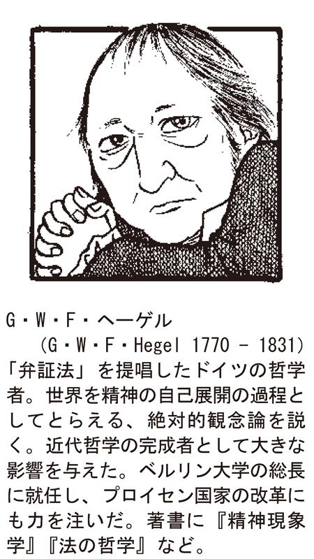
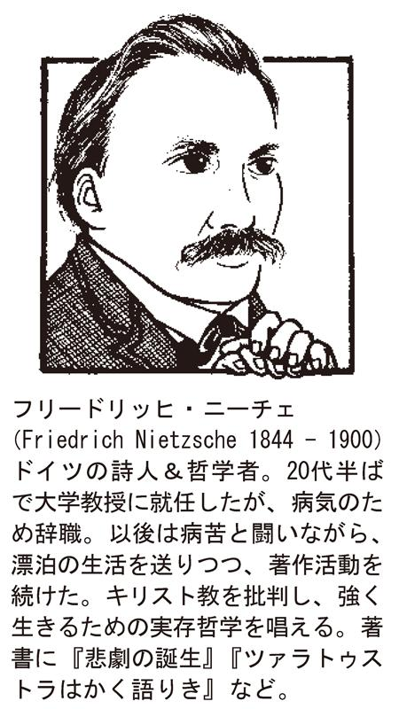
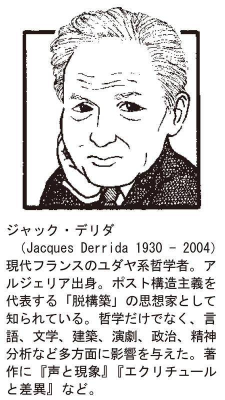
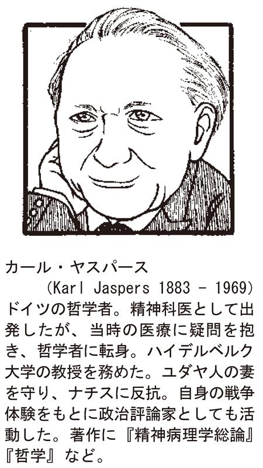

| 人生をやり直すための哲学 (PHP新書) | |
| 小川仁志 | |
| PHP研究所 (2011) | |
人生をやり直すための哲学
小川 仁志
哲学者などというおこがましい看板を掲げているせいか、あるいはここ数年「哲学カフェ」を主宰し、時折メディアで取り上げられるからか、私のもとには、子どもから大人まで日々相談が寄せられます。
ここでいう大人というのは、30代から60代まで、非常に幅広い層です。性別も男に限りません。女性も結構います。そんなこともあって、以前女性向けの週刊誌で哲学悩み相談をやったことがあります。
考えてみれば年齢を問わず、皆悩みながら生きているものなのですよね。違うのは年相応の悩みがあるということくらいです。その部分はたしかに重要です。若いころの悩みは大人になって振り返ってみれば、何でもないことであったり、逆にいい勉強だったりするからです。
ところが、大人になってからの悩みはそうもいきません。振り返った時にはもう人生の終わりを迎えているのですから。いい勉強をしたといっても、その成果を生かす人生の時間がもうないのです。だからこそ、後悔しない人生を送るためにも、大人の悩みはできるだけ早く解決しておくべきでしょう。
実はこれまで私が書いてきた本は、比較的若い人たちを対象にしたものでした。しかし、私自身も40代に突入し、特に最近大人の悩みを聞く機会が増えてきました。そこで今回は、大人限定の悩み相談を１冊の本にまとめてみることにしました。
名付けて『人生をやり直すための哲学』。人生をやり直したいという願望をもっている大人は、たくさんいると思うからです。「大人限定」というと色んな想像をする人がいると思います。「どろどろした人間関係の話じゃないか？」とか、「性に関する問題じゃないか？」とか。あるいは「社会の問題じゃないか？」とか。その通りです。そういう問題です。ご期待に沿えるようこういうのは全部取り扱いたいと思います。
具体的な悩みがあったほうがイメージが湧くと思いますので、私が見聞きした実際の悩みを題材に考えてみたいと思います。もちろんプライバシーに配慮して、だいぶ内容等は変えてありますが......。
したがって本書の構成は次のようになります。まずシーン別に具体的な悩みを聞く。そのうえで、それぞれの悩みを解決するのに最もふさわしい歴史上の哲学者を一人選んで来て、彼らの思想を駆使しつつ相談に応じて行くというものです。当然その哲学者について人となりをはじめ、関連する事項をひと通り紹介していきます。
普段相談を受ける時もそうなのですが、私の場合、できるだけ色々な話題を交えつつ話を進めて行くようにしています。悩み相談というのは内容がヘビーですから、淡々とやっていては話すほうも聞くほうも滅入ってしまうのです。哲学は真理に向かう前向きな営みですから、明るく解決していきたいのです。
さらに本書では、最後に金言めいたものも提示したいと考えています。悩んでいる時は、ずばり役立つメッセージを求める人が多いからです。とにかく、自分の悩みに重ねて読むもよし、今後出くわすであろう悩みを想像しつつ、それに備えて読むもよし、単純に楽しんで読むもよしです。
ただ、一番お勧めなのは、心が弱くなった時に読むことです。人間だれしもそういう時があるものです。都合良く相談相手が見つかる人は別として、そうでない方は、私がぜひこの本でお相手したいと思います。心が張り裂けそうで眠れぬ夜のために......。
人生をやり直すための哲学 ◆ 目 次
イラスト◎渡辺恵美
編集協力・構成◎立野井一恵
――不仲～夫婦仲が悪い時
私は夫婦仲が最悪の状態なんです。とにかく妻との関係は冷え切り、常に喧嘩ばかりしています。子育てが忙しくなったころからお互いコミュニケーションをとる時間もなく、ぎすぎすした感じになってきました。
子どもたちは大学生になって一人暮らしを始め、今は妻と二人になりました。あまり話すこともなく、当然セックスレスです。女性っぽさのかけらもないのです。この先いつまでこのような関係で過ごさなければならないのか......。とはいえ離婚するほどのエネルギーもありません。
（Ａさん・50才・男性・会社員）
お互いの健闘を称え合えるか
こういう方は多いですね。よく聞く話です。離婚すれば悩みは解決するのかもしれませんが、それを望まない場合は少し頭を使う必要があります。このＡさんの言葉からもうかがえるのは、本当は仲良くしたいという本音です。
まずどうしてこうなってしまったのか考えてみましょう。原因の分析からです。Ａさんの話によると、子育てが忙しくなったのが最初のきっかけだといいます。たしかに生きるのに必死だと、愛だの恋だのといってはいられません。
とりわけ子どもは待ってくれませんから、最優先する必要があるのです。そうこうしているうちにお互い相手を思いやり、気遣う余裕がなくなってきます。とくに男性は働き盛りで仕事も忙しくなる時期ですから、家のことは妻にまかせっきりになってしまい、妻のほうも負担が大きくなります。
本来は共闘すべきなのに、孤軍奮闘の状態が続いてしまうのです。ここでお互いが相手を気遣って、うまく助け合っていけば、このようなことにはならなかったはずなのですが。
うまくいってる夫婦はこういう気遣いがきちんとできています。最悪、うまくいかなかったとしても、関係を修復できる夫婦は、後になってお互いの健闘を称え合うことのできた人たちです。どうもＡさんはそこまでいっていない。あるいはいけないようです。
「悪妻の夫」として有名なソクラテス
さて、そんなＡさんがどうすべきかですが、一人いい哲学者を紹介するとするなら、やはりソクラテス（前４７０／４６９～３９９）でしょう。理由は二つです。彼の哲学が夫婦の関係修復に役立つということ。そして、これは半分冗談ですが、何を隠そう彼自身が悪妻の夫で有名だからです。
というわけで、しばしソクラテスの話に耳を傾けていただきたいと思います。ソクラテスの名前くらいは皆さんご存知だと思います。いわずと知れた古代ギリシャの哲学者。いや、哲学の父といってもいいのではないでしょうか。何しろ、彼以前の哲学者たちは、「ソクラテス以前の人たち」という意味の「フォアゾクラティカー」と一括して称されるくらいですから。
すべてはソクラテスから始まったのです。でもどうしてでしょうか？ 理由は簡単です。形式的には「哲学」という用語を初めて用いたから。実質的には、私たちが今やっている哲学の方法を、彼が発見したからです。「哲学の方法？」、「発見？」と思われる方も多いことでしょう。まずはそこからお話ししたいと思います。
ここで私が哲学の方法といっているのは、「問答法」のことです。晩年ソクラテスは、若者をたぶらかしたかどで裁判にかけられます。何をたぶらかしたかというと、質問しまくったのです。かたっぱしから若者をつかまえては、質問していきました。質問を繰り返すと、物事の本質に近づいていくものです。しかも答えを教えるのではなく、相手自身に考えさせるのです。
たとえば、もし皆さんが「犬って何だ？」と問われたらどう答えますか？ 「身近な動物」でしょうか。身近なのは猫も同じですよね。じゃあ猫と犬の違いは？ 犬は忠実で猫のようにそばを離れないし、主人を守ろうとするという意味でより身近だといえますね。その意味で身近だとするなら、多分犬は人間にとって「家来」なのです。
犬は、人間がすべての生き物の中で主人であることの象徴なのです。これが犬の本質です。と、私は今思いました。こんな本質が導き出されたのも、犬とは何かを問い続けたからです。これが哲学の方法です。
質問するから問答法なのですが、相手が自分で答えを見つけ出す手伝いをするという意味で、お産を助けるのになぞらえて「産婆術」ともいいます。
では、ソクラテスがこの方法を「発見」したというのはどういうことでしょうか？ それは哲学者ソクラテス誕生のエピソードにまでさかのぼります。ある日平凡な石工だったソクラテスのところに、とんでもない噂が飛び込んできました。彼の友人がデルフォイの神殿でお告げを聞いたというのです。その内容がびっくりなのですが、「ギリシャにソクラテス以上の賢人はいない」というものでした。
そこで彼はそのお告げの真偽を確かめるべく、当時賢者と呼ばれていた人たちに色々質問して回ることにしました。ところが、誰一人として自分の質問に満足に答えてくれる者がいなかったのです。それもそのはず。ソクラテスの質問は、非常に抽象的だったからです。「正義とは何か？」、「善とは何か？」、このようなことを問われても、そう簡単に答えは出てきません。皆例を挙げるのに精いっぱいです。
そこでソクラテスは気づきます。賢者と呼ばれる人たちも、何でも知っているふりをしているだけで、実は自分と何ら変わらないのだと。いや、むしろ何も知らないと自覚している分だけ、自分のほうが優れているのではないかと。なぜなら、知ったかぶりをした時点で、もうそれ以上知る機会を逃してしまうからです。
これに対して、無知であることを認め、さらに知ろうとすれば、知識は増えます。より賢くなるチャンスが開かれるのです。これが有名な「無知の知」です。聞くは一時の恥、聞かぬは一生の恥というわけです。そうしてソクラテスは、先ほどの問答法によって質問しまくることにしたのです。
いかがでしょうか？ まさに彼は哲学する方法を「発見」したといえるのではないでしょうか？
「問答法」で本音を探り出す
少し長くなりましたが、ようやくここでＡさんの質問に立ち戻りたいと思います。つまり、Ａさんには、このソクラテスの「無知の知」という態度と、「問答法」という方法論が役に立つと考えるのです。
それは決して奥さんを言い負かせばいいということではありません。その真逆です。Ａさんは自分が奥さんについて、そして自分について何でもわかっているという発想を捨て去る必要があると思うのです。「あいつはどうせ俺のことを疎ましく思っているんだろう」とか、「俺はきっとあいつのことがもう好きじゃないんだ」などという思い込みが、まず災いの元です。
先ほど奇しくも「犬とは何か？」という例を出しましたが、「夫婦喧嘩は犬も食わない」といいますよね。あれは犬くらい雑食で何でも食べるような、とりわけ人間の家来ということでいうと残飯整理役のような動物でさえ、夫婦喧嘩ほどつまらないものは相手にしないという意味です。それほど夫婦喧嘩は取るに足らないものなのです。
だって、決定的な原因などないのですから。きっかけはつまらないことなのです。それが大喧嘩、暴力、他人を巻き込んでの大惨事にまで発展するので、第三者からすればばかばかしいにもほどがあります。いわば自分勝手な思い込みが衝突している状態に過ぎないのです。
こういう勝手な思い込みのことを、ソクラテスは「ドクサ」と呼びます。そうではなくて自分に欠けた「知」を求めよ、「愛」せよというのです。哲学を意味するフィロソフィーという言葉は、知（ソフィア）を愛する（フィロ）という意味です。
そういう謙虚な気持ちになってはじめて、相手の本当の気持ちを理解する環境が整います。そして次にＡさんがすべきことは、問答法です。これは相手と自分の両方に問いかける必要があります。
相手に対しては、「俺のことをどう思ってるんだ？」、「結婚生活は満足か？」、「何が問題なんだろう？」、「どうしてほしい？」。そう素直に問いかけるのです。答えは相手の口から出てきます。この時大切なのは、決して怒らないことです。あくまで冷静に、真摯に問いかけるのです。Ａさんがすべきなのは、口論ではありません。哲学なのです。哲学は冷静に頭を働かせる営みです。激昂してしまっては元も子もありません。
そして自らにも問いかけるのです。「俺は本当はどうしたいんだ？」、「なぜ離婚しないんだ？」と。場合によっては、夫婦お互いの問いかけが、対話になり、お互いの口から真理を導き出す結果になるかもしれません。知への愛は、人への愛にもつながっているのです。
Ａさんは「当然セックスレスです」といわれてましたね。これも時間の問題でしょう。心と体はつながっています。それは一人の人間についてもいえることですが、他者との間でもいえることなのです。とくに恋人や夫婦の間ならなおさらです。心がつながれば、自然と体もつながるはずです。
相手が亡くなった時を想像してみる
ところで、ソクラテス本人はなぜ悪妻を放置していたのでしょうか？ 先ほども書いたように、ソクラテスの妻クサンチッペは、口うるさく、夫に水を浴びせるほどの悪妻として有名です。こんな格言を聞いたことはありませんか？ 「悪妻をもつと哲学者になれる」。悪妻をもった人を慰めるジョークですが、これはソクラテスのことを指しています。
でも考えてみてください。ふらふら街を練り歩いて、若者をとっつかまえては片っ端から質問して日々を過ごす夫ですよ。ろくに働きもせず、そんな毎日を送られたら、誰でも怒りますよね。ですからソクラテスにも非があるのです。それをよくわかっていたからでしょう。ソクラテスが悪妻を相手にしなかったのは。その気になれば、彼ほど弁の立つ男なら解決できたはずなのです。
おまけにソクラテスは相当の「ぶ男」だったといいます。鼻は上向き、目は飛び出し、頭はつるつる、太鼓腹、みすぼらしい服装、変な動き......。Ａさんも自分の鏡を見てみてください。「女性っぽさのかけらもない」と奥さんを非難されてましたが、今のご自分はどこまで奥さんに求められますか？ 恋人同士の時はもう少し身なりにも気をつかっていたのではないですか？ もしあなたが映画俳優のようにいつまでもセクシーでおしゃれだったら話は別ですよ......。
ちなみに、クサンチッペが本当に性悪ではなかったことは、次のエピソードが物語っています。死刑を宣告され、毒杯をあおいで死んだソクラテスの亡骸を前に、人目もはばからず彼女は泣き叫んだといいます。表面的には悪妻だったかもしれませんが、本当はソクラテスを愛していたのです。
逆に、ソクラテスのほうもうまく表現できなかっただけで、クサンチッペのことを思っていたのでしょう。クセノフォンによる『ソクラテスの思い出』にはこんな一節があります。ソクラテスの長男が、母親のひどい性格に我慢がならないというのに対し、クサンチッペをかばってたしなめたというのです。
お母さんはお前が病気の時は献身的に世話をしてくれたし、何一つ不自由させないように努めてくれているではないかと。そして、もしそんなお母さんに我慢ができないなら、お前は善いことに我慢ができないということだと......。
ソクラテス自身、クサンチッペの悪妻ぶりに我慢していたのは、心の奥底では彼女を善いもの、正しいと認めていたからだともいえるのです。
だからわからないものなのです。Ａさんも奥さんとの仲は冷え切っていると思いこんでいるかもしれません。でも、そう思いこんでいるだけではないでしょうか。実はお互いに気になっている。本当は仲良くしたい。でもそんな自分の気持ちにさえ、自分自身が気づいていないのではないでしょうか？
ソクラテスのように、どちらかが死んでしまってから後悔しても後の祭りです。そうならないように、ぜひ問いかけてみてはいかがでしょうか？
今夜の金言
最も立派で最も容易なのは、他人を圧伏することではなくて、でき得る限り善くなるように自分を心がけることである。
（ソクラテス）
――不信～信じていた友人に裏切られた時
長年信じていた友人に裏切られました。ある日お金を貸してくれといわれたのです。年末には返すとのことでした。本当は友人同士の間でもお金の貸し借りは嫌だったんですが、学生時代からもう20年以上ものつき合いですから、理由は聞かず３００万円貸しました。妻には内緒にしておきました。子どもの学資として貯めていたものですので。
ところが、裏切られたのです。別の友人から聞いたところによると、どうやらギャンブルでつくった借金だったらしいのですが、そのまま行方をくらましてしまったのです。信じた私がばかだったのでしょうか......。
（Ｂさん 45歳・男性・公務員）
友情とは「愛」
こうした悩みは最近増えています。お金に困る人が多くなっているからでしょう。なかなか断れないものですよね。特に相手が親友だったりすると、ついついお金を貸してしまうのです。ただ、そのこと自体に問題があるとは思えません。お金の貸し借りも、きちんと契約を交わして、返済期日を守ればいいのです。
問題は、裏切るという行為にあります。せっかく信じてくれた友人を裏切るというのは大罪です。友情というのは、美しく、時に家族以上の絆で結ばれていることさえあるのですから。学校時代に育まれた固い友情は、大人になってからもゆるぎなく続くものです。おそらくそこには何の打算もないからでしょう。
大人になってからできた友情のすべてが打算的だとまではいいませんが、必然的にそうならざるを得ないのです。だって、子どもはただ気が合う、楽しいという指標だけで相手を選びますが、大人はそうはいきません。仕事を通じて知り合った、あるいは何らかの必要に迫られてつき合い出したということも少なくないはずです。
何より関係性を客観的に評価してしまいます。あいつとつき合っていると楽しいけれど、経済的身分や社会的立場のつり合いはどうか、などと考えてしまうのです。とりわけ家族をもつと、その部分にも配慮する必要がでてきます。子どもはそんなことはおかまいなしです。だから親は、「あんな子とは遊んじゃいけません」などと、友人を選別しようとするのです。大人は自分でこの選別をしています。
そう考えると、昔からの友人ほど貴重なものはありません。すぐにつくるわけにはいかないのですから。いわば自分の財産です。そういう人に頼ったり、頼られたりというのは、ある意味自然なことでしょう。お金を借りなければならない事態というのは、よっぽどのことでしょうから、そこで親友を頼るのはよくわかります。
だからこそ、裏切るべきではないとされるのです。それは差し伸べられた愛に対する裏切り行為にほかならないからです。今、愛といいましたが、そう、友情は愛なのです。このことを論じたのは、かの古代ギリシャの哲学者アリストテレス（前３８４～３２２）です。そこで今回は、アリストテレスの哲学をご紹介しながら、Ｂさんの悩み相談にお答えしていきたいと思います。
現実主義者のアリストテレス
まずはアリストテレスの人となりについてご説明しましょう。彼はソクラテスの孫弟子にあたります。というのも、ソクラテスの弟子がプラトンで、そのプラトンの弟子だからです。二人はよく対比されます。なぜなら、理想主義者の師プラトンに対して、アリストテレスは現実主義者だからです。また彼はアレキサンダー大王の家庭教師でもありました。
ではアリストテレスはどのような思想を唱えていたのでしょうか。先ほどプラトンは理想主義者だといいましたが、それはイデア説といって、物事の本質や真理はここにはなく、理想の世界たるイデア界にあると主張したからです。これに対してアリストテレスが現実主義者と称されるのは、そうではなくて物事の本質や真理は、まさに目の前のここにあると主張したからです。
プラトンの話はまたいずれ詳しくすることになりますので、アリストテレスに絞ってお話ししましょう。どういうことかといいますと、彼はあらゆる物事は、素材となる質料因（ヒュレー）に、あるべき姿としての形相因（エイドス）が与えられることによって成立するといいます。つまり本質はどこか遠い世界にあるのではなく、最初から目の前の物事の中に備わっていると考えるわけです。
そんな現実主義者のアリストテレスですから、今回のテーマである友情についても現実的なことをいいます。彼は友情のことを「フィリア」と呼びます。実はこれは愛の一種なのです。友愛、同胞愛ですね。その愛とは、自分を他人と同じように愛することだというのです。
なかなか他人を愛するのは難しいものです。愛しているといいながら、その実自分のことばかり考えている人も多いのではないでしょうか。いわば時に愛は利己主義の裏返しなのです。現実的ですよね。
だけどそれは、決して彼が友情を軽く見ていることを意味するものではありません。アリストテレスはこういっています。「こうした気持ちは母親が子どもに対して抱いているところなのであり、仲たがいした友人に対する気持ちにさえこうしたものが見出される」と。友人とは、友人のためだけを思い、友人の幸せのために行動するものだというのです。
このようにとらえると、友情の目的は決して功利主義的なものではなくなります。アリストテレスは、愛と欲求の対象には三つあるといいます。それは、有益なもの、快いもの、善いものです。そしてこれらの対象に応じて、友情も三区分できるというのです。有益なものを求める友情の典型は、仕事上のつき合いといえます。いくら飲みに行っても、それは楽しむためではありません。仕事における利点のためなのです。利点がなくなれば友情も消え去ります。
快いものを求める友情の典型は、遊び友達でしょう。一緒に遊ぶというのは大事なことのように思いますが、実はそれは快楽を目的としているにすぎず、やはり目的が実現できないと関係も終わってしまうのです。これらに対して、善いものを求める友情の典型が真の友情なのです。この場合、善人同士がお互いに何かを与え合う関係にあります。そう、目的を得るためにではなく、与えるためにつき合うのです。この関係は個別の目的を越えて永続し得ます。
優れた人間は友人のために犠牲を払う
さて、Ｂさんはどうでしょうか。学生時代からの親友ですから、その友情はきっとアリストテレスのいうフィリアに似たものがあったのでしょう。だからこそ友人のためだけを思い、貴重なお金を貸してしまった。理由を聞いてもっと別の助け方をすべきだったという意見もあるかもしれません。しかし、本当に困っている時は、相手の望む通りにしてあげるという選択も「あり」でしょう。仮にＢさんのケースがそうだったとしましょう。
にもかかわらず、裏切られてしまったのです。では、Ｂさんの選択は間違っていたのでしょうか？
アリストテレスにいわせるとそのようなことはありません。「優れた人は友人のために行動し、自分自身を犠牲にする」ともいっていますから。
Ｂさんは裏切られたわけではないのです。だって、友情を追求してお金を貸した時点で、もうすでに自己を犠牲にしているのです。それは友人からの見返りを求める行為とは異なるのです。その友人が助かれば、それで目的は達せられたのです。お金が返って来るか、返ってこないかは、別の話です。そう考えてみてはいかがでしょうか。
たしかに太宰治の名作『走れメロス』では、死ぬ気で友セリヌンティウスとの約束を守ったメロスが称えられます。そして仕方ない状況とはいえ、一瞬でも友を裏切ろうとした事実が非難されます。
その基準からするとＢさんの友人はひどい人間で、Ｂさんは裏切られた哀れな人間ということになってしまうかのようです。しかし、『走れメロス』とは前提が異なります。人を信じるというのがメロスの物語では大前提であり、徳になっています。一方アリストテレスは友情にそのようなものを求めているわけではないのです。あくまでも友情とは愛することなのです。
視点を変えるなら、こう見ることもできます。人間観の違いです。『走れメロス』が前提とする人間は強い人間だといえます。くじけそうになりながらも走り続けたメロスは、どう考えても意志の強い人間です。それに対してアリストテレスのいう人間は弱い生き物なのです。
私もそう思います。だから人間は悩み続けるのです。アリストテレスも「意志の弱さ（アクラシア）」について論じています。どうするのが善なのかわかっていても、行動に移すことができないのが人間だというのです。でも、だからといってそのままでいいというわけではありません。
理想は、アクラシアに陥ることなく、徳のある生活を送ることです。そのためには、状況に柔軟に対応する分別と、個別状況から全体としての目的に至る道筋を見通す思慮によって、中庸を選択していく必要があります。
中庸を見出し、これを選択できるようになれば、悩みはなくなるのかもしれません。中庸というのは、ほどほどという意味です。とりわけ優れた性格について議論するときに使われます。だからといって、単純に極端でなければ優れた性格だといいたいわけではないようです。アリストテレスによると、それは気質や後天的性向なのだそうです。つまり、人間は怒りなどの情動を生じますが、その情動のままに行動を起こすのではなく、思慮分別に従って行動する後天的性向こそが優れた性格だというのです。中庸はそうして見出されます。
もう少し正確に見ておきましょうか。アリストテレスは次のようにいいます。「恐怖、自信、欲望、怒り、憐れみ等々の快不快は、感じすぎることもあれば感じなさすぎることもあり、その両方ともよくない。これらの快不快を、適切な時に、適切な事物に対し、適切な人々に向かい、適切な動機により、適切な方法で感じることが、中庸であると同時に最善であり、これを徳という」。
具体的には、臆病と無謀の間の適切な状態、つまり中庸は勇敢となります。同じく無感覚と放埓の中庸は節制、追従と無愛想の中庸は好意、卑下と自慢なら誠実となります。人間はどうしてもどっちかに傾いてしまうのですよね。
「中庸」を選択して徳のある生活を
Ｂさんの友人は無感覚か放埓かのいずれかだったのでしょう。それでギャンブルで借金を抱えてしまった。もし彼が中庸である節制を心がけていれば、そんな状態にはならなかったはずです。意志が弱かったのでしょう。
Ｂさん自身はどうかというと、先ほどの例によると友人に対して無愛想であったわけではありませんね。お金を貸したのですから。でも単に追従しただけなのか、好意だったのか。それによって評価は変わってきます。単に求めに応じて、あるいはその場の状況に対して追従しただけなら、それは後悔すべき行為といえます。しかし、中庸としての好意からお金を貸したというのなら、それは徳の実践なのですから、何も後悔する必要はありません。この意味でもＢさんは悩む必要などないといえます。
そういえば、人にお金を貸したら、返ってこないものと思えといいますよね。Ｂさんは、友人が黙って行方をくらましたことにがっかりしているのかもしれませんが、信じてくれた友にお金を返せなくなったら、消えたくなるのもわかります。いや、そう解釈してあげるのが、Ｂさん自身にとっても慰めになるように思います。
あるいはフランスにこんな箴言があります。「友人に不信を抱くことは、友人に欺かれるよりも恥ずべきことだ」。Ｂさんの場合も、友人に裏切られたことよりも、むしろ友人を疑うことをやめたほうが悩みが解決するのではないでしょうか。もしかしたら、いつかその友人もお金を返しに姿を現すかもしれないのですから。少なくともそう信じて過ごしたほうが心が晴れるのではありませんか？
今夜の金言
友人とは、友人のためだけを思い、友人の幸せのために行動するものである。
（アリストテレス）
――不和～家族から理解されない時
私は家族から理解されなくて困っています。家の中でもなんとなく浮いてしまっているのです。中学に通う娘が二人いるのですが、最近口もきいてくれません。私だけが男だからというわけではないと思うのですが、いつも３対１で私が間違っているといわれるのです。
土日も仕事が多く、コミュニケーション不足も災いしているのかもしれません。何でも私のせいにされるので、ついつい喧嘩になってしまいます。家族のことを思っているつもりなのですが、どうも空回りで、自信を喪失しています。
（Ｃさん 39歳・男性・会社員）
自分を責めるのをまずやめる
今自信をなくしているお父さんが多いですね。不景気だからでしょうか。仕事もうまくいかない、家庭でも浮かない顔をしている。あるいはいらいらして八つ当たりをしてしまう。そしてまた自己嫌悪に陥るといった悪循環。そんな人が増えています。
そういう時こそ自己否定せずに、前向きに自分を信じるしかないのです。家族は一番大事ですが、家族も自分ではないという意味で他人です。考え方も違うでしょう。だからうまくいかない時もあるのです。
家族はあまりにも身近であるため、全幅の信頼を置いてしまいます。日頃はそれでいいのです。何でも相談できます。自己を肯定してくれ、受け入れてくれる。それによって癒されるのです。外で働いて帰ってくるお父さん、お母さんは、その疲れを家族との憩いの時間によって癒し、労働力を再生産します。「よし、また明日も皆のために頑張るぞ！」と。
ところが、何らかの理由で家族との関係がうまくいっていないような時には、まずはその関係の修復に最善を尽くすことでしょう。しかし、常に簡単に関係修復が図れるとは限りません。そんな時は過度に自分を否定しないように注意する必要があります。
自分が悪いと思うことは大事ですが、あまり自分を責めすぎると、こういう時はうつになったり、よくない方向に行きがちです。そうならないようにするためにも、自分をしっかりもつことです。要は自分を肯定し、信じるのです。
最後に残るのは「私」――デカルトの思想
そこで役立つのはデカルト（１５９６～１６５０）の哲学だと思います。今回は近世フランスの哲学者ルネ・デカルトをご紹介します。デカルトといえば「我思う、ゆえに我あり」というフレーズが真っ先に出てくるのではないでしょうか？ これは彼の思想を象徴するフレーズです。このラテン語訳の「コギト・エルゴ・スム」という表現も有名で、「デカルトのコギト」などといったりもします。
一般には「私」を中心に考える思想とされています。彼は暗い炉部屋に閉じこもって、あらゆるものを疑い、それでも最後に残るのは今こうして疑っている自分だけだということを悟ったといいます。だから沈思黙考するタイプの典型的な哲学者に見られがちなのですが、決してそうではありません。
どちらかというと、型破りで例外的な存在なのです。というのも、彼は常に旅人だったからです。人生の多くの時間を諸国漫遊に費やしました。たくさん見て、経験して、そのうえで考えたのです。そしてまた旅に出ました。最後はスウェーデンで客死しています。よくこのエピソードを聞くと、デカルトのイメージが変わったという人がいます。でも考えてみれば、人は何もないところから何かを生みだすことなどできません。ですからちっとも不思議ではないのです。
彼の旅は心の旅だといえるのではないでしょうか。そういえば、『心の旅』という映画がありました。ハリソン・フォード主演のヒューマン・ドラマなのですが、事件に巻き込まれて記憶を失ったことをきっかけに、本当の自分や家族愛を取り戻すというストーリーです。心の旅を経たおかげで、ようやくたどり着ける目的地があるのです。それは何を隠そう、本当の自分にほかならないわけです。そして本当の自分にたどり着くことは、失いかけていた家族愛を取り戻すことにもつながってくるのです。
では、デカルトの心の旅とはどのようなものだったのでしょうか？ 一言でいうなら、それはすべてを疑うプロセスだといえます。デカルトはいいます。「ほんの少しでも疑いをかけうるものは全部、絶対的に誤りとして廃棄すべきであり、その後で、私の信念の中にまったく疑いえない何かが残るかどうかを見極めねばならない」と。
これは「方法的懐疑」と呼ばれます。疑って疑って、夢までも疑って、それでも最後に残ったこの疑っている私自身、これが旅の目的地なのです。疑う過程では様々な苦難や葛藤があることでしょう。それにもめげずに前に進むのです。そうして見つけた不動の私は、もう何も悩むことはありません。いくら家族と意見が食い違おうと、責められようと、私は私なのです。自信をもって判断し、自信をもって生きることができるはずです。
同時にそれは、事態を客観的に見ることができるようになることをも意味しています。それまでの私は事態を客観的に見ることさえできなかったのです。世界を疑う前の私は、世界に埋もれてしまっていたのですから。世界に埋もれた自分に、外から世界を見つめるなどという芸当ができるわけがありません。せいぜい主観的に見るのが関の山です。しかしそれは、自分勝手な思い込みにすぎません。
それがどうでしょう？ 疑いを重ね、ついに私というものを世界とは切り離した形で自覚するやいなや、私は世界の外に飛び出すことができるのです。そしてあたかも世界の存在根拠になったかのごとく、客観的に世界を見ることができるようになるのです。
王のごとき視点で言葉を使う
私のイメージではそれは王のごとき視点です。王はすべてを支配します。何でもお見通しです。自信たっぷりです。ですからＣさんも、王になればいいのです。もちろん気持ちの上でですよ！ 本当に王になった気分で傲慢にふるまえば、ますます家族から見放されてしまいます。私がいいたいのは、もっと自信をもっていいのではないかということです。
ただ、いくら王になっても悩みはあるものです。たとえば秦の始皇帝は中国を統一した絶対君主として有名ですが、そんな彼でさえ悩みを抱えていました。それは肉体の衰えです。
だからこそ晩年始皇帝は、不老長寿の薬探しに奔走したといいます。心で思ったことは何でも実現できた王様も、肉体の衰えだけは支配できなかったのです。なぜか？ それは心と身体が必ずしも同じものではないからです。
実はデカルトもそのことを強く訴えています。悪名高き心身二元論と呼ばれるものです。デカルトは、心は考えるものであるのに対し、身体は物や機械と同じく「延長」、つまり単なる広がりにすぎないととらえます。
このようにとらえた場合の問題は、心と身体の関係性を説明できないことです。「病は気から」、「ストレスは万病の元」、「健全な精神は健全な体に宿る」などというように、常識的に考えると、心と身体はやはりどこかでつながっているはずです。科学的に考えても、「悲しい時に涙が出るのはなぜか？」という疑問が湧いてくるはずです。それにもかかわらず、両者はまったく別の性質をもった別の存在であるとすると、いったいどうやってこの現象を説明すればいいのでしょうか？
デカルトは脳に松果腺という部位があって、それが両者の相互作用を生みだしているといいました。しかしどう考えても苦し紛れです。後の哲学者たちはこの問題をめぐって頭を悩ませることになります。
さて、少し脱線しましたが、少なくとも私たちの意識は特権的な存在にあるのはたしかです。意識次第でものの見方も変わってきます。それは自分の周りの世界を変えることでもあるわけです。
言い方を換えると、デカルトは人間の自由意志を重視しているのだといえます。考えるということは自由意志を発揮することにほかならないからです。人間は神とは違って何でも理解できるわけではありません。でも、デカルトによると、それは判断を差し控えているにすぎないのだといいます。そしてそれもまた自由意志を発揮した結果なのです。むしろあえて判断を差し控えることができるという点に、人間の完全性を見ているわけです。
このように人間を完全な存在だとするデカルトは、先ほど紹介した心身二元論から人間のメカニズムを機械論的に解明しつつも、機械や動物とは根本的に異なると主張します。それは、臨機応変な言語の運用能力と、事態に応じた理性の適用です。これらは機械や動物には真似のできない行為なのです。
つまり、状況に応じて適切な言葉を発するわけです。動物もコミュニケーションをとりますが、人間ほど複雑高度な情報伝達はできません。空気を読むという表現があります。あれほど高度な状況判断はありません。その判断のもとに最善のタイミングで、最善のトーンで、最善の言葉を発することで、人間は目の前にいる他者の心を動かすことができるのです。
たった一言で目の前の人を泣かせることもできれば、怒らせることもできます。そしてもちろん喜ばせることもできるのです。たった一言で。だからといって同じ言葉が常に同じ効果をもつとは限りません。空気を読んで選択する必要があるのです。その意味で詩という芸術はすごい力をもっていると思います。ほんの短い言葉だけで人の心を大きく揺り動かすことができるのですから。
実は私の住んでいる山口県周南市というのは、「ぞうさん」の歌で有名な詩人のまどみちおさんの出身地ということで、まどさんを記念した賞があったり、イベントがあったりします。そのまどさんの詩に、言葉を扱った「ああ 日本語！」という作品があります。
生まれてマもない
赤子を
赤ん坊とよぶ
日本語のやさしさ
美しさは
日本人の素晴らしさ
白地に赤丸を国旗
岩に苔むすまで
を 国歌にしている
日本語のやさしさ
美しさは
平和人の素晴らしさ
二つながらのこの
やさしさ 美しさを
このまま広げていこう
ふるさと宇宙の
永遠光を
ほめたたえるために
どうですか？ 素敵でしょ？ この詩はまさに、言葉の素晴らしさと力を表現したものといえるのではないでしょうか。
自分の言葉でコミュニケーションを
さて、Ｃさんはご家族と不仲になってしまって、理解されないと嘆いておられます。それはご自身も認められているように、コミュニケーションがうまくとれていないことに起因する部分が大きいと思われます。
家族内といえども空気を読んで、最適の言葉を選ぶ必要があります。その際大事なのは、自信をもつことです。自分が毛嫌いされていると思うと、ついつい卑屈になってしまい、いい言葉も出てきません。相手を褒める時は、まず自分に自信がないといけないのです。
自信の根拠については心配ご無用です。だってデカルトもいうように、自分という意識はこの世の中において限りなく特権性をもっているのですから。自分がいるから、自分が考えるから、世の中は存在しているのです。ただ、くれぐれも傲慢にならないように！
今夜の金言
このようにすべてを偽と考えようとする間も、そう考えているこの私は必然的に何ものかでなければならない。
（デカルト）
――孤独～わかちあう人がいない時
現在私は外資系金融機関に勤めています。いわゆる独身のキャリアウーマンです。お金には困っていませんし、結構自由に生きていますから、その点では不満はありません。ただ、周りの友達は皆結婚して、子どもを授かって、普通に人生を歩んでいる人たちが多いのです。そんな中で独り暮らしをしていると、ふと孤独を感じることがあります。
そもそも私は他人とかかわるのが苦手なんです。仕事上は仕方ないのでかかわってますが......。私生活まで他人に気を使ったりしたくないんです。同じような境遇の女性と傷をなめ合うのも嫌ですし、自然と独りで過ごすことが多くなります。私はずっとこのまま孤独な人生を送ることになるのでしょうか？
（Ｄさん 35才・女性・会社員）
「他者」は本当に必要ないのか
自由に生きているし、生活に不便もないなら、むしろ独りでいることは往々にして快適ですらありますよね。でも、ふとしたときに感じる孤独。人はその孤独に耐えられず、誰かと一緒にいることを選ぶのです。このＤさんもまたそんな一人なのでしょう。
外資系金融機関に勤めるキャリアウーマンで、何不自由ない生活。でも周りの同世代の人たちを見ていると、皆結婚していく。自分だけが取り残されるかのような気持ちになるのもわかります。かといって同じ境遇の人たち同士で群れるのも嫌。
何より問題なのは、Ｄさんはそもそも他者とかかわるのが苦手だといわれている点です。そうなると必然的に孤独になってしまいます。それでも平気な人はいいですが、やはり寂しくなる。これはもう苦手を克服するよりほかありません。
仕事上うまくやれてるのは、どうやらがまんしているからのようですが、私生活はそれでは長続きしませんよね。ですからなんとか考え方を変えるしかないのです。でも、無理をする必要はないと思います。ほんの少し物事の見方を変えるだけで、考え方は大きく変わるものです。
ナチスの捕虜収容所を経験したレヴィナス
Ｄさんが物事の見方を変えるのに役立つ哲学者は、やはりエマニュエル・レヴィナス（１９０５～１９９５）でしょう。なぜなら、この人はまさに「他者」について哲学してきた人だからです。レヴィナスというのはリトアニア生まれのユダヤ系の人で、後にフランスに帰化します。彼の思想の背景にあるのは、ユダヤとしての出自と、捕虜収容所での体験です。
ナチスドイツに捕虜として捕まり、人間が人間としてではなく、番号だけで管理されるような生活を余儀なくされたわけです。この人自身は奇跡的に生き延びましたが、リトアニアの家族はほぼ全員殺されたといいます。こうした強烈な体験が、思想を形作っていったのです。
ナチスを経験した同時代の他の多くの思想家たちがそうであったように、レヴィナスもまた人間一人ひとりの個性や尊厳に着目することになります。彼の主著は『全体性と無限』といいます。ここでは全体性が批判されて、無限性が求められます。この全体性が象徴しているのは、西洋の哲学に脈々と流れる「私」中心の思想です。
デカルトが「我思う、ゆえに我あり」といって、「私」という存在を世界の中で特権化させて以来、いや、レヴィナスにいわせるともっと以前の古代ギリシャの時代から、西洋の哲学というのは「私」中心主義だったのです。近代哲学の完成者といわれるヘーゲルをはじめ、皆そうです。
では、「私」中心であることの何がいけないのかというと、他人を同化してしまうことです。私たちは自分中心で考える時、他人も同じ考えをもっているかのようにふるまいます。仮にそうでないと気づいた時には、自分と同じ考えをもつように仕向けるのです。たとえば、説得したり、強要したり。
その最たるものが全体主義です。ナチスドイツでは、皆が同じ意見をもっているかのように国家が強制しました。むろんそんなことは不可能ですから、反対する人間は粛清されていったのです。実に恐ろしいことです。
でもそれは日常の私たちの、ほんのささいな他者への態度の延長線上に起こりうることでもあります。だからこそ気をつけなければならないのです。人間というのは、一人ひとりが個性をもった、異なる存在です。まさに無限に可能性を秘めた、無限に異なる存在なのです。レヴィナスがいう無限という言葉も、そのような内容を含んでいます。
ただやっかいなのは、他者を自分の中に取り込んでしまおうとするのはある種の本能なのです。レヴィナスは「かたちなきものの形態化」といいますが、要は人間は常に形を明確にしようとする生き物なのです。
その目的は、対象を所有するためです。所有することで〈他なるもの〉としての世界は私のもの、つまり〈同〉になるのです。人間というのは欲求の塊なのです。別の言い方をすると、欠如の塊です。だから求めるのです。そしてその欲求を満たすと同時に、世界の一部はまた私のものとなるのです。しかし、そうすると、決して私に回収されることのない絶対的に他なるものは存在しないのかどうかということが問題になります。これがレヴィナスの主題といっていいでしょう。
人間が求めるにもかかわらず、決して満足されないもの。レヴィナスはそれを「欲望されるもの」と呼びます。彼は欲求と欲望を区別します。欲求はフランス語のブゾワンの訳で、欲望はデジールの訳です。欲望の対象は決して充足されることのないような、無限に追い求められるものです。それが他者です。だから他者は所有されないのです。
他者の存在を「顔」で意識する
いったいどうすればそのように他者を無限の存在としてとらえることができるのでしょうか？ 先ほども書いたように、私たちは意識しないとどうしても他者を自分と同化しようとしてしまいます。ですから、他者を他者として意識する必要があるのです。レヴィナスが与えてくれているヒントは「顔」です。
人間は一人ひとり異なる顔をもっています。その顔を意識できるかどうかです。私は教師をしている関係上、学生たちの顔と名前を一致させる必要があります。たくさんいてなかなか覚えられないのですが、顔と名前が一致する場合というのは、その人の顔を識別できるようになった状態なのです。
いくら名前を明確に覚えていても意味がありません。あの顔がこの名前なのだと意味づけない限り、その人を完全に把握したことにはなりません。だから本でもプロフィールに写真が載ってないと、すぐ名前を忘れてしまいます。だから私もできるだけ顔を晒すようにしています。
一人ひとり異なる「顔」は他者の象徴なのです。顔に注目するのはレヴィナスだけではありません。古今東西「顔」は何かと主題になります。そういえば、古代ローマの雄弁家キケロも、「顔つきは魂の忠実な像である」といっています。あるいは古典的な怪談に「のっぺらぼう」というのがあります。あの顔がつるつるのお化けののっぺらぼうです。
のっぺらぼうが怖いのは、顔がないからです。顔がないと、何者かわかりませんから。それは恐怖なのです。だから顔を覆うヴェールに恐怖を感じる人がいるのです。これは今ヨーロッパで大議論になっています。一部のイスラームの女性は、ブルカというスカーフで全身を覆います。ですから、顔がよく見えません。ヨーロッパの白人たちは、それに恐怖を感じ、公共の場でのブルカ着用を禁止しようとしているのです。
それでフランスやベルギーなどでは、イスラームと衝突しています。これは過剰なイスラーム恐怖症の現れといえますが、のっぺらぼうのことを考えると、顔の見えない恐怖というのもちょっとわかるような気はしますね。
ちなみにのっぺらぼうという表現は、個性がないことを表わす時にも使われます。これはまさに顔というものが、人間の中身を表わしていることを示すものといえます。どんな顔かによってどんな人かがわかるというのにも合理性がありそうです。
中でも目は特に大事です。「目を見て話せ」といいますよね。あれは他者を他者として認識し、向き合うためです。だから目を見ると人間を感じるのです。戦場で兵士は相手の目を見ないといいます。相手も人間だと思うと撃てなくなるからです。
では、なぜそんなに他者が大事なのでしょうか？ それは他者のおかげで自分が存在しているからにほかなりません。すでに書いたように、他者がいなくなってしまった世界は全体主義の世界です。皆同じ考えをもち、違う考えをもつと消されてしまう。やがてそこには自分も存在しなくなります。自分とは、物事を考える存在ですが、そうやって考えること自体が否定されるのですから。
いかがでしょうか？ 他者の存在は自分にとってすごく大事なもののように思えてきませんか？ レヴィナスによると、他者の存在そのものが「倫理」だといいます。つまり他者と自分との関係性そのものが倫理であって、「私」という存在を規定してくれるのです。ただし注意しなければならないのは、その場合の関係性は非相互的で、非対称的なものだという点です。
普通は倫理というと自分と他者との間の対称的関係です。仲間の間での守るべき規範、ルールのことなのですから。ところが、レヴィナスのいう倫理は、顔に象徴される他者に対し無限の責任を負うというもので、それは非対称な関係を生みだすのです。
他者とのその非対称な関係性があってはじめて、私たちは存在しうるのです。存在よりも他者が先立つわけです。
他者がいるから自分も存在する
さて、Ｄさんは、他者の存在をあまり重視していなかったようですね。むしろ苦手だといわれていました。しかし、そうやって他者とかかわらないことによって、実は孤独を感じている。だから本当は他者と触れあいたいのです。
これは他者という存在を自分の中で不可欠の、大切な存在に変えてしまえば解決します。そこでレヴィナスの思想が役に立つのです。だって彼は他者がいるからこそ自分が存在するとまでいうのですから。そして私たちは他者に対して無限の責任を負っているとまで。
そこまでＤさんが思えるかどうかはわかりませんが、少なくとも他者の存在が自分の存在にとって大切なものであるということをご理解いただけると、日々の人間関係も変わってくるのではないかと思うのです。
今夜の金言
顔は〈他者〉の「顕現」、たしかなあらわれである。顔において、他者はあらわれる。
（レヴィナス）
――失敗～不手際や失策をおかした時
私は企業の研究所に勤務するエンジニアですが、実験中ついミスを犯してしまいました。しかし、私しかわからないことなので、とりあえず報告していません。
というのも、近々主任への昇任の話があるためです。ここでマイナスがつくと、昇任が危ぶまれます。あまり大きな問題にはならないだろうと思うので、そのままにしているのですが、もし万が一何らかの事故につながった時のことを想像すると不安になります。そのミス自体は大したことではないため、早く忘れてしまいたいのですが......。
（Ｅさん 27歳・男性・エンジニア）
ミスは自分一人の問題ではない
技術者であるＥさんは、仕事中にミスを犯してしまったとのこと。大したミスではないというのですが、事故につながる可能性がわずかでもあるなら、それはやはり報告すべきなのです。これは誰でもわかると思います。にもかかわらず、このＥさんが悩んでいるのには、大きく分けて二つの理由があると思います。
一つは世間の風潮です。少なくとも日本の社会には、自分のミスを逐一報告する文化は根付いていません。だからこれくらいいいだろうということになってしまうのです。そこらじゅうに痰を吐く人はいませんね。それが現代日本の文化だからです。
ところが、以前中国に住んでいたときに驚いたのは、「請勿随地吐痰」という表示が目についたことです。これは「所構わず痰を吐かないようにしてください」といった意味です。つまり当時中国では所構わず痰を吐かないという文化が根付いていなかったことを意味しています。
もう一つは人間の弱さです。いくら文化が根付いていても、個人的に事情があれば、堂々とミスを告白できるかどうかは別問題です。特にこのＥさんのケースでいうと、自分しか知らないうえに、昇任が控えているという事情があります。それでもなお告白できる人は、強い人でしょう。人間というのは弱いものです。
Ｅさんのような状況に陥ると、人は天秤にかけるわけです。ただ、人間が物事を天秤にかけること自体は、必ずしも悪いことではありません。これは功利主義的な発想なのです。たとえば次のようなことが考えられるかもしれません。
もしかしたら、たいして大きな問題ではないのにミスが明らかになって、外部に知れ渡ることで、会社の名声も落ちるかもしれません。もし事故等の影響が出ず、かつ隠しきれるなら、そのほうが幸福が大きいじゃないかと計算するわけです。仮にＥさんが報告しても、会社自体がこんなふうに考えるかもしれません。事実それはよく起こっています。
こうした考え方は、現代日本社会の風潮でもあります。いや、日本に限らず、世界中の多くの国で、今は皆がそのような計算をして生きているのです。そのほうが効率がいいから。多少後で問題が起こっても、そんなケースは多くはないはずです。それに犠牲が出ても、小さいものならよしとするのです。
でも、でもですよ、その数少ない事故の犠牲が、自分の身にふりかかってきたとしたらどうでしょう？ 計算によると一万人に一人が苦しむだけだからと放置された問題が、もしも運悪く自分の身にふりかかってきたとしたらどうでしょうか？ それでも仕方ないと思える人はいるかもしれません。自業自得だからです。しかし、そんな人でも、自分の子どもなどに問題がふりかかってくると目の色を変えるに違いありません。
人間としての「義務」を訴えたカント
つまり、それが誰であれ、一人の人間の重みに気づけば、私たちは違う行動をとれるはずなのです。そのことを教えてくれるのがドイツの哲学者イマヌエル・カント（１７２４～１８０４）です。カントは義務論と呼ばれる厳しい倫理を提示します。その名にふさわしく、人間としての義務があるというわけです。
たとえば、正しい行いをするのは義務だというのです。だから条件をつけるなんてもってのほかです。お金をもらえるなら正しい行いをするとか、褒めてもらえるならやるとかいうのはだめなのです。つまり、「もし......を欲するならば、～せよ」というふうに、ある目的を前提として、その目的を実現するために必要な手段としての行為を命ずるのはいけないというのです。このような条件付の命令を「仮言命法」といいます。
カントが求めるのは、一切条件をつけない行為です。それは、単に「～せよ」という形で示されます。このような条件を一切つけない命令を「定言命法」といいます。問題は、正しい行いをするといっても、自分がそう思っているだけでは意味がありません。そこでカントは、「あなたの意志の基準が、常に普遍的な立法の原則に合致するように行為しなさい」という原理を提示します。
意志の基準が普遍的な立法の原則に合致するということは、要はみんなの基準に一致するときということです。そのときはじめて定言命法は当てはまるというのです。つまり、誰もがその判断が正しいと思える場合にのみ成立するということです。
だからこの基準は、形式が普遍的か否か、つまりみんなが納得するか否かを判定するだけの原理であって、基準の中身にはかかわらないわけです。そうすると、必ずしも道徳的な意味で妥当な結論を導くとは限りません。みんなが正しいと思うことなんていいかげんなものです。たとえば、イランでは姦通罪を犯した女性は石打ち刑という残酷な刑を科されます。でも彼らはそれが正しいと思っているのです。
外国だからといわないでください。日本だって同じですよ。死刑に賛成する日本人は多いですが、先進国の多くはそれを野蛮だと感じているのですから。では何か絶対的な基準はないのでしょうか？ カントはあるといいます。「あなたの人格やほかのあらゆる人の人格のうちにある人間性を、いつも同時に目的として扱い、決して単に手段としてのみ扱わないように行為しなさい」。これがヒントです。
つまり人間性を手段として扱わず、目的とせよということは、人間の尊重を訴えているわけです。これは行為の道徳性の実質的な根拠を、個々の人間の尊厳性に求めているのだといえます。
では、どうして人間はそれほどまでに絶対的な価値をもっているといえるのでしょうか？ カントにいわせると、人間には「意志の自律」が存在するからだそうです。意志の自律というのは、誰に強制されているわけでもないのに、自ら選択をすることができる能力のことです。
こんなことができるのは人間をおいてほかにないのです。牛や馬は強制されないと動きません。鞭で打ったり、ニンジンをぶらさげないとだめなのです。しかし人間はそのような強制や条件がなくとも自らの意志で行動できます。ここで思い出していただきたいのが、先ほどの定言命法です。
いい換えるなら、条件に左右されずに、とにかく「～せよ」という厳しい要求がなされるのは、人間にはこの意志の自律が備わっているからなのです。したがって道徳性の本質は、実は意志の自律にあるのだといえます。そして、人間はこの意志の自律によって、自らの欲望さえをも乗り越えることができるのです。
「仮言命法」ではなく「定言命法」で考える
さて、ここでカントの義務論をＥさんの相談に当てはめてみましょう。まずミスを報告することが正しい行いといえるかどうか、検討してみましょう。この場合、ミスが即座に大事故につながるようなものではないみたいですが、それでも事故につながる可能性はあるとのことです。そうすると、少なくとも人間を傷つける可能性があるわけです。
とするならば、そのような事態を避けるため、ミスを報告するというのは、普遍的な立法の原則、つまりみんなが正しいと考える行為であるといえます。
ところが、Ｅさんは自分の昇任が理由でミスを隠そうとしました。もしそれがなかったら、きちんと報告していたのかもしれません。たとえば、ミスを報告したら昇任できるという制度があったとしましょう。Ｅさんはそれならきっと報告していたでしょう。でもそれはカントの批判する「...ならば～する」という仮言命法です。
ここでＥさんは、昇任の有無にかかわらず、無条件にミスを報告する義務があったのです。それがカントの求める定言命法です。
このような回答を聞かれると、皆さんは厳しいと感じられるかもしれません。人間という弱い存在にとって、そんな厳しい態度は酷ではないかと。たしかに、ミスを報告するや否や、Ｅさんは社内外で非難の的になることでしょう。マスコミが興味をもつような要素があれば、過剰に叩かれます。これはよくありません。しかし、だからといって報告を求めるのを酷だと考えるのは筋違いだと思います。
ここでの問題は、社会の側にあるのです。ミスを過剰に叩くから、ミスは隠ぺいされるのです。ミス自体は誰でも犯しうるものです。孔子も『論語』に書いているように、間違いをすることが過ちではなく、間違いを改めないことが過ちなのです。そういう社会のコンセンサスがないと、ミスは常に隠ぺいされることになってしまいます。
多くの事件は、ミスそのものではなく、隠ぺいが問題なのです。ミスそのものはたいしたことなくても、隠ぺいによって大事故につながってきます。
私は勤務校の関係で、「技術者倫理」という科目も教えています。大学３年生に当たる学生たちに必須科目として履修させているのですが、教科書に出てくる著名な事例の多くがこのパターンです。フォード・ピント事件をご存知でしょうか？ 『訴訟』という映画にもなったのですが、フォード社がピントという小型車を開発しました。ところが、発売直前になって、設計上の欠陥が原因で、後部から追突されると爆発炎上することが判明したのです。
経営陣は迷いました。設計変更して造り直すか、そのまま発売するか。もちろんそのまま発売すると事故が起き、損害を賠償する必要が生じてきます。ところが、賠償金と設計変更にかかる費用とを比較計算したところ、賠償金のほうが安いという試算が出たのです。
そこでなんとフォード社はそのまま発売する道を選びました。案の定、衝突による爆発炎上事故が相次ぎ、尊い人命が失われました。そして賠償金は予想を上回る莫大な額になってしまったのです。
この事例が物語っているのは、人命にかかわる問題で功利計算は無意味であるということと、ミスの隠ぺいこそが大事故を引き起こすという事実です。だからこそ教科書のお手本にもなるような典型事例として紹介されています。
あるいはチャレンジャー事故もそうです。国家の威信をかけて打ち上げるＮＡＳＡの宇宙船プロジェクトには、ミスの隠ぺいを誘発するインセンティブすら垣間見えます。この事故でも、技術者たちは事前に不具合がわかっていたにもかかわらず、経営陣に押し切られてしまいました。結果、チャレンジャー号は発射のわずか一分後に爆発し、尊い乗組員たちの命を奪ってしまう結果となったのです。
ミスの報告が評価につながる
では、反対にミスを報告した事例はどうでしょうか。シティコープ・ビル事件というのがあります。こちらはルメジャーという著名な建築家が、すでに完成したビルについて倒壊の指摘を受け、勇気を出してミスを認め、補強工事を行ったという事例です。しかもその倒壊の危険性というのは、仮に16年に一度の嵐に遭えばというものでした。
16年に一度ならごまかしてもいいようなものですが、彼はそのような隠ぺいはしなかったのです。保険会社から損害賠償保険の料率を上げられるのも覚悟しましたが、逆に誠実な態度が評価され、なんと保険料率は引き下げられたそうです。そしてミスをしたのに、彼の評価も上がりました。ここで大事なのは、ルメジャーは決して自分の評価が上がることを意図してミスを認めたわけではない点です。それはあくまでも結果にすぎません。でも、おそらくこの結果は必然なのではないでしょうか。
ミスは軽い病気みたいなものです。誰だって罹ります。でもきちんと治療すれば、たいがいの病気はすぐに治るのです。にもかかわらず、いくら軽い病気でも放置すれば死に至ります。それが隠ぺいです。早期発見、早期治療は、勇気さえあればできることです。ミスも同じではないでしょうか。フォード社の経営陣になるか、ルメジャーになるか、Ｅさん、どうかよく考えてみてください。
今夜の金言
汝の意志の格率がつねに同時に普遍的な立法の原理となるように行為せよ。
（カント）
――不振～成果があげられず、不遇な時

私はベテラン営業マンで、一応課長代理の肩書をもらっています。ただ、最近スランプで、業績はあまりよくありません。部下とも上司ともうまくいかず、入社以来最悪の状態です。調子のいい同期を見ると焦ります。自分の人生、はたしてこれでよかったのかなどと考え込むこともあります。理由はよくわかりません。
ただ、40歳という年齢のせいでしょうか、20代の頃のような無理をするとすぐ体調を壊してしまうのです。そのへんの苛立ちが影響しているのかもしれません。どんどん悪い方向に突き進んでいるような気がします。なんとかしたいのですが、きっかけがつかめません。
（Ｆさん 40歳・男性・営業職）
迷いのピークを迎えるミドルエイジ世代
40歳という年齢は論語によると「不惑」といいますが、おそらくこれは「そうあるべき」ということなのでしょう。というのも、私の周囲の40歳くらいの人は、やはりまだ迷っています。しかし、もう40歳、なんとかしなければということで、人生に折り合いをつけようとするのです。
そもそもミドルエイジクライシスという概念もあるように、寿命が80年とするならば、40歳はちょうど真ん中です。人生は若い頃感じてきたように決して永遠ではなく、終わりも見えかかって来たが、しかしまだ一応先があるという一番厄介な時期なのです。しかもある程度人生経験を経てきただけに、大きな理想や夢をもって、それを糧に生きるといったごまかしはききません。それは20代の若者の専売特許です。
40歳までにすでに偉業を成し遂げたような稀有な人はわかりませんが、普通は思ったほどすごいことができているわけでもないでしょう。人生こんなはずじゃなかったという焦りが伴います。同期に先を越されたり、昔のクラスメートが社会で活躍していたりということもあるでしょう。
まったく別の大きな問題もあります。それはＦさん自身気づいておられるように、体力的にも曲がり角にある点です。いくら頑張りたくても、体がついてこないのです。心と体は影響を及ぼし合いますから、当然滅入ります。
なんといっても人間は生物ですから、どうしても体の衰えを抜きにして人生を考えるなどということはできません。そのことに気づくのも40歳くらいなのでしょう。これはショックなことです。目で見て明らかに衰えたとわかる70歳や80歳ならまだしも、見た目は下手をすれば30歳くらいと違わない自分が、もはや体の衰えを受け入れなければならないのですから。
つまり残された人生の時間が永遠ではないことも、人生は誰もが偉業を成し遂げるものではないことも、肉体の衰えは知らないうちに進行しているということも、すべて受け入れなければならないのが40歳なのです。まさに迷いのピークを迎えるわけです。迷うなといっても無理ですが、迷い続けながら生きるのも苦しくて仕方ないでしょう。だからこそ「不惑たれ」というのではないでしょうか。
苦労人だった知の巨人、ヘーゲル
つまり、なんとかこのへんで人生に折り合いをつけて、前向きに生きてゆきましょうというわけです。では、どうすればそのようなことが可能になるのか？ それを教えてくれるのが近代哲学の完成者、ドイツのＧ・Ｗ・Ｆ・ヘーゲル（１７７０～１８３１）です。
ヘーゲルは、あらゆる問題は解決できる、しかもそれはこやしや武器にすらなると考えました。そしてすべての物事は発展し続けると主張したのです。こんな前向きな人間がいるでしょうか。面白いのは、このような人間はよっぽど苦労知らずの能天気なのかと思いきや、意外にも苦労人だった点です。
大学の後輩に先を越され、就職の世話まで頼む始末。若いころフランス革命に心を打たれ、終生その理想実現を思い描き続けました。しかし才能はあったものの、なかなか正規の職にありつけず、まともに注目されるようになるのは、37歳で『精神現象学』という本を出してからです。ただ、その後は頑張りました。そして現実の政治とも格闘しながら、若き日の理想を追求します。最後は学問行政のトップ、ベルリン大学総長にまで上り詰めるのです。
いかがですか？ この人の人生。まさかあの最も偉大といわれる知の巨人が、こんなに苦労人だったとは......。私は彼の伝記を読んで純粋に感銘を受けました。それは単に大器晩成で頑張ったからというだけでなく、その人間臭さにです。
彼は後輩の天才シェリングに就職の世話を頼むだけでなく、媚びさえして、一緒に別の哲学者の批判をします。にもかかわらず、ずっと彼にコンプレックスを抱いていたのでしょう。先ほどの満を持してのデビュー作では、シェリングの悪口まで書くのです。さらに、私生児はもうけるわ、政治の世界に取り入るわ、とても哲学者っぽくないのです。
ただ、それだけだと単に嫌なやつですが、他方で精神を病んでしまった親友を最後まで気遣ったり、また自由のために戦ってくびになったライバルのためにカンパを集めたり、すごく熱いところもあるのです。葛藤を続けながら、それでも前に進んでいくこの二面性が人間なのではないでしょうか。ヘーゲルはまさにそんな哲学者なのです。
矛盾を切り捨てない「弁証法」の魅力
私は、人の思想というものは、その人の人生を大いに反映していると考えています。つまりヘーゲルの思想は、ヘーゲルのこの人間臭さの表現なのです。その最たる例が弁証法なのではないでしょうか。
弁証法という名前くらいはお聞きになったことがあるかと思います。哲学の本によく出てきますから。実は弁証法には、ヘーゲルのもの以外にも色々種類があります。弁証法のことをギリシャ語でディアレクティケーといいますが、これはdialectつまり「対話」という意味なのです。たとえば、前にお話ししたソクラテスの問答法も、対話によって真理を導き出す弁証法であるといわれています。
ただ、思い出していただきたいのですが、ソクラテスの問答法は、次々と質問をあびせかけることで、対話における相手の論理矛盾を発見しようとするところに主眼がありました。これに対してヘーゲルの弁証法は、単なる矛盾発見のための技術ではなく、問題解決のための思考法だったのです。そこが大きな違いです。
ヘーゲルの弁証法は、問題が生じたときに、それを克服して、さらに一段上のレベルに到達するための思考方法です。これによって一見相容れない二つの対立する問題を、どちらも切り捨てることなく、よりよい解決法を見出すことができるのです。
具体的には、「正→反→合」、あるいはドイツ語で「テーゼ→アンチテーゼ→ジンテーゼ」などと表現されます。この運動全体を止揚（アウフヘーベン）と呼ぶのです。つまり、ある物事（テーゼ）に対して、それに矛盾することがらや問題点（アンチテーゼ）が存在するような場合、これらを取り込んで、矛盾や問題を克服し、より完璧な発展した解決法（ジンテーゼ）を生み出すという方法です。
これが単なる二者択一による妥協や折衷案と違うのは、決して矛盾点を切り捨てない点です。ヘーゲルには、「理想的であるものこそ現実的であり、現実的であるものこそ理想的である」という名言があります。ここには理想を追い求めつつも、決して現実の矛盾から目をそらそうとしない強い意志を感じ取ることができます。
切り捨てるのは簡単かもしれませんが、それではより強くなることはないのです。むしろ弱ってしまう可能性さえあります。それに、同じ問題が発生した時、いつまでも切り捨てられるとは限りませんから。
たとえば組織に異端児がいたとしましょう。異端という言葉は、ある宗教の内部において異なる解釈をする人たちを指すために使われてきたように、ネガティヴにとらえられることが多いです。だから組織は彼をもてあまし、切り捨ての対象にするのです。しかし、ここでこそ彼を取り込むという逆転の発想が必要なのです。異端をネガティヴにとらえるのではなく、ポジティヴにとらえる発想の転換といってもいいでしょう。
「ポジティヴ・デビアンス」という言葉をご存知でしょうか？ 直訳するなら「積極的な逸脱」ということになりましょうか。つまり、原則から逸脱したやり方を積極的に活用して成功を収めるという手法で、もともと社会問題の解決に使われていたものが、今ビジネスの世界でも注目されつつあります。困難な問題でも、必ずうまくクリアーしている一部の異端児がいるものです。そういう人たちに学び、それをモデルにしてしまおうというわけです。
日本にはあまり文献がありませんが、以前『「考える技術」の教科書』（ダイヤモンド社）の中で詳しく紹介されていました。たとえば次のような事例が載っています。マリの農村では、子どもたちに蔓延している栄養失調を呪術師のせいだと信じていたそうです。
そこで、あるＮＰＯが調査したところ、毎日子どもに間食を与え、全員が手を石鹸で洗い、父親が食事に積極的に関与し、祖父が医者に行くよう進言している一部の家庭では、発病していないことが判明したのです。そして、この地域では型破りとされるこのやり方を皆が真似たところ、問題が解決したというのです。
あるいはビジネスに適用した事例として、ヒューレット・パッカード社の暴走熱が紹介されています。暴走熱とは、一定時間継続して作動するコンピューターが、熱を発して不具合を生じさせるトラブルのことです。この問題はエンジニアたちの常識では、止むを得ないものとして見放されていました。
それを一人のエンジニアが立ち上がり、世界中からポジティヴ・デビアンスを探し出したのです。そして、仲間を増やして課題を解決し、会社に競争優位をもたらしました。ポジティヴ・デビアンスという発想がなければ、ハイテクの世界に住むエンジニアたちでさえ、いつまでも暴走熱を「呪術師」の仕業と嘆いているよりほかなかったのです。
ここでは、ポジティヴ・デビアンスを成功させる六つのステップが紹介されています。それは、 例外から成功例を探す、
例外から成功例を探す、 事実に基づいて問題を見直す、
事実に基づいて問題を見直す、 問題をタブー視せず話し合う、
問題をタブー視せず話し合う、 問題を具体的に把握する、
問題を具体的に把握する、 「社会的証明の原理」を利用する、
「社会的証明の原理」を利用する、 抵抗感を防ぐというものです。
抵抗感を防ぐというものです。
実はよく見ると、このプロセスはヘーゲルの弁証法を実践するためのプロセスとしてそのまま使えるように思うのです。の「社会的証明の原理」を利用するというのが少しわかりにくいでしょうか。これは何が正しいのかわからないようなときに、他人の意見や行動に従うというものです。いずれのステップもうなずけるものですが、私がとくに大切だと感じるのは、最後の抵抗感を防ぐというステップです。
これは、従来のやり方をしている周囲との摩擦を防ぐ工夫が必要との趣旨です。異端児をスタンダードにするのだから、抵抗があって当然でしょう。いや、その抵抗ゆえに通常はそんなことができないのです。その意味で、このステップを乗り越えられるかどうかが鍵を握ると考えます。弁証法でもこの点がネックなのです。問題点を切らずに残すという選択には抵抗があるはずです。それを乗り越えてはじめて事態を打開することができるのです。
問題を乗り越えてこそ、新たな地平が拓ける
さて、Ｆさんの悩みに戻りましょう。Ｆさんには受け入れなければならない三つの問題がありました。残された人生の時間が永遠ではないこと、人生は誰もが偉業を成し遂げるものではないこと、肉体の衰えは知らないうちに進行しているということです。これらから逃れるのではなく、あえて受け入れてポジティヴに転換することができれば、人生のステージは一段上の高みに進むのです。
たとえばそれは、人生の時間は永遠でないからこそ充実するのだと受け止めること、偉業を成し遂げるよりも、時には周囲の人を幸せにすることのほうが大事だと思うこと、肉体の衰えゆえに無理をしなくなり、豊かな時間の過ごし方ができるようになったり、他者に優しくなれるなどととらえることです。
これらの発想は、問題を単にあきらめるのではなく、前向きに生かそうとする弁証法的な思考法です。私もちょうど40歳です。Ｆさんの気持ちはよくわかります。お互いがんばりましょう。
今夜の金言
理想的であるものこそ現実的であり、現実的であるものこそ理想的である。
（ヘーゲル）
――違和感～上司や職場に溶け込めない時
35にもなるのですが、どうしても職場に溶け込めません。別に大人しいほうではないと思います。学生時代まではあまりこんな悩みをもちませんでした。というのも、気の合う人たちとしかつるんでいなかったので。
当たり前のことですが、社会というのは気の合う人たちばかりとつき合うところではないため、相手に合わせる必要があります。それがうまくできないのです。特に感じるのは、話がかみ合わないことです。そのたび違和感を覚えます。今の上司にも「ＧさんはＫＹだ」などといわれ、悩んでいます。なぜ私はいつも浮いてしまうのでしょうか？
（Ｇさん 35歳・女性・事務）
空気が読めないのはなぜか
Ｇさんのおっしゃるとおり、社会とそれ以外の場所の最大の違いは、自分でつき合う人を選べるかどうかです。とりわけ仕事が絡んでくると、会社でもおつき合いでも、相手を選ぶわけにはいきません。それは自営業でも同じです。
学生時代はその反対で、気に入った人たちだけとつるんでいればよかったのです。だから自分が浮くことはあまりありません。仕事とは関係のない世界なら、やはり学生時代に似たところがあって、気に入った人同士集っていればいいのです。引退後はそれも可能でしょう。
しかし、現役で働いているうちはそうはいかないのです。だから周囲に合わせることができないと浮きます。それでいいという一部の人は問題ありませんが、本当は浮きたくないのに浮いてしまっている多くの人はつらいでしょう。職場に溶け込めないことを意味するのですから。その場にいることに違和感を覚え、悩んでいるのです。ましてＧさんは他者からはっきりとＫＹといわれてしまっています。
それにしてもＫＹという言葉はなかなかロングセラーですね。普通この類の流行り言葉は、１～２年もすれば消えるのですが、いまだによく耳にします。「空気が読めない」の頭文字をアルファベットで表現したものです。もともと女子高生が使っていたのですが、２００７年の安部内閣が民意を読めずになかなか辞任しないため、ＫＹ内閣と呼ばれて流行りました。
ですから相当悪いニュアンスです。Ｇさんが悩むのもよくわかります。特に話がかみ合わないということですが、これは言葉の問題に起因するところが大きいと思います。
日常生活を「言語ゲーム」と名づけたウィトゲンシュタイン
そこで、今日はオーストリア出身の哲学者ルートヴィヒ・ウィトゲンシュタイン（１８８９～１９５１）を紹介したいと思います。彼の人生は映画になるほど面白いものでした。
というのも、彼は大金持ちの息子であったのに、名門ケンブリッジ大学で研究していた最中突然寒村に隠遁したり、戦争に従軍したりするのです。20代で『論理哲学論考』をまとめ、勝手に哲学を極めたと宣言し、田舎の小学校の先生になってしまいます。しかし、たしかにこの本はすごかったようです。
言語によって世界を語るというものです。たとえば「お茶」といえば、あの湯呑に入った熱い緑の液体だとわかるだろうということです。要は、哲学とは言葉の意味を分析するものにすぎないと主張するのです。そして、神や善といった分析しきれないものについては、「語り得ぬものについては沈黙しなければならない」として、考察の対象外にしてしまいます。
この発想は後に論理実証主義という大きな潮流へと発展していきます。これが彼の前期の思想です。そうして小学校で初等教育に専念していたウィトゲンシュタインですが、変人だけあってなかなかなじめず、結局辞めてしまいます。精神的にも不安定になり、その治療にと姉のための家を設計します。これはウィトゲンシュタインハウスといって今なお現存しています。できる人はなんでもできるものです。建築家の隈研吾さんは、これを「建築療法」と呼んでいました。頭の中が整理されるのでしょうか。ただ、住むには適さない家で、その姉も一度も住まなかったとか......。
さて、そんなウィトゲンシュタインですが、かつての自分の哲学に間違いを発見し、もう一度大学に戻ります。そして後期の思想を完成するのです。それが有名な「言語ゲーム」です。『哲学探究』という本にまとめられています。
つまり、前期思想では、哲学は言葉の意味を分析すれば答えが出るとしていたわけですが、実際にはそんなことはないと気づいたのです。だって、先ほどの「お茶」という言葉を耳にしたとき、聞く人によってとらえ方は様々のはずです。相談者Ｇさんの職場でも、事務の人はあわててボスにお茶を用意するでしょう。また別の人は机の上のカップが落ちそうになっているのかと思うかもしれません。そしてＫＹといわれるＧさんなら、お茶をもらえるのかと思って、すかさず「ありがとうございます」といって、ひんしゅくを買うかもしれません。
つまりここで起こっていることは、「お茶」という言葉をいくら分析してみたところで、それだけでは意味を確定することなどできないということです。言葉というのは文脈においてはじめて意味をもつのです。ウィトゲンシュタインはそれを「言語ゲーム」と名付けたのです。
日常生活において、私たちは言語を交わし、意味を解釈するゲームを行っているのです。場所やシチュエーションによってルールが決まっているのです。言語活動は生活の各場面に規定されているわけです。これをウィトゲンシュタインは「生活形式」と呼びます。逆にいうならば、ルールは一つではないということです。生活形式ごとに異なる相対的なものなのです。
その究極は自分だけのルールでしょう。私的言語というのですが、人が自分だけのルールで言語を用いる時、それは誰にもわかりません。これがＫＹなのかもしれません。私たちは、その場に共通だと思われるルールを暗黙のうちに採用して、言葉を使用します。だから通じ合えるのです。スポーツで考えればわかりやすいと思います。
皆で野球をしている時、いちいちルールを確認することはありませんが、急に誰かがボールを蹴り出したら、不可解ですし、不快でもありますよね。ゲームが成り立たなくなるからです。それと同じで、会話でも暗黙裡に採用されているあるルールのもと、誰かがわけのわからないことをいい出すと、不可解で不快なのです。空気の読めないＫＹです。この空気こそルールなのです。
ちなみに、ＫＹ自体は必ずしも常に悪であるとは限りません。いや、むしろ必要であることさえあります。というのも、空気を読んで発言しなければならないというのは、同調圧力の肯定でもあるからです。
とりわけ日本社会というのは、この同調圧力が幅をきかせています。違った意見、意外な発言をするのを嫌うのです。そんな社会では反対にＫＹを求めるべきなのかもしれません。念のため確認しておきますが、Ｇさんの悩みはどうもその次元の話ではなさそうです。あくまで、常識の範囲内の会話において、浮いてしまっているということのようです。そのレベルについては、なんとか対処する必要があるでしょう。
したがってまずＧさんがやるべきことは、ゲームのルールを把握することです。Ｇさんが浮いてしまうのは、決してＧさんの人格に問題があるわけではありません。単にゲームのルールを把握しきれていないだけなのです。ただ残念なことに、スポーツと違って、会話のルールはどこにも示されていません。ですから、それを把握するのは容易ではないのです。
「家族的類似」をお笑いに学べ
しかし、活路を見出すヒントはあります。それはウィトゲンシュタインが「家族的類似」と呼ぶ概念です。というのも、家族には全員に共通する確固たる特徴があるわけではありませんが、それでもお父さんと息子は目が似ている、お母さんと息子は口元が似ている、お父さんと娘は鼻が似ている......といったように、相互にどこかに似ている部分があって、それが全体として見れば一つの家族の特徴を作り上げています。
実は言語のルールも、そのようにして緩やかな関係性のもと形成されているにすぎないというわけです。ですから、ルールが明確に示されていなかったとしても、自分のよく知っている場所でのルール、あるいは経験したことのある場所でのルールから推し量っていくことはできるはずなのです。
私は、これを学ぶには「お笑い」が使えるのではないかと思っています。お笑いタレントというのは、空気を読む天才です。通常、いくら面白い話でも、いい方や雰囲気、タイミングによってまったくつまらない話になってしまいます。
しかしお笑いタレントは常に笑いをとらなければなりません。プロなのですから。そのために彼らは何をするのか。やはり空気を読みます。そして絶妙のタイミングで言葉を使用するのです。あるいは空気をつくりだします。ここがすごいところです。典型例は「乗り突っ込み」と呼ばれるものです。
すぐに否定するのではなく、いったん相手の話に乗っておいてから、否定するのです。たとえば、ＫＹといわれるＧさんの相談について、もし仮に誰かが私にこういったとしましょう。「小川さんは自分もＫＹだから、そのＧさんの気持ちがよくわかるでしょう？」。その時私は即座に否定しても何も面白くありません。空気ができていないからです。
ところが、いったん次のように答えると空気ができます。「いやーそうなんですよ。私はＫＹですから......」。この部分が「乗り」です。そしてすかさず否定するのです。「って、おい！」。この部分が「突っ込み」です。こうすれば空気ができてますから、皆笑います。
言語ゲームのルールはとても緩やかなものだという話をしました。裏を返すなら、それは自分自身でこんなふうにその場のルールをつくりだすこともできるということだと思うのです。いくらいいたいことがあっても、自分の言葉が浮いてしまわないように、空気をつくりだしてから発言するわけです。
空気を読むにしても、つくりだすにしても、いずれにも共通して求められるのは、洞察力でしょうね。どのような言葉が飛び交っているのか、求められているのか、それを見つけることです。お笑いタレントに限らず、面白い人はよく場を見ているものです。そして絶妙のコメントをします。
ゲームは回数を重ねることで上達します。Ｇさんもゲームをするつもりで、意識して空気を読む、あるいは空気をつくりだすための場数を踏まれることをお勧めします。最初はうまくいかないかもしれませんが、それなら修正すればいいのです。違和感がなくなるまで色々試してみればいいのです。ウィトゲンシュタインのいうとおりです。会話はゲームなのですから、楽しむ気持ちが一番だと思いますよ。
今夜の金言
言語を話すということはある活動の、またはある生活形式の一部である。
（ウィトゲンシュタイン）
――挫折～仕事があわないと感じた時
私は現在50歳のサラリーマンです。出世コースからは外れましたので、おそらく今後も現場で働き続けることになると思います。この年齢になって今さらなのですが、今の仕事が自分の本当にやりたかったことなのかどうか疑問に思うことがあるのです。
これまでただ生きるのに必死で、あまり人生を振り返ることはなかったんですが、あと10年ほどということになると、定年後のことも考えてしまいます。何かやり残したことがあるような気がしてならないのです。定年してから考えるより、今から準備しておいて、うまく第二の人生につなげることができればと思うのですが、いったい何から始めればいいのやら......。
（Ｈさん 男性・50歳・会社員）
第二の人生をどう生きるか
人生ふと振り返ることってありますよね。きっかけは人によって違うのでしょうが、Ｈさんのように、出世コースから外れた時、あるいは第二の人生が視野に入って来た時というのもたしかに考えるタイミングですね。
これまではがむしゃらに生きてきたという人は多いと思います。高度経済成長以降、日本では敷かれたレールの上を突っ走るのが正しい人生とされてきたのですから。迷う必要もなければ、迷う余裕もなかったのが実情でしょう。
ところが、その夢も破れて、今やリストラにも遭うし、仮に勤めあげたとしても、定年後の安定が保障されているわけではありません。将来はどうなるかわからないのです。となると、当然人生を考えます。そのプロセスはこうです。はたしてこのままでいいのだろうか？ 自分の本当にやりたかったことは何か？ 定年後は何をすべきなのか？
このままでいいかどうかは、よければ続けるのでしょうが、よくなければ仕事を変えることになります。ただ、Ｈさんのように50歳だとそう簡単に転職というわけにはいきません。何かを犠牲にする必要が出てくるでしょう。一番よくあるケースは、出世や給料、勤務地を犠牲にするパターンです。そのへんにこだわらなければ、経験を生かせる別の仕事があるはずです。
本当にやりたかったことは、考えればすぐ出てくるでしょう。しかし、そのほとんどはもう今から目指すには遅すぎることが多いと思います。野球選手になりたかったとか、総理大臣になりたかったとか。ですから、それに近い、あるいは関連するもので満足する方法を考える必要があります。
では、定年後に何をすべきかという点はどうでしょう？ これについては、二つ考えられます。一つはお金を稼ぐことを優先する生き方。もう一つは、今度こそやりたいことを優先する生き方です。
つまり、ある程度の犠牲を覚悟するなら、本当にやりたかったことに関連する何かを、最優先して生きて行くことは今からでも可能です。これまで地道に働いてこられたＨさんは、おそらく数十年の社会人経験がおありでしょうから、きっと様々な経験が生かせることと思います。
人間の営みを三つに分類したアーレント
それは必ずしも仕事である必要はありません。社会活動でもいいのです。そうとらえることができれば、急に視界が開けてくるのではないでしょうか。実はそんなふうに仕事の概念を幅広くとらえて、社会に貢献する可能性を広げてくれている哲学者がいます。それがアメリカで活躍したユダヤ系の女性思想家ハンナ・アーレント（１９０６～１９７５）です。
彼女は、ハイデガーやフッサールに師事していました。若いころナチスドイツによって捕えられますが、奇跡的に逃れることができ、その後アメリカに亡命します。こうした経験もあって、全体主義のメカニズムを分析した『全体主義の起源』を書くのです。その７年後に著された『人間の条件』という本の中で、先ほど述べた仕事についての概念を展開しています。
要は人間の営みには三種類あるというのです。それは労働（labor）、仕事（work）、活動（action）というものです。
普通は労働と仕事が違うものだとは考えないわけですが、アーレントは区別します。この場合労働とは、「人間の肉体の生物学的過程に対応する活動力」であるといいます。つまり生きるために必要とされるものを作り出す活動といっていいでしょう。そんな労働の人間的条件は、生命それ自体だとされます。わかりやすくいうと肉体労働のイメージです。
これに対して仕事とは、「人間存在の非自然性に対応する活動力」であるといいます。非自然性というのが難しいですが、すぐには消費されないものを表わしています。たとえば仕事の成果物としては、家具や機械といった「工作物」が挙げられます。これらはすぐに消費されるのではなく、使用されるものです。そんな仕事の人間的条件は「世界性」だとされます。
世界性というのは耳慣れない言葉ですが、工作物が人々に使用されるという意味で、共有性、世間といったニュアンスでとらえてもらえばいいのではないでしょうか。これらに対して「活動」というのは少し毛色が違います。これは「直接人と人との間で行われる唯一の活動力」だといわれます。具体的には政治に関するものなのですが、政治家の行う活動ではなくて、市民の討論といった草の根の活動が想定されています。
アーレントのこの区分は、語源の違いに基づくものです。ギリシャ語、ラテン語、それに由来する英語やフランス語、ドイツ語いずれをとってみても、この二つの言葉は異なる語源を有しています。
ここで注目したいのは、労働や仕事と並列的に整理されている活動概念についてです。活動は、「複数性」を前提としている点で、労働や仕事とは質的に異なります。労働も仕事も一人でできますが、活動は相手がいないとできないというのです。典型例としての草の根の市民活動を思い浮かべてもらえばいいと思います。
それは言葉によって仲間と討議し、行動を起こすことにほかなりません。アーレントはいいます。「政治的であるということは、ポリスで生活するということであり、ポリスで生活するということは、すべてが力と暴力によらず、言葉と説得によって決定されるという意味であった」と。
ここで彼女が強調しているのは、人と人の間の関係性だといえます。私とあなたは別の人間で、その間に言葉をやりとりする関係性があるから、活動ができるのです。だから「間（in-between）」が必要だといいます。私とあなたの間がなくなってしまったら、もはや言葉で働きかける必要はなくなります。相手は自分と異なる人間ではなくなりますし、それゆえ異なった考えや視点をもっていないことになるのですから。
そのような状態が全体主義を生んでしまったのだといいたいわけです。たしかに全体主義は人々の無関心や、人と人のつながりを求めるある種の寂しさにつけこんだものといえます。アーレントが活動を重視するのには、そうした背景もあるのです。
私がこの三つの人間の営みに着目するのは、この活動をあたかも仕事や労働に代わりうるものとして同次元で論じている点です。肉体労働やものづくりだけでなく、市民活動も私たちが日常行うべき営みの一つなのです。つまりどれをやってもいいわけです。
通常私たちの人生に、労働や仕事は選択肢としてあっても、そこに活動が入って来ることはありません。それは別次元の、いわば特殊な人がやる特殊な営みだと認識されてしまっているからです。
でも、本当にそうなのでしょうか？ 今ＮＰＯやＮＧＯが就職先として位置づけられるようになってきています。ＮＰＯは公益活動を行う非営利の団体であり、ほとんど給料が出る状態ではありません。それでも事態は変わりつつあります。あるいは必ずしも儲けを第一義としない、公益資本主義を掲げる社会的企業（ソーシャル・ビジネス）というのも登場しています。
世界的に評価されている著名な例をいくつかご紹介しましょう。まずはノーベル平和賞も授与されたムハマド・ユヌス氏のグラミン銀行です。ユヌス氏はマイクロファイナンスといって、貧困状態にある低所得者を対象に、低金利無担保で少額融資を行う事業を展開しています。これは、利潤追求を第一義とする通常の銀行とは一線を画すものといえます。
あるいは、デフタ・パートナーズの原丈人氏の活動は、「公益資本主義」の実践として有名です。原氏によると、株主だけに利益をもたらすのではなく、社会全体の公益に貢献する事業を推進することこそが、企業価値を高めるといいます。そうした視点から、利益の多くが教育事業や医療支援に投じられています。
もう一つ、「テーブル・フォー・ツー」という活動をご存知でしょうか。健康メニューを注文すると、一食につき20円が途上国の給食一食分として寄付されるというものです。先進国の一人の健康と、途上国の子どもの健康のために一つのテーブルを分け合うという意味です。これもまた社会的企業の一例といえます。
ここで大事なのは、人々がお金儲け以外の生き方に目を向け始めた点です。生活の糧としてでさえこうした公益追求の道を選ぶ人が出てきているわけですから、第二の人生としてはなおさらです。一昔前ならようやく趣味を楽しむ人生を送る人、反対にまだまだ子会社の重役や嘱託社員として会社組織で働き続ける人が多かったですね。
しかし今は違います。地域活動やボランティアに参加して、社会に貢献しようという人が増えているのです。それが立派な生きがいになるとみなされているのです。この変化は社会貢献活動のステータスが上がったことに起因しているものと思われます。決して利益を生みだすものではないけれども、立派な営みであると認識されつつあるわけです。
まさにこれは、アーレントのいう活動が、労働や仕事と肩を並べた状態と同じであるといえるのです。アーレントの予言通り（？）人間の営みは三種類になり、しかも活動に重きが置かれるようになってきたのです。
とりわけ日本においては、ちょうどその移行期にあるといえます。なぜなら、高度経済成長を経て、バブルがはじけ、失われた20年を経て、世界的な金融危機で駄目押しされた状態にあるからです。もう強欲資本主義はこりごりだと。アーレントの活動を思わせる「新しい公共」などといった言葉が叫ばれるのも、そうした事情からです。
社会貢献を視野に入れた「活動」を
さて、いかがでしょうか。ここまでお話しすれば、さすがに活動の意義に目を向けていただけるのではないでしょうか。Ｈさんは今人生を見直されている最中です。今とは違う選択肢として何があるのか、そして何ができるのか。
私はぜひ活動をその一つに入れていただきたいと思うのです。Ｈさんのように社会で活躍してこられた方の経験と知識が、社会に還元されるなら、きっと社会はもっとよくなります。そしてＨさんご自身も生きがいややりがいを覚えることができるのではないでしょうか。決して儲かる話ではありませんから、財布が満たされることはないかもしれません。しかし、心は満たされるに違いないのです。もしかしたら、Ｈさんが求めているのはそうした心の充実なのではないでしょうか。
実は私自身、そのような心の充実を求めて人生の方向性を転換させた経験があります。利潤追求を第一義とする商社を辞めて、公益を追求する世界に飛び込んだのです。給料は下がりましたが、自分のやりたいことをやるというのは、確実に心の充実度を高めてくれます。それはお金には代えがたいものなのです。
今夜の金言
活動とは直接人と人との間で行われる唯一の活動力である。
（アーレント）
――貧乏～お金が十分に得られない時
正直お金がなくて困っています。貧困とまではいきませんが、貧乏であることは確かです。いわゆる多重債務状態に陥っています。ただ、贅沢してこうなったわけではありません。一時期派遣切りにあって、どうしようもなかったんです。
世の中どうしてこう不公平なんでしょうか。同じように頑張って働いているのに、もらえる給料に差がありすぎます。まったくやってられません。同じ人間なのに、こんなに差をつけていいものでしょうか？ 何かおかしくないでしょうか？ そりゃ努力した人とそうでない人の差はあるんでしょうが、生まれた境遇も違いますし、どうも腑に落ちません。
（Ｉさん 45歳・男性・派遣労働者）
格差社会が進む日本
Ｉさんは経済的環境に不満をもっておられるようですね。今の時代こういう人は多いと思います。とりわけ日本でも新自由主義的な経済政策がとられ、労働者はあたかも使い捨てのモノであるかのような風潮が生まれてしまいました。その最たる例が派遣労働者です。派遣切りが話題になり、反貧困が叫ばれたのは記憶に新しいと思います。
年越し派遣村というのもありましたね。２００８年の末です。アメリカ発の世界的な金融危機のあおりを受けて、派遣切りはピークを迎えていました。そんなひどい状況を前に人々は立ち上がりました。それも要因となり、政権交代が起こったのです。
ところが、肝心の派遣法の改正は宙ぶらりんになり、いまだに事態が改善したとはいえない状況にあります。経済も劇的に改善したわけではなく、相変わらず貧乏な人で溢れています。お金をめぐる醜い事件も相次いでいます。養子縁組をして借金を逃れ、挙句殺されてしまった事件、親の死亡を届け出ず、年金を不正受給した事件......。
他方で、お金持ちは極端にお金を持っているのです。銀座のブランドショップがつぶれないのは、そこで買い物できる人がいるからです。六本木ヒルズにマンションがあるのは、そこに住める人がいるからです。ベンツのＣＭをやっているのは、それに乗れる人がいるからです。
資本主義の矛盾を指摘したマルクス
この圧倒的な経済的格差をどうするか。それはＩさん個人の問題ではなく、社会の問題だといえます。どうすれば平等な社会が実現できるのか？ 資本主義の矛盾に対して平等な社会をということであれば、やはり社会主義の可能性を探ることになるでしょう。そして、社会主義の思想家といえば、カール・マルクス（１８１８～１８８３）をおいてほかにいません。今回はドイツの哲学者であり、経済学者でもあるマルクスの思想を手掛かりにしたいと思います。
実はマルクスが初めて社会主義を唱えたわけではありません。フーリエやオーウェンといった人たちがすでに平等な社会の理想を思い描いていたのです。しかし、マルクスにいわせると、それは単なる空想にすぎず、理論がないというわけです。いわば空想的社会主義だと揶揄しました。それに対して自分たちの社会主義は科学的社会主義だと喧伝しました。
そんなマルクスですから、生涯を研究に捧げます。盟友エンゲルスの援助を受けながらも、「マルクス主義」を確立し、後世に大きな影響を及ぼすことになるのです。若いころはイギリスに亡命し、大英博物館にこもって研究に没頭しました。そのため娘たちを餓死させたというエピソードもあるくらいです。
では、そのマルクスの思想の柱となる部分を、主著『資本論』での分析に沿ってご紹介しましょう。そもそもなぜ社会主義なのに資本の話なのかと思う方もおられるでしょう。一言でいうと社会主義というのは、平等な社会をつくろうという考えですから、まずは不平等な状態をつくり出している原因を徹底的に分析しようというわけです。
この姿勢はマルクスが若いころから一貫してもっているもので、『資本論』の原論ともいえる26歳時の作品『経済学・哲学草稿』でも詳細なアダム・スミス批判を展開しています。そこでマルクスは、商品の価値というものは、人間がつぎ込んだ労働の量によって決まってくると考えます。これは「労働価値説」と呼ばれます。この前提に立って考えますと、たとえば工場では資本家が生産手段を提供し、労働者はそれを使って商品を生み出す代わりに、賃金を受け取ります。これが資本主義のメカニズムです。
このとき、同じ分量のものを生産するために必要な労働力は、設備投資などによる生産性の向上によってどんどん減少していく傾向にあります。そうすると労働者の数も減らされますし、同じ量の製品をつくる時間が短くなるわけですから、賃金が減らされてしまうわけです。
他方でこうした場合、資本家は余分に生産された分については自分の利益にしてしまいます。この余分に生産された分の利益を「剰余価値」といいます。その意味で労働者は余分にただ働きさせられているようなものです。いわば労働力を「搾取」されているのです。こうして益々労働という行為が主体的にやるものから、強制的にやらされるだけの嫌なものになっていきます。人は頑張った分だけご褒美がないと嫌になってくるものです。
この状態を労働から「疎外」されるといいます。疎外という日本語は耳慣れないという方もいるかもしれません。簡単にいうと遠ざけられるという意味です。労働者は賃金を受け取るわけですが、生産した製品自体は資本家のものになりますから、まず製品から遠ざけられるのです。次に労働そのものも単に資本家の命令の下、ロボットのように分業させられるだけですから、労働からも遠ざけられます。
さらに、労働者は他の労働者と競争せざるを得ず、その競争に勝つことでより高い賃金を与えられるのです。これは人間の能力が人間そのものではなく、貨幣価値によって測られるという意味で、人間から遠ざけられていることを意味するのです。
マルクスが『資本論』第１巻を出したのは１８８１年です。ということは今から１３０年も前です。にもかかわらず、彼が描いた資本主義の矛盾は、あまりにも現代社会の現状に酷似しているではありませんか！ 派遣切りされる若者たち、いくら働いても苦しい生活から抜けられない労働者たち......。いったいこれはどういうことなのでしょう？ 答えはこうです。マルクスの分析は正しく、その意味で資本主義を採用し続ける限り、何百年たとうと、この搾取の状態は永続するということです。
平等な社会は果たして理想か
したがってこのような事態を変えるためには、マルクスによると革命を起こし、まずは生産手段を労働者みんなの共有にする必要があるということになります。そして、生産したものはみんなで分けるという経済システムを導入しなければならないというのです。これこそ真に平等な経済社会なのです。
革命なんて過激なものは嫌だという人はいるかもしれません。でも、それはマルクスにいわせると避けられないことなのです。いわば歴史の必然とでもいいましょうか。彼の唯物史観とか史的唯物論と呼ばれる歴史観に基づくものです。マルクスは人間の思想や法、政治の制度などといった「上部構造」は、生産手段や生産活動といった「下部構造」によって決まってくると考えます。つまり経済活動が土台となってそれによってすべての社会制度の中身が決まってくるというわけです。これはそれまでの哲学者たちが、思想や観念こそ経済のあり方を決定すると考えてきたのとは真逆です。
そして、生産力が生産性の向上によって生産関係にそぐわなくなったとき、その矛盾を原動力として、歴史は次の段階へと進展するのです。具体的には、原始共産制、奴隷制、封建制、資本主義、社会主義、共産主義と展開していきます。たとえば、封建制から資本主義制への移行は、工場での生産によって資本の蓄積が生じたことによって起こったものです。そしてすでにお話してきたように、資本主義は様々な矛盾を抱え始めます。
その意味で、矛盾にあふれた資本主義は革命によって壊され、生産力に応じた社会へと移行していかざるを得ないのです。つまり次にくるのは、もはや能力に応じて働き、働きに応じて分配するという社会主義、あるいは能力に応じて働き、必要に応じて分配を受けるという共産主義にほかなりません。
どうでしょう？ この美しき平等の世界！ では、どうして美しいはずのこの理想は、実現しないのでしょうか。いや、正確にいうと崩壊してしまったのでしょうか。というのも、社会主義による平等な世界は一瞬は実現したのですから。ところが、建設された社会主義国家は、次々と疲弊し、腐敗し、崩れ去っていきました。今現在、社会主義を掲げる国家は北朝鮮のように極端な独裁国家となるか、中国のように巨大な格差をはらむ社会主義の仮面をかぶった資本主義国家となってしまっています。
実は美しき社会主義の理想が実現しない理由は、その過度な美しさにこそ潜んでいるのです。つまり、弱くて、汚い部分ももった人間というリアルな存在が住むには、美しすぎるわけです。だから矛盾が生じます。人間というのは、他者よりもいい暮らしをしたいし、頑張った分だけ報酬をもらいたい生き物なのです。だからソ連も東欧諸国も崩壊してしまったのです。
しかし、だからといってマルクスの思想は完全に潰えたわけではありません。今もアナリティカル・マルクス主義やアントニオ・ネグリの〈帝国〉、あるいはスラヴォイ・ジジェクの共産主義など、世界を魅了するマルクス主義の子孫が活躍しています。また、日本でも２００８年の反貧困運動隆盛時には、共産党に入党する若者が激増したといいます。おそらくこれは、人間が単に弱くて汚いだけの存在ではないことを示してくれているのではないでしょうか。
「革命」よりも自分ができる身近な活動を
さて、Ｉさんの悩みに戻りたいと思います。平等を実現しようとするこのマルクスの理想こそが、Ｉさんの求める世界なのではないでしょうか。もしそうだとすると、Ｉさんはこの理想の社会を実現するために何をすればいいのでしょう？ まさか革命を起こすというわけにはいきません。人間の本質や現実をよく見据え、無理のない範囲、無理のないやり方で崇高な理想を追うのがいいと思うのです。
世の中は一気に変わるものではありません。大切なことは、Ｉさんにできることから始めることです。別にＩさんはお金持ちになりたいのではなく、不平等な状態から抜け出したいわけですから、少なくとも自分だけでもより平等な世界に移るよりほかないと思うのです。たとえば、ＮＰＯなどの公益的な活動をしている組織に入るとか、せめてオフはボランティアに参加し、お金で活動や人間の価値を測らない世界に身をさらすとか......。
もちろん長期的視点で社会全体がより平等になるように、政治に働きかけることだってできます。本当に社会を変えたいなら、同時にそういう活動をするのもいいかもしれません。
今夜の金言
豊かな人間とは、自身が富であるような人間のことであって、富を持つ人間のことではない。
（マルクス）
――不自由～しがらみや制度がわずらわしい時
私はどうしてもルールになじめません。どこにも規則やルールがあって、それはそれで仕方ないことだと思うんですが、生きてる感じがしないんです。
だからといって無人島で自由に生きようとまでは思いません。なんとかしてこの社会の中で自由を感じながら生きる方法はないものでしょうか？ 人生ってこんなにつまらないものだったんでしょうか......。
（Ｊさん 30歳・男性・営業マン）
ルールがなければ本当に自由なのか
実はこれは誰もが感じている悩みなのではないでしょうか？ いや、少なくとも一度は感じたことのある悩みなのではないでしょうか？ 自由にやりたい、自由に生きてみたいと。でも、だからといって誰にも邪魔されない無人島で暮らそうという人は少ないでしょう。Ｊさんもそうです。トム・ハンクス主演の『キャスト・アウェイ』という映画がありました。飛行機の事故で、一人無人島に流れ着きます。
彼はどんな生活を送ったかというと、それはそれは不便な生活です。食事すらまともにとれない。実は自然というのは制約だらけなのです。だから私たちは長い時間をかけて自然を加工し、ルールを定めてきました。むしろそれは自由を実現するためだったのです。ところが、皮肉なことにそのようなルールに逆に絡め取られているわけです。
結局人間は、Ｊさんのいうようにルールなしでは生きていけない不自由な存在なのでしょうか？ 自由を感じながら生きるなどというのは不可能なのでしょうか？ この問いに満足な答えを与えてくれるのは、サルトルをおいてほかにいないでしょう。
「実存は本質に先立つ」と主張したサルトル
ジャン＝ポール・サルトル（１９０５～１９８０）は現代フランスの哲学者で、実存主義という思想を唱え、自らも社会問題に積極的にかかわってきた20世紀の知のスターといっていいでしょう。哲学書だけでなく、小説や戯曲など、様々な表現手段を用いて一世を風靡してきました。恋人ボーヴォワールとの事実婚も有名ですし、何よりノーベル文学賞の辞退、あるいはアルジェリア独立闘争への参加など、常に話題を独占してきました。
そんなサルトルが自由を考えるうえで唱えたのが実存主義思想です。デカルト以来、人間の基礎には「自我」というものが据えられてきました。でも、むしろサルトルは「意識」を据えるべきだといいます。意識というのは、自分の内にあるものがすべてだとする自我とは異なり、偶然の産物である存在をとらえようとすることで、はじめて成り立つものなのです。「存在する」とは、そんな意識が外に現れることでもあります。したがって、自分自身の存在もまた例外ではないのです。
そこでサルトルは、人間は「対自存在」だと表現します。つまり、人間というものは、別の何かではないという取捨選択の中で規定されていく存在だという意味です。そうやって「あるものでなく、あらぬものである」存在としての人間は、未来の可能性に向けて、常に自己を「投企」する、つまり自己を投げ入れる運命にあります。
人間はすでにある何らかの本質に支配された存在では決してなく、自分自身で切り開いていくべき実存的存在にほかならないというわけです。サルトルはこれを「実存は本質に先立つ」と表現しました。実存というのは存在のことで、本質というのは予め決められた運命みたいなものだと思ってもらえばいいでしょう。有名かつ象徴的な表現ですので、少し説明しておきましょう。
サルトルはこれを「主体性から出発せねばならぬ」といいかえてもいいとしています。そしてペーパー・ナイフを例に説明しています。ペーパー・ナイフというのは、ある仕方でつくられる物体であると同時に、一方では一定の用途をもっています。だからこの場合、ペーパー・ナイフの本質は実存に先立っているのです。存在が限定されているといってもいいでしょう。
しかし人間の場合は、反対に「実存が本質に先立つ」というわけです。もう少し詳しくいうと、「人間はまず先に実存し、世界内で出会われ、世界内に不意に姿をあらわし、そのあとで定義されるものだということを意味」します。人間は最初は何でもない存在なのです。後になってはじめて人間になる。しかも自らつくったところのものになるというのです。
サルトルの生きた20世紀は、社会がますます複雑化し、それと同時に国家の力がますます強大化していった時代です。人々はもはや個人の力など何の意味もないかのような無力感を覚え始めていました。そんな中でサルトルは「実存は本質に先立つ」と主張して、喝采を浴びたのです。
いわば実存とは今ここに生きている「私自身」のことであり、本質とは予め定められた状況のことなのです。したがって、実存が本質に先立つとは、今ここに生きている「私」のほうこそが、世の中のあり方を決めるのだという宣言にほかなりません。
実は私もそうやって人生を変えてきました。商社を辞めてフリーターになってしまった私が、その後哲学者になるまでには、幾多の壁が立ちふさがっていました。まず30歳手前４年以上もフリーターをしていた状態から脱出するには、試験を受けて採用される公務員になるしかありませんでした。
さらに働きながら学び始め、やがてのめり込んでいった哲学の世界で生きて行くためには、業績を上げて自分をＰＲするよりほかありませんでした。そうしてはじめてやりたいことをやれるようになったのです。私の人生は世の中が決めるわけではありません。私自身が決めるのです。私たちの人生は自由な選択に満ちています。
人間は「自由の刑」に処せられている
サルトルはこの状態を「人間は自由の刑に処せられている」と表現しました。これは常に自由に何かを選択することなしには、一歩も前に進むことのできない人間の生を表現したものです。たしかに「何をしてもいい」といわれると、人はとまどうものです。真剣にそのことを考えると苦しくなることさえあるかもしれません。立つべきか座るべきか。右手を動かすべきか左手を動かすべきか。まばたきするべきかどうか。あらゆることが、実は自由に委ねられているのです。どうです？ そこまでいわれると、ちょっとしんどいような気もしてきませんか？
ただ、この言葉は、私たちが無数の選択肢の中から、その都度自由に選択して人生を歩んでいるという、誇らしい事実を認識させてくれるものでもあります。立ちたいのに座っていろといわれるより、立ちたいなら立てるほうが断然いいでしょ？
この事実を積極的にとらえると、こんなに楽しいことはありません。世界一うれしい刑ではありませんか？ 自由というのは、多分水や空気と同じで、なくなってはじめてありがたみに気づくものなのでしょう。一度自由のなくなった世界を想像してみてください。「自由の刑」とは反対で、「不自由のご褒美」とでも名付けましょうか。要は何も自分で決める必要がないのです。朝起きたら立つよりほかない。朝何を食べるかも決められている。机にあるものを食べればいいのです。食べる順番も決まっている。着て行く服も決まっている......。
「なんて便利なんだろう」。そう感じた人もいるかもしれません。朝食べるものや着て行く服を選ぶのは面倒ですから。でも、同時に「なんて窮屈なんだろう」と感じた人もいるはずです。
おそらくそういう人のほうが多いのです。だから食べる物も服も自由に選べる社会になっているのです。「そうじゃない社会があるのか？」と思われた方、学校はどうですか？ 給食だって食べるものを決められていることになりますし、制服があれば着る服も決められていることになります。ではそこの生徒たちはまったく自由を剥奪されているのでしょうか？ そんなことはありません。すべてが決められているわけではないからです。
学校でも自由に委ねられている部分もあります。それに服装だって、決められた範囲内でおしゃれをすることは可能です。髪型やリボン、ハンカチでさえ。サルトルも、人は与えられた状況の中でそのような葛藤を続けるべきだと主張しています。
サルトルには戦争体験があります。そのことが彼の思想に影を落としているのはたしかなようです。一時期徴兵され、従軍させられます。その避けることのできない拘束の中で、結局自由とは与えられた「状況」の中でしかあり得ないものなのだと悟りました。
このようにして、先ほど紹介した「投企」という考え方は、客観的な事態である社会の問題を乗り越えるべく、個人的なものから、集団的なものへと展開していきます。そこで唱えられたのが、「全体化」という概念です。
それは自分の気持ちだけではどうにもならない客観的な事態を、仕方ないものと受け止めるような消極的な態度とは１８０度異なるものです。そうではなくてアンガジュマン、つまり積極的な社会参加によって、客観的事態をも変えることができるという弁証法的な主体のあり方なのです。こうしてついにサルトルの実存主義は、自己の行動を通じて社会変革を実現する理論として定式化されるようになりました。
現に彼自身、ベトナム反戦運動やアルジェリアの独立闘争に参加するなど、自ら選択して積極的にアンガジュマンし、社会への関わりを実践してきました。
制約を乗り越えてこそ、世界が広がる
さて、ここでＪさんの悩みに立ち返りたいのですが、Ｊさんはこの制約だらけの世界の中で、それでも自由に生きていきたいといっていました。それは一見不可能なようですが、そうした生き方こそが自由を可能にするのだというのがサルトルの主張でした。ですから、Ｊさんもそれが実践できれば、自由を感じることは可能なのです。問題はどうやってそれを実践するかです。反戦運動にかかわって自由な社会をつくるというサルトルの例はちょっと壮大すぎるでしょうから、もう少し身近な例を挙げておきましょう。
実は私が実行委員長を務めた映画祭に、人気脚本家の福田靖さんをお招きしたのです。福田さんはキムタクのテレビドラマや映画、また大河ドラマの『龍馬伝』でも有名な時の人でした。その超多忙な福田さんがいわれてたのは、制約の中で書けるのがプロだという話です。
仕事で物を書くというのは、何でも自由に書ける状況とは異なります。多くの関係者の中で、多くの条件が与えられた中で、いかにいい作品を書けるかです。その制約を単なる壁だと感じてしまう人は、もう逃げ出すよりほかありません。福田さんがすごいのは、そういう制約を受け入れ、それを乗り越える力です。福田さんはその制約を受け入れたおかげで、自分の活躍できる世界を広げることができたのです。
結局世の中というのはそういうものなのです。目の前の現実を無視して、あたかもそれが真空状態であるかのようにとらえようとしても、決して自由は実現できません。現実とは制約であると同時に手段なのです。福田さんは制約にアンガジュマンすることによって、自分のやりたいことをやれる世界を切り開いた実存主義の実践者であるといえます。
Ｊさんもこのような形で解決策を模索してみられてはいかがでしょうか？ 少なくとも無人島で過ごすつもりはないといわれてるのですから、後は意識次第だと思うのです。制約を壁だととらえるか、自由実現のための手段だととらえるか。この制約だらけの世界で自由を得るには、アンガジュマンするしかないのです。
今夜の金言
人間は、彼が自らつくるところのものより以外の何者でもない。
（サルトル）
――権力～政府や社会のしくみに怒りを感じる時
なかなか管理職になれずに困っています。私は若いころから会社の体制や問題について口を出してきました。いわゆる煙たい社員であったことはたしかです。組合活動にも力を入れてきました。それが出世できない原因だとは思いたくないですが、どうしても疑ってしまいます。上司にも嫌われていますから。所詮人事なんて人間がやることです。いくら客観的な評価制度を用いても、最後は鶴の一声で決まってしまうものですよね。いったいどうしてこんな不合理な世の中なのでしょうか？
（Ｋさん 45歳・男性・会社員）
管理されることには恐怖がつきまとう
様々な人間が集まって一つのことを行う組織という存在には、どうしても管理する必要が生じます。そして、管理する主体には管理するための力、すなわちパワーが求められます。その意味では、国家に限らず大企業にも権力が存在します。
憲法でも「私人間効力」というのが認められています。本来権力によって人権が侵害されたという場合の権力とは、国家権力を指しているはずです。しかし、今の時代企業も大きな力をもっており、私たちの人権が脅かされるのは同じだからです。Ｋさんの相談も企業による人権侵害の可能性はありますね。上司に嫌われているから出世できないというのは、パワハラの可能性もあります。
仕方ないと諦めるのではなく、ぜひ権力の本質を見抜き、おかしいことは変えていかなければなりません。この悩みを解決してくれるのは、もうこの男しかいません。フランスの現代思想家ミシェル・フーコー（１９２６～１９８４）です。フーコーは、自身も同性愛者としての苦悩を抱えつつ、一貫して権力の仕組みを分析し、批判し続けた人です。
権力を批判し続けたフーコー
フーコーによると、とりわけ権力が恐ろしいのは、自分たちに都合の悪いものは封じ込めようとする点です。負のレッテルを貼って社会から排除してしまうのです。『臨床医学の誕生』ぐらいまではこの点を中心に論じていました。つまり、理解できない非理性的存在だとして社会から排除されている人たちの多くは、実は本当に非理性的なわけではないのです。それは単に近代社会の運営に都合がいいか悪いかで、「ふるい」にかけられたにすぎないのです。
いわば時の権力にとって都合のいい人は理性的、そうでない人は非理性的とされたにすぎません。たとえば『狂気の歴史』という本で明らかにされているように、17世紀以前は、一般人とは異なる狂気は、人智を超えた自然の真理を告げるものであり、また崇めるべき天才の証だったのです。それが近代になって一転、多数派とは異なる人間は異常だとして「大監禁」の対象にされてしまいました。それが今なお続いているのです。
だから私たちはすぐに病名をつくりだします。理解しにくいもの、人と違う特徴がある人は、皆病気にしてしまうのです。その人のためといいますが、本当はそうしたほうが権力として扱いやすいからという事情もあるのです。
そもそも管理する人間にとって、「例外」という事態は面倒なのです。学校でもグレーのセーターを認めないところがあります。理由は簡単。グレーは黒と違って、グラデーションの幅が広いので、どこまで認めていいか決め難いからだそうです。学校に限らず、権力なんてそんなものです。
その点で学校も典型例の一つではありますが、フーコーが最も着目するのは監獄というシステムです。監獄は近代社会の権力の仕組みを解明するうえで、主要な分析対象となりました。なぜなら、そこにはフーコーが「規律・訓練」と名づける新たな権力形態が見出されるからです。規律・訓練の対象は人間の身体です。一定の鋳型にはまるように、人間の身体的動作を改変し、規格化し、訓練するわけです。いわばそれは「身体の政治技術」だと表現します。
フーコーの挙げる兵士の例を見てみましょう。17世紀初頭は、兵士向きの身体的特徴を備えた者が理想の兵士でした。しかし、18世紀後半には、そのような身体的特徴は重視されなくなっていくのです。なぜなら、身体を矯正し、理想的な兵士の身体を造り上げることができるようになったからです。
規律・訓練というのは、「身体の運用への綿密な取締りを可能にし、体力の恒常的な束縛をゆるぎないものとし、体力に従順＝効用を強制する」方法なのです。そこでは様々なテクノロジーを駆使して、身体の細部にわたって綿密な作用を及ぼします。それは個人に「訓育を課す」ことを本質的な機能としています。
訓育というのは調教するというような意味です。この訓育を課すことで、人間は近代的個人として改造され、権力行使の客体となっていくのです。たとえば、試験も訓育の一つです。フーコーによると試験というのは、知の形成と権力行使が密接に結びついた訓育手段なのです。つまり、知として学んだものを身体に教え込み、反対に身体で学んだものが知として体系化されることになります。
身体への働きかけだけでなく、知による働きかけも必要だということです。試験はそのための有益な手法となります。試験を受ける個人は、試験によって資格を与えられたり、等級が定められたり、あるいは資格の剥奪という強制手段によって処罰されることになります。フーコーにいわせると、絶えず試験を行っている学校は「中断のない一種の試験装置」なのです。
「見えない権力」を自覚せよ
Ｋさんがいわれるように、権力とは規律・訓練によって私たちを都合のいいように従わせようとするものですから、不合理さを覚えて当然でしょう。ただ、目に見える権力はまだましなほうなんです。わかりやすい権力の行使といってもよいかもしれません。これに対して、「見えない権力」はもっとやっかいで、もっと恐いものなのです。
皆さんは「パノプティコン」をご存知でしょうか？ 「一望監視装置」などと訳されます。フーコーによるとこうです。「〈一望監視装置〉は、見る＝見られるという一対の事態を切り離す機械仕掛であって、その円周状の建物の内部では人は完全に見られるが、けっして見るわけにはいかず、中央部の塔のなかからは人はいっさいを見るが、けっして見られはしないのである」。
ベンサムが考案した監獄のシステムなのですが、中央に監視塔があって、その周囲にドーナツ状に独房が並んでいます。そして、中央からは常に全体が見渡せる一方、囚人の側からは中央の様子がわからないようになっています。
フーコーがこのアイデアに目をつけたのは、ここに監視する者とされる者の間の眼差しの不均衡が存在しているからです。この不均衡こそが権力の象徴です。一方が他方に完全に従うという構図の存在といってもいいでしょう。
それは監視されているという可能性を囚人が常に意識し、自動的に従順な「従属する主体」になることを意味しています。そこでは権力が囚人個人によって深く内面化されていくのです。こうして権力は個人の心の中に入り込んで、匿名的になり、より巧妙かつ精緻な効果を発揮するようになります。
つまり、フーコーはパノプティコンの原理に見られる規律・訓練権力の作用が、単に監獄という制度に局限されるものではなくて、近代社会の隅々にまで及んでいるといいたいのです。そしてその原理は、学校、工場、仕事場、病院、軍隊など、我われの社会の様々な制度に拡散し、監獄と同様の効果を発揮しているといいます。社会秩序の形成と維持にとって無視できない役割を果たしているということです。
かくして規律・訓練は、個人の「身体」だけでなく、同時に社会体という「身体」をも貫徹し、「規律・訓練社会」を出現させるに至ります。これでピンとくるのは、「監視カメラ」の存在ではないでしょうか？ 実は監視カメラはパノプティコンと同様の効果をもち得ます。実際にカメラがなくても、「防犯カメラ設置」と書いてあると、見られているかもと思うので、行動を抑止することができるのです。日常私たちは、もはや囚人と同じ状態にあるわけです。だから監視カメラの設置についてはプライバシーの問題だけじゃなくて、権力との関係でも議論になるのです。
いずれにしても、ここでは規律の内面化が生じています。現代社会のあらゆるところでこの種の内面化が行われているのです。学校や工場、軍隊に病院、どこにでもこうした規律があって、監視を意識させることで規律を内面化しています。結局、私たちが人間の特権として信じ込んできた主体性という概念さえも、実は権力の見えない監視のもとで骨抜きにされ、都合のいいように規格化された自己規律にすぎないわけです。
自分の意志で選択し、行為しているつもりが、知らず知らずのうちに権力の気に入るようにしかふるまえない身体になっているということです。そこには、生存の保障と引き換えに従順を強いる「生の権力」が働いています。これは近代以前、権力者が死の恐怖によって民を従わせていた「死の権力」に対する概念です。
こんなことをいわれると、自分が生きてるのか、それとも権力に生かされてるのかよくわからなくなってきませんか？ だから逆らう相手が見えているうちはまだましなんです。逆らうべき状態を自覚しているんですから。ところが、相手が見えなくなったときには、自分の置かれた状態がいいのか悪いのかもわからなくなってしまいます。これは本当に恐ろしいことです。奴隷が奴隷であることに気づかないのは、人間の終わりを意味するのですから。
権力の正体を知れば恐れることはない
Ｋさんは、ぜひ目の前に権力があることに自覚的になってください。上司の何気ない一言もパワハラになり得ますし、会社による処遇は権力の行使なのです。Ｋさんが感じている不合理さの正体は、権力の不合理な行使に対するものなのです。ですから、その不合理さに抗して闘うことでしょう。権力は例外や理解できないものを封じ込める作用を及ぼしてきます。それに抗して、不合理な抑圧が生じないよう、抵抗することが必要なのです。
あくまで権力は、社会の秩序を守るためにあります。私たちの日常生活が円滑に営まれるためにあるのです。権力の側は、パノプティコンよろしく一方的に監視しているつもりかもしれませんが、私たちはその中に閉じ込められた無力な囚人とは違います。こっちから見てやることもできるはずです。何かが見ている。それを探し出して、こっちからも見てやることが大事です。いわば権力の監視。権力の逸脱を防ぎ、納得のいく風通しのよい世の中をつくるのは、彼ら権力側の仕事ではなく、私たち自身の役割なのですから。
今夜の金言
ある現実的な服従強制は、虚構的な権力関係から機械的に生じる。
（フーコー）
――不安～老後が心配になった時
私は夫に先立たれ、子どもたちも一応独立し、今一人暮らしをしています。ただ、老後が不安でなりません。ニュースを見ていると、はたして年金はもらえるのかどうか。
子どもたちもそれぞれの生活が大変そうですし、あまり頼りたくもありません。世の中「無縁社会」だといいますし、いったいどうすればいいのでしょうか？ 福祉がもっと充実していればいいのですが......。逆に福祉の予算が削減されるなどというのは言語道断です。とはいえ私は無力ですから、こうやって我慢するしかないのでしょうか......。
（Ｌさん 55歳・女性・契約社員）
福祉は社会の正義感にゆだねられる
こういう不安を抱えている人は、世代を超えてたくさんいらっしゃるのではないでしょうか？ とりわけ政府が財政赤字だと叫び、福祉が削られ、おまけに無縁社会なんていうのが話題になっているので、余計にそうでしょう。富が偏在し、老後に不安を抱える人がいる。こんな不公正な社会は許されません。その意味でこれは正義の問題なのです。
だって、家族も色んな事情で一緒に住めなくなることはあります。そのため独りで暮らすことになった高齢者は、どうしても地域や行政に頼らざるを得なくなるのです。しかし、地域や行政がどこまでそういった高齢者の面倒を見るかは、その社会の正義感に委ねられているのです。
要は、どこまで手を差し伸べるのが正しいのか、つまり福祉をどれだけ重視するかということです。その辺は絶対的な基準がないだけに、歴史的にも揺らぎを見せてきました。ある時期は福祉が肥大化し、次の時期には財政が逼迫したため福祉が削られる。それでまた不満が募って福祉を拡大する......といった繰り返しです。そうして先進国では、福祉を拡大しようとする勢力と、それを縮小しようとする勢力が二大政党を形成してしのぎを削ることになります。
今の日本はどうかというと、これまで福祉を削減してきた自民党政権に対して、業を煮やした国民が民主党を支持し、政権交代が起こったという状況です。しかし、福祉の拡大は財政難から思ったように進んではいません。Ｌさんのような相談者が将来に不安を抱えているのはそのためです。
公平な分配のあり方を考えたロールズ
そこで、この問題を解決してくれる人物として、アメリカの政治哲学者ジョン・ロールズ（１９２１～２００２）を紹介したいと思います。特に彼の代表作『正義論』には、正義を実現するための原理が詳細に論じられています。この本が出版されたのは１９７１年です。ちょうどアメリカでは60年代に公民権運動やベトナム反戦運動があって、誰もが正義はどこにあるのか問い始めた時期でした。
ロールズの正義論の主題は、いかにすれば公正な分配を行うことができるかというものです。とりわけ格差の是正を行う方法について論じていることから、最近の格差社会をめぐる文脈の中で再び注目されています。
ロールズが画期的なのは、福祉の議論に正義という概念を持ち出した点です。ロールズはハーバード大学の先生でした。実用的な学問が偏重される中にあって、アリストテレス以来の政治哲学の復権をはかった人物だといわれています。とくに『正義論』は、その後の正義をめぐるあらゆる言説、あるいはリベラリズムの議論の機軸となったといえます。
リベラリズムというのは自由主義のことです。物事の価値の中立性を重んじる立場です。ロールズの議論では、具体的には「善に対する正の優先性」という形で表現されます。つまり、大多数の人々がある信念を強くもっていたとしても、それが正義の原理に基づかないような単なる好き嫌いにすぎないとすると、社会への要求としてはあまり重要性をもたないというのです。
ここでいう「正」というのは手続きや原理のことで、「善」というのが信念や道徳観のことです。そのうえでロールズは、「正」のほうに公共的原理としての優先性を認めようとします。いかなる善の構想からも独立に内容が確定されうる正義が求められるというわけです。
そんな『正義論』のテーマを一言でいうならば、それまで優勢を誇っていた「功利主義」という思想に代わる正義の原理を提示することにあるといえます。功利主義とは、幸福が最大化するのが正義だと考える思想です。しかしそこでは幸福の配分の仕方、つまり平等が問われることはありません。社会の中に弱者や敗者がいようとお構いなしなのです。全体として幸福が最大化していればいいのですから。
豊かな国であれば、多少ホームレスがいようと、飢え死にする人間がいようと、何ら問題ないということです。でもこれって本当に正義なんでしょうか？ そこを問題視したロールズは、何かほかに正義を実現する方法はないものかと考えました。そうして思いついた方法こそ、ルソーらが提唱した伝統的な社会契約説を一般化・抽象化するというものでした。ルソーの社会契約説とは、人々が共通して抱く一般意志のもとに、契約によって社会をつくるという発想です。
ロールズは正義が最重要の価値をもつことを訴えた後、この社会契約について言及します。社会とは、「相互利益を求める共同の冒険的企て」であって、その社会において利益を分け合う方法について考えようというのです。
誰もが合意できるような方法があるんじゃないかというわけです。具体的には「原初状態」という概念を持ち出します。そして、その状態を作り出すために、私たちは「無知のヴェール」に覆われる必要があるというのです。ある種の思考実験です。つまり、無知のヴェールをかぶると、私たちは自らの境遇や能力がわからなくなると仮定するのです。そうすると、人々は同じ状況に置かれます。これが原初状態です。原初状態においてはじめて、他人のことについても同じ条件で正義を考えることができるようになるのです。
他人の立場にたって考えないと、真の正義は判断できないものです。でも、そのためには自分の事情を脇に置く必要があるわけです。こうして無知のヴェールによって原初状態が整ったら、いよいよ正義を判断することができるようになります。
平等と公正を追求した正義の二原理
ここでロールズの「正義の二原理」が登場します。二つの原理について順に説明しましょう。
まず「第一原理」については、「各人は基本的な自由の最も広い体系に対する平等な権利をもつべきであるが、このような自由の体系は他者の同様の体系と両立しなくてはならない」と書いてあります。そして「第二原理」については、「社会的、経済的不平等は次の二つの条件を満たしていなければならない」とあります。これは、「（ａ）社会の最も恵まれない人の状況を改善すること」、「（ｂ）機会の公正な均等という条件の下で全員に開かれている公職や地位に伴うこと」の二つです。
簡単にいうと、第一原理は「平等な自由の原理」、第二原理の（ｂ）は「機会の公正な均等原理」、（ａ）は「格差原理」と呼ばれています。そして、これらは辞書的順序、つまりこの順に適用されるといいます。
まず第一原理によって、各人に平等に自由を分配すべきだとされます。ただし、ここでいう自由は言論の自由や思想の自由、身体の自由といった基本的な自由に限られます。次に、第二原理の（ｂ）によって、社会的・経済的不平等については、ある地位や職業に就くための機会の均等が保障されている場合にのみ認められるとします。それでも残る不平等が、第二原理の（ａ）「格差原理」によって調整されます。
それともう一つ、正義の二原理を適用するうえで重要な前提があります。それは、人々は悪い事態をいくつか想定して、その中でも悪い度合いが最小になるような選択をするということです。原初状態にある人間は、必ずそのような選択をすると推定しているわけです。というのも、人間は理由なく他者を害しようとすることはないでしょうし、また自分が損をするようなこともしないと考えるのが合理的だからです。
肝心の格差原理による調整というのは、どういうふうになされるかについてですが、不平等が許されるのは、最も恵まれない人が最大の便益を得るような形でなされる場合に限られるといいます。つまり、才能に恵まれた人は、偶然にそのような才能を与えられたにすぎないのだから、不遇な立場にある人に自らの便益を分け与えるべきだという発想です。
こう考えてみましょう。八人の男女がエレベーターに閉じ込められたとします。いつ助けが来るかはわかりません。たまたま一人の男性が、娘の誕生日のために買ってきたホールケーキをもっていました。食料はこのケーキだけです。これを八人で分け合うとします。そのとき正義論に基づくとどうやって分けることになるのか。まず第一原理の「平等な自由の原理」からすると、生命や身体の自由は最優先されますから、まさか誰かを暴力で押さえつけて人数を減らすわけにはいきません。
次に第二原理の（ｂ）「機会の公正な均等原理」から、八人全員が、その気になればそのケーキを食べることができる状況にあることが必要です。背が低い人がいて届かない場所に置くなんていうのはだめです。まずその状況が改善される必要があります。
そして条件が平等になったとしたとき、ようやくケーキを８個に分けることになります。普通は８等分します。でも、よく見ると今にも飢えで死にそうな人が一人いるとします。ここで第二原理の（ａ）「格差原理」を適用するわけです。その人には少し多めに分けてあげるということになります。
繰り返しになりますが、とにかくロールズの趣旨は、道徳的議論、つまり「善」よりも手続き的な正しさ「正」を優先させるところにあるんです。そのためには、できるだけ多くの事例において妥当な結論を導き出せるような公式でなければならないのです。そこで掲げられるのが、「反照的均衡」という概念です。簡単にいうと、絶えず公式とその都度の判断を比較して、公式そのものの妥当性をチェックするという考え方です。
実は『正義論』のずっと後１９９３年に発表された『政治的リベラリズム』では、もっと柔軟な姿勢を示すに至ります。彼は世界を支配しているのは「穏当な多元主義」だというんです。つまり世の中には、両立不可能だけど、いずれも穏当で併存しうるような複数の世界があるという前提に立つわけです。
一つの真理を追求するのはもはや不可能なので、ロールズは筋が通っていればそれでいいとします。その筋が通っている範囲である程度の「重なり合う合意」が得られれば十分だというのです。
たしかに、原初状態から始まる合理的選択は不要で、単に重なり合う合意でいいとなると、理論的に後退したとも読めます。実際そう非難する人も多いです。でも、ロールズはもともと反照的均衡が必要だっていってるんだから、現実主義的に対応しているともいえるのではないでしょうか。
格差の是正について訴え続けよう
さて、Ｌさんの悩みは、こうしてロールズの正義論に当てはめると一応解決するといえます。もし社会がロールズの理論を正義だと認識すればの話ですが。でもＬさんの不安が解消される道があるということは大事なことです。ここでＬさんの取れる方法は二つあります。一つは福祉が充実するように、社会に対して、政府に対して働きかけるというものです。ただ、それは簡単なことではありません。相当のエネルギーがいります。
そこでもう一つ個人としてできることがあります。それは常に自分のおかれた状況に正義の二原理を当てはめることです。そうして一緒に分け合う人たちと格差原理を適用して、少なくとも自分が最も恵まれない状況にならないようにすればいいのです。たとえば、地域や職場でならできるはずです。本来は個人に配布されるはずのものを、時として共有物にしようと主張する人はいるものです。困っていない人はそれでいいですが、貧乏な人は損をします。でもなかなか声を上げられないものです。あるいは、一部の人が得をするような分け方をすることもあります。
こんな時は、正義論の発想で、まず分配に当たって均等に機会が与えられているかどうか確認するのです。もちろん、生命や身体の自由が損なわれていないというのは大前提です。その上で、最も恵まれない人に多く分配されるように、主張する必要があります。特にそれが自分であるような場合には、遠慮していてはいけません。そう簡単なことではありませんが、とにかく我慢せずに叫びましょう。まずは身近な場面で皆が格差の是正を訴えるようにならなければ、社会全体が変わることもないのですから。
今夜の金言
どれだけ効率的でうまく編成されている法や制度であっても、もしそれが正義に反するのであれば、改革し撤廃せねばならない。
（ロールズ）
――不倫～泥沼な関係に陥った時
私は５歳年上の夫と二人暮らしです。子どもはいません。ただ、夫との関係はすでに冷え切っており、お互い必要以上に話すことはありません。10年ほど前に夫の浮気が発覚して以来、そういう関係になったような気がします。私もアルバイト先で知り合った男性と不倫関係にあり、泥沼状態です。
でも離婚する気はありません。それは夫も同じだと思います。安定した生活を送っていくにはそのほうが都合がいいのです。ああ、男と女というのはどうしてこうも面倒なのでしょうか......。
（Ｍさん 41歳・女性・パート）
不倫はなぜ後ろめたいのか
不倫の悩みは最も頻繁に寄せられるものの一つです。それだけみんな不倫をしているということでしょう。かつてトレンディ俳優と呼ばれた石田純一が、不倫は文化だといってひんしゅくを買いましたが、あながち間違っていないのではないでしょうか？ 不倫はそれほどよく耳にします。
原因は色々あるのでしょう。たとえば本当は夫や妻のことが好きなのに、何らかのすれ違いが原因で寂しさを埋めている人。あるいは単に夫や妻に異性としての魅力を感じることができず、不倫に走っている人。単なる現実逃避の手段にしている人......。本当に様々です。
でも共通しているのは、皆何らかの後ろめたさを感じている点です。相手もやっているというのは、自己弁護になりますが、それでも後ろめたさが消えることはないのです。なぜか？ それは不倫がその名のとおり倫理にもとるからです。日本は一夫一婦制をとっています。ですから、結婚している場合は自分の夫や妻以外と肉体関係をもったり、愛し合ったりしてはいけないのです。別の人と一緒に住むというのも許されません。
結婚というのはそういう意味なのです。相手の自由を束縛しようというのでは決してなく、反対に相手の人格を尊重するからこそ、お互いに自らに制約を課すのです。したがって、それを破るということは、相手の人格を損なうことになってしまいます。
皆そのことを自覚しているのでしょう。だから後ろめたいのです。他者の人格を損なう行為が倫理に反するのは明らかですから。では、お互い了解していればどうでしょう？ たとえば、夫公認の妻の不倫。相手がよければそれでいいようにも感じますが、何かひっかかりますよね。
多分それは結婚という制度そのものに対する危機を感じるからではないでしょうか。つまり、結婚している限り、いくら相手が了承しようと、私たちは不倫をするべきではないとの認識を共有しているのです。もしそれを認めてしまったら、結婚という制度自体が成立しなくなるか、少なくとも変質してしまうことを意味しています。それが怖いのです。
だから私たちは結婚制度を守るためにも、たとえ合意のある不倫でさえも許そうとはしません。かくして、いかなる不倫も後ろめたい気持ちを伴う行為となってしまうのです。それにしても、そんなに後ろめたいならやらなきゃいいのにと思いますよね。実はここからが本題なのです。
永遠の理想「イデア」を掲げたプラトン
男と女はそう単純ではなく、やはり求め合うのです。心も体も。理由は簡単です。異性だからです。もちろん中には同性同士のほうがいいという人もいます。どこの世界にもマイノリティはいるものです。それはそれで尊重する必要があるでしょう。ただ、ここでは一般論から始めたいと思います。異性間で惹かれあうのはなぜかという話からです。この問題はプラトン（前４２８／４２７～３４８／３４７）を抜きに語るわけにはいきません。そこで、まずプラトンを紹介したいと思います。
プラトンは古代ギリシャの哲学者で、ソクラテスの弟子としても有名です。アカデメイアという学校を創設し、永遠の理想としての「イデア」という概念を掲げた理想主義者です。
イデアとは、もともとはモノの姿や形を意味しているのですが、この場合の姿や形は、目に見えるものではありません。魂の目で見ることによってはじめて見えるものなのです。だから私たちが普段目にしているのは、イデアの影みたいなものなのです。
たとえば私が、フリーハンドで黒板にきれいに円を書いて、「ここに円があります」といったとしましょう。このとき、皆さんは黒板に円が書いてあるんだなと思うはずです。ところが、厳密にはそれは円ではありません。コンパスを使ったわけでもない、よく見るとがたがたの円モドキです。にもかかわらず私たちがそれを円だと認識できるのは、円のイデアがどこかに存在しているからにほかなりません。これがプラトンのいうイデアです。
このように、私たちの目にしている個物はいずれも感覚的なものであり、不完全で、かつ時間とともに生成消滅する存在です。これに対して、イデアは非感覚的なものであり、完全で、かつ永遠に変化することもないのです。永遠の理想状態といってもいいかもしれません。
では、目に見えないイデアを見るにはどうしたらいいのでしょうか？ プラトンは「洞窟の比喩」というものを用いています。洞窟の中で壁に向かって座らされている人は、背後で生じている物事の影しか見ることができません。たとえば、動物をかたどった板を映せば、本当に動物がいると信じてしまうのです。
これが偽物であることを知るためには、プラトンは魂の全面的方向転換が必要だといいます。肉眼に映るドクサ（臆見）を退け、もはや心の目でみるよりほかないわけです。このイデアがどうして愛の話につながるのかと思われる方もいるでしょう。それはイデアが永遠の理想であるという話と関係しています。
愛には三つの種類がある
そもそも哲学の世界では、三つの愛があるといわれます。その一つがプラトンの主張するエロースです。いわゆる憧れの愛です。理想の姿に憧れる純粋な愛。そこから純愛はプラトン的愛ということで、プラトニック・ラブと呼ばれるようになりました。
これについては面白い寓話があります。『饗宴』の中で紹介されているものです。その昔アンドロギュノスという怪物がいました。その怪物は顔が二つ、手が四本、足が四本のすごいやつです。ですから、万能で何でもできます。それをいいことに悪さばかりするので、あるとき神様の怒りを買い、真っ二つに引き裂かれてしまいます。
そうやって顔が一つ、手が二本、足が二本の人が二人出来上がったのです。この二人は元の一つの体に戻りたくて、お互いに求め合うようになりました。これが愛し合う男女の始まりだといいます。こうして無理は承知で、欠けた部分を欲求し理想の姿を求める愛が生じます。それがエロースにほかなりません。
ちなみに、もう一つはアリストテレスのいうフィリア、つまり友愛、同胞愛です。そして三つ目がアガペー、キリストの無償の愛です。単純にいうと、エロースは一方的な憧れであり、自分自身を愛しているのです。これに対して、フィリアは相手を自分のように愛します。しかし、アガペーの場合は、自分よりも相手のほうを愛するのです。典型例は家族愛です。
さて、それでは不倫はどれに当たるでしょうか？ 不倫とは決して後ろめたさをぬぐい去ることのできない禁断の愛でした。言い換えるなら、それは永遠にかなわない愛でもあるわけです。これはまさにエロースだといえます。
ではどうして夫婦はエロースの関係を維持することができないのでしょうか？ もともとはお互い惹かれあっていたはずです。だから結婚したのです。これは結婚の本質にかかわる問題だといえます。先ほど述べたように、結婚はお互いを尊重するために相手に制約を課してしまいます。その制約は、あたかも相手を自分の籠のなかに閉じ込めてしまうようなものです。
自分の籠のなかに入った相手は、もはや自分と一体化したも同然なのです。もう追い求める必要がなくなってしまうわけです。むしろ今度は、籠の中に閉じ込めてしまった以上、自分が全責任をかけて守る必要性が生じてくるのです。こうして追い求めるエロースは、無償の愛としてのアガペーへと転化します。お互いに守り合うのです。そのこと自体は大切なことだといえます。
したがって、それでもなお夫婦がエロースを維持するためには、籠から自由に飛び出せるようにしておく必要があるわけです。籠の中にいながら、しかし、もしかしたら籠から飛び出してしまうかもしれないというその可能性が、相手を追い求める気持ちをつなぎとめるのです。そのような夫婦の間には、アガペーと同時にエロースが同居し得ます。家庭の中にエロースがある夫婦には、外にエロースを求める必要がありませんから、不倫をする必要もないのです。
念のため、ここでお話ししているエロースというのは、肉体的なもの、性的なもののみを指すわけではありません。それ以上に精神的なものを指しているのです。いわば心のつながりです。よくいわれるように、体の浮気よりも心の浮気のほうが問題だというのは本当なのです。
相手が飛び去っていくとしたら......
さて、Ｍさんの状況ですが、お互い離婚するまでには至らないということは、希望があります。顔を見るのも嫌なら、生活の安定などと冷静なことはいってられません。おそらく、エロースを取り戻すきっかけを探しているのではないでしょうか？
今Ｍさん夫婦は、相手は自分の籠の中から出て行くことはないと高を括っているような気がします。その前提を疑ってみてください。籠の中には穴が開いており、夫は飛び出していくかもしれないと。それでも平気でしょうか？ 同時に夫に対しても、Ｍさんは飛び出す可能性があることを認識させるといいでしょう。そうしてお互いの籠に穴が開いたとき、二人は再び追い求め始めるはずです。
Ｍさんは男と女はどうしてこうも面倒なのかといわれてましたね。私はそうは思いません。至ってシンプルです。単純に求め合う存在だということです。ただ、結婚すると、求め合うべき相手と求め合えなくなるのが問題なだけです。でもそれは、ほんの少しの想像力さえあれば、正しく求め合えるようになるのです。
今夜の金言
もし二人が離れるなら、すぐに何かわからないそれをしきりに求め合う。
（プラトン）
――離婚～パートナーと別れた時
私は28年間連れ添った妻と最近離婚しました。熟年離婚になるんでしょうか。しかし、好んで別れたわけではないのです。もう何年もすれ違いが続いており、妻のほうが私に愛想をつかした感じです。ちょうど娘が結婚して家を出たのを機に別れました。
何が悪かったのか、いまだによくわかりません。この年にもなって未練がましいのでハンコをつきましたが、はっきりいって今は絶望しています。妻はやっと自由になったといっていました。もうどうにもならないのはわかっているのですが......。
（Ｎさん 55歳・男性・会社員）
未練と後悔が絶望をつくりだす
熟年離婚というのは、冷静なようでそうでもないのですよね。冷静を装うしかないのでしょう。いい年して泣き叫ぶわけにもいきませんから。これが円満離婚ならいいですが、どちらかに未練があるというのは、なんともやりきれないですね。せっかく何十年も一緒に歩んできて、喜びも悲しみも共にしてきたのに、急に別れるのはつらいですよね。しかも死別ではなく生き別れですから。
別れたいと思っているほうは、まさにＮさんの元奥さまのように、「やっと自由になった」と思うのでしょうが......。そっちはいいですよね。独りになりたかった、あるいは別の誰かと人生を歩みたかったのですから。願いがかなっただけです。
しかし残されたほうはたまったものではありません。もちろんハンコをつかなきゃいいわけですが、長年連れ添ってきたからこそ、自由にしてあげたいという気持ちもあるのでしょう。Ｎさんのように、未練がましいのでハンコをついたという人も多いのかもしれません。そして、後悔するのです。
その時は冷静に振り返る時間も余裕もないでしょう。それが時間がたつにつれ、独りになった孤独を味わうことになるのです。やがてそれは自己嫌悪へと姿を変え、絶望に至ります。こんなふうに書くと、まるでキルケゴールの『死に至る病』のようになってしまいました。そう、Ｎさんの悩みはキルケゴールが解決してくれるかもしれません。
絶望を三つのレベルで論じたキルケゴール
セーレン・キルケゴール（１８１３～１８５５）はデンマークの哲学者で、『死に至る病』という暗いタイトルの本を書いています。実際に暗い人だったのですが、それは彼の生い立ちに起因しています。彼の父親ミカエルは、貧しかった若いころ神を呪ったといいます。それが頭を離れず、晩年憂鬱な日々を過ごします。
それがキルケゴールの人格形成に大きな影響を与えてしまったのです。英才教育を受けたものの、キルケゴールはうまく生きることができず、絶望を感じながら自分の存在に悩み続けるのです。そんな自分には恋人を幸せにすることさえできない。だから最愛の恋人レギーネとの婚約を一方的に破棄し、また絶望に陥ります。好きなのに奥様と別れてしまったＮさんに状況が似ていますね。
キルケゴールにとって、これらの絶望こそが死に至る病だったのです。ただ、ここでいう絶望の意味は単純ではありません。彼は三種の絶望があるといいます。一つ目は絶望して自己をもっていることを意識していない場合、二つ目は絶望して自己自身であろうと欲しない場合、三つ目は絶望して自己自身であろうと欲する場合です。
まず「絶望して自己をもっていることを意識していない場合」について見てみましょう。普通私たちは自分の中に自己という意識をもっています。しかし、絶望という場合、自分が絶望していることに気づいていないことがあります。
自分が絶望していることに気づいていない人を、キルケゴールは無邪気な人と呼びます。これは絶望度が最低レベルの人だそうです。この場合の絶望は病気に似ているといいます。なぜなら、最も危険な時に一番気分がよく健康なように思え、また周囲の人にも健康で輝いているように見えるからです。
実はこのパターンの中には、自分が絶望状態にあることを知っている人もいるといいます。ただ、そういう人は絶望の真の観念まではもっていないのです。そのような人に対してキルケゴールはこういいます。「君は君の考えているよりも本当ははるかに多く絶望している。君の絶望はもっと深いところに食い込んでいるのだ」と。
こういう人は運命に左右されがちです。いつも不幸は外からやって来るのです。だから外的な絶望にいつも振り回されることになる。そんな生き方では、いつまでたっても自己自身になることはありません。
彼らに共通するのは、皆自己主張をせず、受動的な点です。その意味でこれは弱さからくる絶望だといえます。彼らが求めるのはいつもこの世に存在するものだけです。キルケゴールはそれを「地上的なもの」と呼びます。だから自分をもっと愉快にしてくれるものがあれば、簡単に交換してしまうのです。
ちなみに、絶望度が極端に高い人は、「悪魔の絶望」といわれます。ただひたすら絶望している人のことです。そのような人は犯罪者に最も近いともいわれます。悪魔の絶望の果てに犯罪を犯してしまう。人生が嫌になって無差別殺人を犯したという恐ろしい事件が時々ありますよね。あれです。
次に二つ目の「絶望して自己自身であろうと欲しない場合」について見てみましょう。このタイプの人は「永遠的なもの」に対して絶望しています。そういう人は「地上的なもの」のうちのある特定のものに非常に大きな価値を置いているのです。ですから、それを失ったときに絶望を感じます。
たとえば金銭。もしお金がなくなったら絶望しちゃうという人は多いでしょう。この場合の絶望は、金銭的なものの喪失に対する絶望であって、救済してくれなかった永遠的なもの、あるいは自己の力への絶望なわけです。
最後は、第三番目の「絶望して自己自身であろうと欲する場合」です。自己自身であることを望むためには、自己意識が無限に必要となります。神が自己を見るというのではなく、自己が自己自身を見るという感覚です。見る自分と見られる自分がいるわけです。
キルケゴールにいわせると、それは「国土をもたない国王」と同じだといいます。支配されないが、支配するものもないという意味です。この状態で自己自身であろうとすることは、結局永遠についての絶望になってしまいます。そこで、永遠者によって慰められる代わりに、「地上的なもの」によって高く評価されようとします。
ところが、そこには逃れられない問題が常につきまとうものです。キルケゴールはそれを「肉体の棘」という有名な言葉で表現します。抜き差しならない、痛みを伴うような劣等感といったイメージです。棘ですから、それは深く私たちの中に突き刺さっていて、自分の力で抜くことなどできません。嫌だけど一生つき合っていかなければならないのです。キルケゴールの場合は、身体的問題があったといいます。自己存在を憎悪しつつも、それでもなお自己自身であろうとする姿がそこに垣間見えます。以上が三つの絶望です。
一つ確認しておきたいのですが、キルケゴールは決して絶望すると死に至るといっているのではありません。むしろ絶望の苦悩は、死ぬこともできないというものなのです。死ぬほどの苦しみを味わいながらも、決して死ぬことができない。
つまり絶望による死は、いつも自己を生の中に置き換えるのです。絶望者は死ぬことができません。キルケゴールは、剣が思想を殺し得ないように、絶望もまた根底の永遠者である自己を食いつくすことはできないといいます。
結局問題は自己なんです。人は何かに絶望しているのではなく、自己自身に絶望しているのです。そういう自己から抜け出そうともがいているのです。自己とは「帝王か然らずんば無」であるといいます。自己は帝王にならなかったことに絶望しているのではなく、帝王にならなかった自己自身に絶望しているのです。
絶対的でない自分に絶望しているということなのです。キルケゴールはこういいます。「もし、人間のうちに永遠者がいなかったら、人間は絶望し得なかったであろう」と。こうして「絶望の定式」が生まれます。
まず自己に絶望します。次に絶望して自己自身を抜け出そうとします。ところが、人間は自己を食いつくすことはできません。それは人間の中に永遠者が存在していることを証明しています。もし人間のうちに永遠者が存在しなかったら、人間は絶望できなかったであろうし、絶望がもし人間の自己を食いつくし得たとすれば、人間は絶望する必要がなかったというのです。自己における絶望は「死に至る病」なのです。
もっとも、先ほどもいったように、キルケゴールはあくまで生にこだわります。決して後ろ向きではなかったのです。何しろキルケゴールの哲学は実存主義の走りだといわれてるくらいですから。実存主義自体は色々な人が唱えていて、サルトルの実存主義も有名なんですが、ここでは自分の生き方に自覚的になる態度としておきましょう。中でもキルケゴールの場合は、「本来そうなるべき自己になる」という自己生成の無限の努力のうちにあり続けることこそが、実存するということの意味だといえます。その本来の自己の姿を見失った状態が絶望です。
自分を取り戻す三つのステップ
ここでキルケゴールのいう三つの実存段階をご紹介しておきましょう。彼のいう本来の自己になるためのステップのようなものです。
まず美的実存の段階があるといいます。これは行動や選択の理由が美や快楽になっているような段階です。感覚的な生を生きているだけですね。ところが、望むものを手に入れても、そこに待ち受けているのは深い倦怠だけです。そして望むものを手に入れることができないとき、自己嫌悪に陥り、挫折という名の絶望を味わうのです。そうしてようやく次の段階に進めます。
次の段階は倫理的実存の段階です。これは人間の精神性に目覚め、倫理的に生きようとする段階です。高い人格を持つために、こうあるべきとされている倫理的な人間像に自分を近づけて行こうと行動する段階を指します。それが行きつくところまで行くと、自らの無力さにぶち当たります。さもなくば自分はほとんど倫理的に完全な段階に近付いているという傲慢の罪に陥ります。いずれにしてもこの状態は、自らの限界という意味で絶望の淵といえます。そして次の段階に進むことになります。
最後の段階は宗教的実存の段階です。重なる絶望の果てに、自己を神にあずける段階です。一般的な場合、自己否定によって自己の罪を悔い改めています。そして、自己の内部に神的存在を受け入れるのですが、両者の実存のギャップのために、自己は再びひどい罪悪感にさいなまれることになります。こうして、人間は自分とはあまりにも異質である神の実存を受け入れるようになります。罪ある自己が、神の清澄な実存の前に「単独者」として立たされるのです。その足を支えるのは、理性を超えた不条理な「信仰」だけなのです。
決断を下したら振り返らない
結局人間は、自分で自分の人生を切り開いていくしかないわけです。キルケゴールにいわせると、「あれもこれも」とあらゆる可能性を前にして、何も決断することのできないようでは、本当に存在しているとはいえないのです。存在するというのは、「あれかこれか」の主体的な決断をすることにほかならないのです。そうしてはじめて目の前の問題は解決に向かって開かれます。
Ｎさんは少なくとも今絶望状態にあるといえます。絶望のどの段階かは明確ではありませんが。とするならば、そこから抜け出る方法は実存的な決断しかないのです。そしてＮさんはもう決断を下されました。相手の自由を願い、離婚届にハンコをついた。ならばもう迷ってはいけません。自分の決断に自信をもって、前に進んでください。それが唯一Ｎさんの救われる道なのです。
今夜の金言
死に至る病とは、絶望のことである。
（キルケゴール）
――虚無～人生の目的を見つけられない時

人生の目的がわからなくなってしまっています。今はとりあえず契約社員として働いていますが、単に日々をすごしているだけです。どうすれば人生に目的をもって生きて行くことができるのでしょうか？ もう30歳ですし、やりがいのある人生を送りたいのですが......。
同世代の友人たちは、みんな生き生きと頑張っています。でも、聞いてみると別にたいしたことをやっているわけではありません。私にはなぜそんなつまらないことに懸命になれるのかよくわからないのです。心が弱いのでしょうか。人生に意味などあるのでしょうか？
（Ｏさん 30歳・男性・契約社員）
社会も個人も目標を見失っている時代
若い人を中心に人生の目的を見失っている人が多くなっているようです。おそらくこれには二つの理由が考えられます。一つは、社会全体が目的を失っているという点です。世の中を発展させたい、その一翼を担いたい。高度経済成長期、日本人はそれを目的に頑張ってきました。
ところが、バブルが崩壊して以後、成長はストップし、成熟時代に入り、日本の社会自体がどちらの方向に進んでいけばいいのか、途方に暮れているのが現状です。失われた20年といわれるように、今の若者は物ごころついたころから、ずっとそんな環境の中で生きてきたのです。彼らが目的を見いだせないのも当然といえば当然です。
諦め感もあるでしょう。何をやっても実現できない環境なのですから。日本社会特有の出る杭を打つ悪しき平等主義もネックになっているかもしれません。目立ち過ぎたＩＴベンチャーの寵児たちは足元をすくわれ、皆つぶされてしまいました。
もう一つは、目的どころではないという点です。だって生きるのに必死なわけですから、目的をもつ余裕もないのです。生きることが目的じゃないかといわれるかもしれませんが、あくまでそれは前提だと思うのです。人間はそのうえで、何か自己実現することを望みます。パイロットになりたいとか、歌手になりたいとか、海外で働きたいとか......。
アメリカの心理学者マズローの五段階欲求説によりますと、生理的な欲求が満たされない限り、人は成長欲求を満たそうという気にはならないのです。腹が減っては戦はできぬというわけです。その腹が満たされない状態が永続すると、戦をする気さえも起きなくなりますよね。それはある種の虚無主義です。虚無主義というのはニヒリズムの訳です。伝統的な価値観や権威をすべて否定し、破壊しようとする思想です。
人生の価値を否定したニーチェ
この虚無主義の問題を深く考え、乗り越えようとしたのがドイツの哲学者フリードリッヒ・ニーチェ（１８４４～１９００）でした。若干20代半ばでバーゼル大学の教授に就任するも、わずか10年ほどで病気のため大学を去ります。その後は文筆業に専念するのですが、残念なことに最後は発狂してしまいます。
そんなニーチェの思想を象徴する言葉の一つに「神は死んだ」というのがあります。いわばキリスト教批判です。キリスト教というのは、愛の宗教といわれるように、弱い人を慰める宗教です。弱くていい、あなたは正しい、だから、きっとあの世で救われるよというわけです。そして救ってくれる主体としての神という存在を創造したといいます。
かくして人々は弱さを肯定し、神という存在にすべてを委ねてしまうのです。自分の人生さえも。でも、それじゃいけないとニーチェは考えます。それは奴隷と同じだと。だからキリスト教のことを「奴隷道徳」とも呼びます。
私たちはそんなものがなくても、自分の力で強くなれるはずだと主張するのです。神様にしか助けてもらえないなんてことになったら、キリスト教がますます偉大なものになってしまうからです。私たちはただその前にひれ伏すしかなくなってしまいます。早くそのことに気づいて、そんな奴隷道徳に頼らずに、強く生きていかなければならない。それがニーチェの思想です。だから『ツァラトゥストラはかく語りき』の中で、「神は死んだ」と宣言したのです。
そもそもの間違いは、人間が人生に意味を求めすぎる点にあるのかもしれません。ヨーロッパ社会を支配していたキリスト教が掲げる価値も、決して絶対的なものではありません。古代ギリシャ以来の哲学が提示してきた価値も同じです。このように、世界に意味なんてないというのが虚無主義の考え方です。
人間はすぐ新しい価値を求めようとしますが、どんな価値を求めようとしても同じことです。結局何も変わらない。大切なのは、世の中に価値なんてない、人生に意味なんてないっていうことを潔く認めることなのです。世の中では永遠に同じことが繰り返されているにすぎない。それがニーチェのいう「永遠回帰」です。まったく同じことが永遠に繰り返される。たとえ生まれ変わったとしても。
それは苦痛です。しかし、むしろその状態を受け入れることではじめて、強く生きていけるのです。考えてみれば、人生は楽しいことばかりではありません。嫌なことのほうが多いともいえます。私たちはそこを勘違いしているのかもしれません。これについて、ニーチェは『悲劇の誕生』の中で、アポロンとディオニュソスという対照的な世界観を描いています。
アポロンというのは美と光の神、ディオニュソスというのは、狂乱と陶酔の酒神、激情の神です。古代ギリシャ人は、アポロン的、つまり表面的に見ると明るくて楽天的だと思われているのですが、決してそんなことはありません。
実は人生の暗黒の側面と激しく戦って、それを征服し、苦しみも悲しみもすべて受け入れた人たち、いわばディオニュソス的な側面があるのです。その意味では、アポロン的なものはディオニュソス的なものの裏返しであって、本質的なところで苦しさを受け入れているからこそ、強く明るく生きていけるのです。
大切なのは生きようとする意志
もっというなら、人生というのは何でもかんでも合理的で理性的に割り切れることばかりでもないのです。不合理なことも含めて受け入れるよりほかない。生の全面的な肯定が求められるのです。だから強く生きていけるかどうかは、先ほどの永遠回帰を理解したうえで、それでもなお「よし、もう一度」と思えるかにかかっています。
それは人類の精神の進化を要求します。ニーチェは面白いたとえをします。ラクダからライオン、そして子どもへの変化というものです。どういうことかといいますと、ラクダというのは、重い荷物を背負いますね。ですから、ラクダの精神というのは、キリスト教の権威や伝統的な価値観が命じるところに服従するというのです。
これに対してライオンの精神というのは、「我欲す」という自由な意志に従って、権威や伝統的な価値観に抗するといいます。では子どもの精神はどうかというと、彼らは無心で遊ぶものです。それはあたかも無意味なままに永遠に回帰する世界を、ありのままに肯定する無垢な精神だというのです。
こう聞くとなんだか無邪気なだけのようにも思えますが、必ずしもそうではありません。他方でニーチェは、そんなふうに永遠回帰を受け入れることができる存在を、「超人」とも呼んでいるからです。超人というのは、英語に訳すとスーパーマンなのですが、永遠回帰のような苦しみを受け入れることができるなんて、もはやこれまでの人類の常識を超えた存在だと思いませんか？ それでもニーチェは、超人を目指すべきだというのです。
大事なのは、強く生きようとする意志なのです。ニーチェの言葉でいうなら、「力への意志」です。すべての人間の行いには力への意志が働いているといえます。どんなものごとでも、複数の力が拮抗することで結果が決まってくるものです。それは社会を見ればよくわかります。日々色んな問題が起こりますが、最後はそれなりに落ち着きます。もしこれが落ち着かなかったら、社会は混乱だらけで、人間が社会生活を送ることなんて不可能です。
様々な考えや主張があっても、それらがぶつかることで、最終的には落ち着く場があるものなのです。ただ、それは私たちの能力ではなんともならない。私たちには意志することができるだけなのです。だから力への意志といっても、それは人為的な力ではありません。
とはいえ、こうした意志がなければ人は成長しないのもたしかです。だから大いに力への意志をもてばよい。つまり、ああしたい、こうしたいという思いがあるから、ものごとは前に進むわけですが、現実には常にそうなるとは限らない。
そうしてうまくいかなかったときは、ついつい犯人探しをしがちです。でも犯人は存在しないのです。なぜなら、すべては力への意志の仕業なのですから。すべては自分が何かを望む気持ちによって生み出された虚構にすぎないのです。だから、仮に思い通りにならなくても、それを人のせいにしないことです。
人生は色んな意味で喜びなんです。もっと毎日を喜びながら生きていかないと。その瞬間、瞬間の生にもっと喜びを感じるべきです。あれこれと思い悩むことには何の意味もない。そうやってしっかりと自分というものをもって、信じて、生きることに喜びを感じる。そうすればこの終わりなき日常も強く生きぬいていくことができるはずです。それができるようになれば、ある意味でそれは超人なのかもしれません。
すべてを受け入れるということは、何も苦しみの話だけじゃありません。楽しみも同じです。楽しいならそれはそれで素直に喜べばいいのです。そのまま受け入れればいいのです。楽しいことを受け入れないことによって、後から訪れるかもしれない苦しみを避けることなどできないのですから。
運命を「愛」で受け入れよう
さて、ここでＯさんにアドバイスしたいのは、人生に過大な意味を見出すのをやめるということです。ニーチェがいうように、そんなものはないのです。そうではなくて、まさに日々を生きるということにこそ意味があるのです。そうやってすべてを受け入れれば、もっと楽になるのではないでしょうか。
ニーチェは「運命愛」なんて言葉を使いますが、要は自己の運命を愛をもって受け入れようというわけです。運命から逃げるのではなく、運命の中に自己を投げ入れる人生。そうすれば運命と自分が一体となるのです。それは人生、つまり生きるということ自体が目的であり、前提となるということにほかなりません。
つまらないと感じるのも人生でしょう。でも３６５日24時間つまらないなんてことはないはずです。わずかかもしれませんが、喜ぶべき瞬間もあるのではないでしょうか？ その瞬間を素直に喜べばいいのです。それが生きるということなのですから。
今夜の金言
これが人生だったのか。よし！ それならば、もう一度！
（ニーチェ）
――転職～進路変更を考えた時

実は、２年ほど前から農業に興味を持ち始めまして、自分で勉強しながら家庭菜園をやっています。土に触れると日頃の悩みは吹っ飛び、なんともいえない喜びを感じることができるのです。いい会社に入って出世するのが正しい人生だと思いこんでいましたが、必ずしもそうではないことに気づいたのです。今では農業への転職を考えだす始末です。
38歳にもなってサラリーマンが農業に転職するのは、大変なリスクを伴うことはわかっているつもりです。ただ、年をとってから趣味でやるというのではなく、動けるうちに本気でやってみたいのです。いわば人生を一からやり直すようなものですが、家族は理解を示してくれていますが、やっぱり無謀でしょうか？
（Ｐさん 38歳・男性・広告代理店勤務）
リスクを避けるか、可能性に賭けるか
この気持ちはよくわかります。私自身がリスクを伴う転職を繰り返してきたからです。最初は商社から人権派弁護士を目指し失敗。次はフリーター状態から市役所職員に。そして市役所職員から哲学者に。
それこそ、その都度人生を一からやり直すようなものでした。でも人生は一度きりです。やりたいと思うことがあればやってみる価値はあると思うのです。当然それに伴うリスクは自分が背負うことになります。
一番問題なのは家族です。家族は大きな影響を受けますから、まず相談する必要があります。そして家族が路頭に迷うことのないよう、手を打っておかなければなりません。それは大前提なのです。
Ｐさんの状況はたしかに微妙ですね。38歳という年齢は、本気で新しいことをやるには最後のチャンスかもしれません。いくら転職の時代とはいえ、40代になるとそう簡単に転職できなくなってきます。それに体も無理がきかなくなるのです。
他方で、もう38歳にもなれば、これまで培ってきたものを武器にして生きて行くほうが賢明といえるからです。Ｐさんなら広告代理店で管理職になっていき、安定した生活を送る。それが賢明な人生でしょう。
だから悩まれるのはよくわかります。やりたいことをやれる最後のチャンス。そして最後のチャンスということは、リスクを冒さないほうがいい生活を送れる可能性が高い状態にあるということです。
こういう時、人間は二種類にわかれます。たとえそれがゼロからの再スタートであってもやりたいことを選ぶ人間と、やりたいことを我慢して安定の道を選ぶ人間と。ではどちらが正しいのか？ それは誰にもわかりません。やってみなければわからないからです。やりたいことを選んで大成功を収める人もいます。
一つだけ言えることは、後悔のない選択をすることです。踏み出して失敗しても、とどまって夢をあきらめても、決して後悔しないこと。それが一番大切なことです。そのうえで、あえて私は一歩を踏み出すほうの立場を支持したいと思います。それは私自身がそういうタイプの人間であるということもありますし、何よりこういう相談をする人は、とどまるよう説得されたいわけではないと思うからです。相談する時にはもうすでに答えは出ているものなのです。後は背中をひと押しされることを望んでいるのではないでしょうか？ 人間とはそういうものです。そこで、ゼロからのやり直しをする際に参考になる哲学者を紹介したいと思います。フランスの現代思想家ジャック・デリダ（１９３０～２００４）です。
二項対立的な思考を否定したデリダ
デリダは、ポストモダン思想の旗手として大きな影響を及ぼしてきました。ポストモダン思想というのは、もともとは同じくフランスの現代思想家リオタールが１９８０年代に広めた概念なのですが、要は近代の哲学を乗り越えようとする一連の動きだといえます。
近代の哲学は、世界全体を「大きな物語」の枠の中で把握しようとして、多様な思想が差異を認め合いながら共存する過程をないがしろにしてきました。そうした事態に批判的な眼差しを向けようとするのがポストモダンです。
デリダは、これまでの西洋の哲学が、ある種の二項対立図式にかたどられてきたと指摘します。真か偽か、善か悪か、精神か物質か、自我か他我かといったふうに。そこでは常に前にあるものが優位にあって、正しいとされます。そして後にあるものが否定されるべきものとして対置されるのです。
偽よりも真が、悪よりも善が、物質よりも精神が、他我よりも自我が正しいのです。二項対立には必ずこうした序列がつきまといます。なぜなら、正しいと思われる価値が予めあって、それが優位になるようにしたいからです。その価値によって物語が統一されるようにしたいからです。しかし、デリダにいわせると、これは矛盾なのです。というのも、たとえば自我と他我を見てもわかるように、自我の存在を確認するには、今現在の自分ではなく、過去の自分を基準にしてはじめてそれが可能になります。
過去の自分に比して今の自分はどうなのかが判断できるというわけです。このように自我にとって自分という存在は常に後追い的に遅れてやってきます。この事態をデリダは「差延」と呼びます。遅れて現れざるを得ない存在という意味です。
ちなみに「差延」というのは、フランス語の動詞diff rerに、「異なる」と「遅らせる」の二つの意味があることに着目し、これを名詞化してつくった造語diffranceの訳です。
rerに、「異なる」と「遅らせる」の二つの意味があることに着目し、これを名詞化してつくった造語diffranceの訳です。
ここで大事なことは、過去の自分というのは、今の自分から見れば他者であるという点です。かくして自我は他我に負っているということになります。
自我が優位に見えるけれども、実は自我は他我のおかげで存在している。これは真偽、善悪等でも同じです。偽があるから真が規定でき、悪があるから善が規定できる。そう考えると、正しいと思われる価値で統一することはできなくなります。西洋の哲学が大前提としてきた二項対立図式は成り立たなくなってしまうわけです。
既成の概念を疑うことで可能性が見えてくる
では、どうして近代においては、予め正しいと思われる価値が重視されてきたのでしょうか？ デリダにいわせると、それは論理的なものや有意味なものを最優先する「ロゴス中心主義」、文字よりも声を優先する「音声中心主義」、目の前に現れたものを真の存在だとする「現前の形而上学」、男性的なものを女性的なものの優位に置く「男根中心主義」、ヨーロッパを他のどの地域よりも優位とみなす「ヨーロッパ中心主義」などが根底にあるからです。
しかし、これは正しくもないうえに、暴力的でさえあります。論理的なものだけが正しいという考えが差異を排除し、また男根中心主義が女性を抑圧し、ヨーロッパ中心主義が植民地支配や戦争を生みだしてきたのです。
そこでデリダは、こうした矛盾を生みだす二項対立図式を崩し、西洋近代の哲学体系そのものを崩そうとします。それが「脱構築」という概念なのです。ハイデガーの「解体」という用語をヒントに考えられた「デコンストリュクシオン」という造語の訳です。構造物を解体し、構築し直すという意味になります。もっと思い切って簡単にいうと、根本的にやり直すということです。
デコンストリュクシオンなんて、まるで建築用語のようですが、実は脱構築は頻繁に建築に応用されています。「脱構築主義建築」と呼ばれるものです。その特徴は従来の建築の常識を覆すような形態やコンセプトにあります。非線形な手法や非ユークリッド幾何学の応用により、まるでずれたり、破壊したような建築が多く見られます。
実際彼らはデリダの脱構築に影響を受けているようです。そんな脱構築主義建築の代表的人物の一人に、ユダヤ系アメリカ人の建築家ダニエル・リベスキンドがいます。彼はベルリン・ユダヤ博物館の設計以来、世界中で脱構築建築の設計を手掛けています。同時多発テロ跡地の再建も任されている人物です。リベスキンド自身、このコンペに当選するまでは、実際の建築物を建てることができずにいました。脱構築主義建築にこだわったのです。その意味で彼自身普通の建築家ではなく、脱構築する人生を選んだともいえます。
私もベルリン・ユダヤ博物館を訪れたことがあるのですが、建物に対する固定観念を覆されたような感覚を覚えました。その経験からいえるのは、脱構築の概念を視覚的、体験的に理解するには、脱構築建築を目の当たりにするのが一番だということです。
脱構築は従来の常識をずらす理論だけに、少し話がずれました。要は、脱構築とは二項対立の対立軸に疑いを差し挟み、骨抜きにしてしまうということなのです。真偽や善悪の区分というのはそう明確ではないはずです。文化によって異なるでしょうし、人によっても異なります。もっとやっかいなことに、同じ人の中でも、時によって異なることがありうるはずです。以前は善いと思っていたことも、今考えると悪だというふうに。
こんな曖昧なものを、一口に善悪だとか真偽だとか、あたかもそこに絶対的な価値基準があるかのような表現で押し付けることは危険ですらあります。だから疑うことが大切なのです。それがデリダの主張です。
一つ具体例を紹介しておきましょう。脱構築の例としてデリダが論じているのが、法と正義の関係です。法というのは正義を達成するために不正を断罪するものです。法は常に正しいとされます。しかし、法も脱構築されうるのです。ところが正義は脱構築されません。これはどういうことでしょうか？
たとえば、天皇に不敬をはたらくことは法に反するとされているとしましょう。でも天皇だけ特別扱いするのはおかしいので、それは法に反しないことにするとすれば、法は脱構築されたことになります。実際これは戦前の不敬罪がなくなった事実に即しています。
この場合正義とは他者だといいます。つまり法の正しさを判断するための他者です。その意味での正義は脱構築不可能なものとなります。逆にいうなら、脱構築不可能なものがあるからこそ、法の脱構築が可能になるのです。脱構築とは、他者の経験に照らして疑うことなのですから。
リスクを受け入れ、後悔のない選択を
さて、Ｐさんはこれまでいい会社に入って出世することがいい生き方なのだと思いこんでいたといいます。典型的な近代的価値観ですね。でもそれがそうではない可能性に気づいた。とはいえ、今からその基準を疑い、人生をやり直すにはリスクを伴うという状況にあります。
しかし、デリダの脱構築の発想を参考にするならば、やり直すのもいいということになるでしょう。何が正しいのかは予め決まっているわけではないのです。今のまま生きて行っても、本当にそれが正しいのかどうかはわかりません。
むしろそこに疑いをもって、人生を変えたいなら、脱構築してみてもいいのではないでしょうか？ もちろんリスクは背負わなければなりません。これまで築き上げてきたものを崩し、構築し直すのですから。でも、真理が見えないならそうするよりほかありません。むしろ矛盾を抱えたまま生き続け、結局どこかで崩壊してしまうくらいなら、今能動的に壊してつくり直すほうがいいかもしれません。
今夜の金言
新しい状況に見合った、新しい問題を明確にするためには、「脱構築」が必要である。
（デリダ）
――別離～愛する人を喪った時
最近妻に病気で先立たれました。日頃忙しく、なかなか感謝の気持ちも伝えられないままこんなことになってしまいました。急だったので、心にぽっかり穴が開いた感じです。
これからどうやって生きて行けばいいのかもわかりません。幸福のすべてが奪われてしまったのです。もうこの世には幸福のかけらも見出すことができないのです。二人で小さな店をやっていたのですが、今は仕事も手につかず、まだ店は閉めたままです。自分がこんなふうになってしまうなんて想像もできませんでした。私はどうしたらいいのでしょうか？
（Ｑさん 51歳・男性・自営業）
伴侶の早すぎる死は大きな痛手
最愛の妻を喪ってしまったＱさん。さぞお辛いことでしょうね。この喪失感は言葉にできるものではないでしょう。特にご一緒にお店をされていたとのことですから、共有された時間も長かったことと思います。それが急に独りになってしまった......。
幸福のすべてが奪われたという表現からもお気持ちを察することができます。自分の大切にしていた人がいなくなってしまったこの世界に、はたして幸福などというものが存在するのか？ それは愛する家族を喪った誰もが感じることです。たしかに人間はいつかは死ぬものです。しかし、早すぎる死を受け入れるのは簡単ではありません。子どもを亡くしたような人は神を恨むことでしょう。
ここでは幸福とは何かを考えることで、少しでもＱさんが前向きに生きていけるように力になりたいと思います。そこで紹介したいのは、フランスの哲学者で文筆家でもあるアランことエミール・シャルティエ（１８６８～１９５１）です。彼はリセ（高等中学校）の哲学教師でした。長年にわたり新聞にプロポ（哲学断章）と呼ばれる短文を連載してきました。それをまとめたのが『幸福論』です。
幸福を論じた数少ない哲学者、アラン
そもそも幸福について正面から論じている哲学者自体が少ないのですが、私がアランをお勧めするのは、彼が前向きだからです。『幸福論』では様々なテーマが話題になっていますが、いつも読むと元気になれるのです。まずはアランが死についてどのようなことをいっているのか見てみたいと思います。
彼は、「われわれは生きている自分についてしか考えることができない」といいます。つまり、死というのは恐れても仕方ないということです。たしかに死後の世界を想像してみてもあまり意味がありません。それよりいかに生きるかを考えたほうが精神的にもいいのはよくわかります。だって死は必ず訪れるうえに、死後どうなるかなんて誰も知らないのですから。
またこれに関連して、「恐怖をいやしてくれるものは、この世には現実の危険以外にない」ともいっています。だから実際に病気になった人は、もう病気になる恐怖におびえる必要はなくなると皮肉るのです。
結局アランは死について考えるべきではないといいたいようです。考えるだけで何もしなかったら、必ず怖くなると。哲学者なのにあれこれ頭を悩ますより、むしろ行動を重視する人なのです。学者向きではないですよね。実際学者というより、哲学分野の啓蒙家だったわけですが。私がアランに共鳴するのもそういう部分です。
ではアランは、他者の死についてはどう考えているのでしょうか？ これについては次のようにいっています。「病人を死ぬまでみとった時、深い悲しみにとらわれるのも同じことである。その時はただぼうっとしていて、瞬間瞬間の知覚や行動にすっかり心がうばわれている。たとえ恐怖や絶望のイマージュを他人に伝えているとしても、苦しんでいるのはその瞬間ではない」。
これは悲劇というものが、後から振り返ってはじめて生じるという話の例として挙げられているものです。悲劇の対象となる出来事が起こっているまさにその瞬間は、悲しんでいる余裕もありません。後でそれを振り返る段になって、ようやく抑えきれない悲しみが湧いてくるのです。
戦争で夫を喪ったという人から、当時は涙も出なかったという話を聞いたことがあります。それ以上に、モノのない時代に子どもたちを食べさせていくことを考えるので必死だったからだそうです。泣いている余裕もないと。
そしてある程度落ち着いた時、急に悲しみが湧いてきます。ところが、もうその時には苦痛を味わう経験は過去のものとなっているのです。だからいってみれば、後は気持ちの問題であり、いかに切り替えることができるかにかかっているわけです。
深い悲しみに遭いつつも人間が生きていけるのには、たしかにこうした理屈があるような気もしますね。悲しむべきことが起こっている最中には悲しむ余裕もなく、それが過ぎ去った後悲しむにすぎない。だから悲しんでも仕方ない。気持ちを切り替えるよりほかないなんて。アランはすごいことを発見したと思いませんか？
悲しみや絶望からは何も生まれない
そもそもアランにいわせると、絶望を感じること自体が無益だということになります。「人はまさしくいる所にいるのだ。時間という路上では、後もどりすることも、同じ道を二度行くこともできないのだ。だから、強靭な精神をもつ人間は、自分が今どこにいるのか、何が起きてしまったのか、まさに何が取り返しのつかないことなのかを自分で考えて、そこから未来に向かって出発するような人だと、ぼくは考える」。
こういってアランは、過去を見つめることによって生じてくる悲しみや絶望の無益さ、有害さを訴えます。信じがたいほど前向きな人なのです。そんな彼を評して楽観主義と非難する人もいます。あるいはそうなのかもしれません。でも、いったい何が問題なのでしょうか？ 楽観的であることが非難されるのは、現実の深刻さに目を向けていないからです。ところが、アランは現実に深刻さなどないと考えているのですから、この非難は的外れなのです。このへんでアランの幸福論の核心に迫ってみましょう。
彼はいいます。「上機嫌など存在しないのだ。気分というのは、正確にいえば、いつも悪いものなのだ。だから、幸福とはすべて、意志と自己克服とによるものである」と。逆にいうと、想像力は時に災いします。病は気からとはよくいったものです。人間考え過ぎはよくないのです。幸福になりたいなら、今すぐ思い悩むのをやめるべきでしょう。
こうも書いています。「うまく行ったからうれしいのではなく、自分がうれしいからうまく行ったのだ」。一見非論理的な精神論に聞こえますが、実は合理性があるように思います。なぜムードメーカーなどという役割が重視されるのでしょうか？ サッカーの日本代表にもムードメーカー枠が設けられました。やはり気持ちが高まると、力が出るものです。人間の体は心とつながっているのですから。
反対にアランは、幸福になりたい人にとって一番いけないのは、何もしないことだといいます。「不幸になるのは、また不満を抱くのはやさしいことだ。ただじっと座っていればいいのだ、人が楽しませてくれるのを待っている王子のように」。つまり、幸福になろうとしなければ幸福になれないのです。幸福は作り出すものといってもいいでしょう。
これはニートやひきこもりの人たちを見ているとよくわかります。彼らが不幸な理由は一つだけです。それは外に出ないからです。ニートやひきこもりを支援するＮＰＯなどは、彼らをボランティアに連れ出します。そうして外に出て体を動かすと、不思議と働く気力と勇気が出てくるのです。だって人間は働くように設計されているのですから。だから手足が自在に動くし、筋肉もついているのです。いわば自然の摂理なのです。それにさからってただじっと座っているのは、人間であることにさからうようなものです。不自然なのです。この点もアランのいうとおりでしょう。
では、なぜ人は幸せにならなければならないのでしょうか？ 別に不幸のまま生きようが、人の勝手だとも思えるからです。ところが、アランはそうは考えません。幸福は他人に対する義務でもあるといいます。そして、幸福になった人は、素晴らしい手本を示してくれた人だから、大いに称えられるべきだというのです。
たしかに私たちは他人の幸せを羨み、妬むことが多いです。しかしそれと同時に、他人の幸せに癒され、励まされることもあるはずです。子どもたちの幸せそうな笑顔に癒されない人はいないでしょう。貧乏のどん底から、努力してお金持ちになった人の人生に、皆励まされるでしょう。
『情熱大陸』という成功者の半生と今を紹介する番組がありますが、あれは単に成功者を称えるだけならちっとも面白くないでしょう。むしろ腹立たしいくらいかもしれません。面白いのは、必ずその人の挫折に着目するのです。そしていかにしてそこから這い上がり、幸福を手に入れたのかを紹介するのです。だからお手本になります。挫折のない人はいないでしょうから。
このように幸福は周りの人の人生を幸福にするのです。だからみんな幸福になったほうがいいですよね。自分は不幸だという人ばっかりだと、不幸が蔓延して暗い世の中になってしまいますから。アランはこういいます。「幸福になる決意をした人たちを、報酬として何か市民の月桂冠のようなもので表彰することを提案したい」と。
幸福になった人は祝福されます。拍手喝さいを浴びます。あれはその人を称えていると同時に、人々が幸福を見せてもらったことに対する感謝の意を表しているのです。そんなつもりじゃないといわれるかもしれません。しかし、スポーツなんかがわかりやすいと思いますが、挫折を乗り越えてゴールした選手に拍手を送るのは、勇気を与えてくれたお礼でもありますよね。あれと同じです。他人の幸福を見ると、幸せな気分になる。それに対してお礼をいいたくなるのは当然のことなのです。
行動を起こすことが幸せへの近道
さて、Ｑさん、いかがでしょうか？ 今のＱさんはちょうど過去を振り返って、悲しみに暮れている状態だと思います。でもアランにいわせると、それは何も生まない。精神的に有害ですらあると。たしかにそうです。過去を悔やんでももう奥様が戻って来ることはありません。それよりも、一刻も早くＱさんが立ち直られることを奥さまも望んでおられるのではないでしょうか？
そのためには何かを始めることです。お店を再開するのもその一つでしょう。あれこれと悩んでいるだけでは、悪い方向にいくばかりです。家族構成はわかりませんが、たとえばお子さんにもいい影響はないでしょうから。アランも幸福は人に伝わり、他者を幸福にするといっていますから。
最後に、私の大好きなアランの言葉をご紹介しておきましょう。「天気の悪い時にはいい顔を」。幸福を取り戻すにはそれしかないように思います。
今夜の金言
だから、幸福とはすべて、意志と自己克服とによるものである。
（アラン）
――失業～倒産やリストラに遭遇した時

勤めていた会社が倒産してしまいました。すでに45歳。今から再就職するのは至難の業です。これまでの経験を生かしてやるしかないのですが、なかなかうまくいきません。
他の組織で通用する特別な能力はもっておりませんし、そのような準備もしてこなかったので、心底困っています。就職活動にももう限界を感じています。家族もいますから、なんとかしなければいけないのですが、ただ焦るばかりです。気持ちで乗り切るにも限界があると思います。いったいどうすればいいのでしょうか？
（Ｒさん 45歳・男性・無職）
人間のもつ潜在能力を信じて
会社の倒産やリストラというのは、自分のせいではない事故のようなものですから、本当にお気の毒ですね。45歳で職を奪われてしまっては、この不景気の時代に再就職するのも大変でしょう。
日頃から備えておくといっても、なかなかできるものではありません。それに日本の会社というのは、その会社内でしか通用しない人間を育てますから、経験を他の場所で生かすのも簡単ではないのです。
せめて気持ちを切らさずに就職活動を行うしかないのでしょうが、おっしゃるようにそれにも限界がありますよね。ただ、問題は限界とは何かということなのです。私は人間というのは相当ポテンシャルをもっているように感じています。
ちょっと周囲を見回してください。今皆さんがいるその周囲で結構です。いかがですか？ 実に様々なものがありますよね。机、ペン、ＤＶＤ、電気スタンド、パソコン......。こんなものいったいどうやってつくったんだろうと思いませんか？ 原始人の時代から石器をつくり、その後工夫に工夫を重ねて、いつの間にやらパソコンまでつくり出したんですよ！
先日、私の勤務する学校主催で、惑星探査機「はやぶさ」プロジェクトに深くかかわられたＪＡＸＡの向井利典博士をお招きして、講演会を行いました。あの小惑星「イトカワ」から微粒子を持ち帰って来た「はやぶさ」の話です。
無人で宇宙を旅行し、７年もかけてミッションを完了し、ちゃんと地球に戻って来た「はやぶさ」。その事実は、日本中、いや世界中に感動と驚きをもたらしました。宇宙科学技術の進歩に誰もが感銘を受けたのです。こんなことができるんだと......。それは人間のすごさに対する感銘といってもいいのではないでしょうか？
つまり人間の限界のなさに感動しているわけです。宇宙科学の技術だけではありません。生命科学の分野でも京都大学の山中伸弥教授が開発したｉＰＳ細胞は、いつノーベル賞を受賞してもおかしくない大変な発見です。人間の皮膚の細胞から臓器が再生できるなんて、ＳＦの世界じゃないですか！ 人間をつくるというのは、神の領域です。人間はついにその限界をも超えて、神の領域に足を踏み入れてしまったのです。
そう考えると、もはや人間に限界などないように感じてしまうのも、少しはおわかりいただけるのではないでしょうか？ ただ、もちろんこれは一部の人が成し遂げたことです。誰もがそのような人間の限界を超える能力をもっているかどうかはわかりません。しかし、同じ人間ですから、その可能性はあると思うのです。可能性が開花するかどうかは、もって生まれた才能、受けてきた教育、運など様々な要素に影響されるのでしょう。
限界状況による可能性を説いたヤスパース
そこで、限界を越えるための思想を紹介したいのですが、それはまさに目標をいかに見出すかという話でもあります。ドイツの実存主義哲学者カール・ヤスパース（１８８３～１９６９）の思想です。
ヤスパースもナチスを経験した哲学者の一人です。彼の場合は夫人がユダヤ人であったため、ナチスから離婚するよう求められました。しかしこれを拒否して教職を追放されます。この体験が元で、戦後は戦争責任問題に取り組みました。もちろんそうした経験が思想に影響を与えているのはたしかでしょう。
ヤスパースによると、世界を対象として全体的に認識することは不可能だといいます。科学的な認識には限界があるというのです。人間の主体的な実存は、客観的に認識されるものではなく、自らの自由な決断において生成し、主体的に経験されるものなのです。すべての人間は、主体的な決断によってはじめて真の自己へと生成していきます。
そして、実存というものは、孤立の中ではなく、他者との誠実な、隠し立てのない交わりの中において開かれていくものなのです。それは死や苦悩、争い、罪責といった「限界状況」に直面して挫折する時はじめて、生成消滅する現象の世界を乗り越えうるのです。
この限界状況こそがヤスパースの思想の要だといえます。それは科学によって客観的に解明したり、技術的に制御することができない状況です。人間がそれを超え出ることも、変化させることもできません。ただそれにぶつかっては砕け散り、挫折せざるを得ない人生の大きな壁なのです。
具体的には先ほど述べた死、苦悩、争い、罪責の四つが挙げられます。自分や愛する者の死、肉体的・精神的な苦痛、他者との争い、誰もが背負う罪。こうした限界状況を前にして屈する中で、人は絶望を経験するのです。
しかし、それは決して終わりではありません。そこから世界を超える可能性が開けてくるのですから。限界状況を知ってはじめて、人はあらゆる現象の根底となる永遠の超越者へとまなざしを向け、超越者に向かって決断する実存として生成する契機を得るのです。
人間は有限な存在です。この有限性を教えてくれるのが限界状況でした。だからこそ超越者に憧れるのです。超越者はすべての現象を包み込み、それ自体はいかなる対象にもならないという意味で、包括者とも呼ばれます。
だから人間が包括者になることはないといえます。でもその存在を目の当たりにすることで、人間は強くなれるのです。限界の先にある理想を見ることができるといってもいいかもしれません。それは偉大な経験です。誰もが体験できることではない。
その意味で、限界状況にぶつかるというのは、大事なことなのです。限界状況に至ってはじめて理想を垣間見ることができるのですから。この状況を知らない人は、いつまでたっても壁のはるか前に立ち尽くし、嘆いているだけです。そこに壁があって、その先に何があるのか知ることもなく。
壁の向こう側に理想を見、また前に向かって歩み出すためには、絶望的な挫折をする必要があります。ちょっとやそっとの挫折ではいけません。限界状況であることが必要なのです。そしてそれは最大限の努力の末に、万策尽きた状況をいいます。
実存哲学は挫折を乗り越えるプロセス
ところで、ヤスパースの哲学もまた実存哲学であるといわれます。すでに本書のサルトルやキルケゴールのところでも出てきたあの実存です。自分の存在を探究するという意味です。ただ、ヤスパースの実存哲学は、サルトルの無神論的実存主義とは異なり、有神論的実存主義といわれます。
つまり、世界から実存へ、実存から超越者へというふうに、神に向かって進んでいくのです。そのプロセスは、まさに挫折を乗り越えるための道程であるといえます。自分の存在を確かめるために、人はまず自分の周りの世界に目を向けます。世界を知ろうとするのです。これは「世界定位」と呼ばれます。自分にとって世界はどのようにあるのかを位置付けるわけです。しかし、実存は客観化することができないため、客観的である世界を完全に把握することはできず、挫折してしまいます。
そこで、対象を認識するのではなく、照らそうとします。照らすというのは、照らし合わせる、つまり確かめるというような意味でとらえればいいと思います。自己の実存を確かめようとするのです。これを「実存照明」といいます。ところが、ここでも苦悩や死という前述の限界状況に直面し、挫折します。かくして超越者に目を向けることになるのです。超越者に向かう問い。それがヤスパースにとっての「形而上学」という学問なのです。
この場合の超越者は理想ととらえることもできます。挫折を乗り越えるには、理想を持つのが一番なのです。その理想が明確になればなるほど、挫折を乗り越える日は近づくでしょう。日頃学校で子どもたちを見ていても思うのですが、勉強をし出す子は、皆目標が明確になった子たちです。驚くほど変化します。
私の勤務校は高専といって技術者を養成する学校です。基本は５年一貫教育ですから、短大卒と同じですが、今は専攻科でさらに２年学んで大学卒になる子たちも増えています。最初から技術者になるという目的を持った子たちが入ってきますので、大学生よりもよく勉強します。ですから、企業の側でも、大学の工学部卒より、高専の専攻科卒のほうをより高く評価しているというアンケート結果が出ているくらいです。
それでもよく勉強する子とそうでない子の差はあります。そしてその差は、やはり目的意識がどれだけ明確なのかに比例しているのです。目的というのは、人間が何かをするにあたって、それほど大きなウェイトを占めてくるのです。
自分の限界に挑戦するアスリートに学べ
私はよくスポーツの例を出します。アスリートというのは常に自分の限界に挑戦している人たちです。１秒でも、１センチでも記録を伸ばしたいと、日々過酷な努力を積み重ねている人たちです。どうしてそんな苦しい日々が送れるのでしょうか？ ある有名なアスリートに聞いたことがあります。答えはこうです。そこまでやると自分の理想が見える。これぞヤスパースのいわんとするところと同じではありませんか。
熱い解説や応援で有名な元プロテニスプレイヤーの松岡修造さんは、熱くなったときに本当の自分に会えるという名言を残しています。本当の自分とは、自分がなりたい自分、つまり理想の自分なのです。頑張れない自分や、いまだ成果を出していない自分は本当の自分ではないはず。誰もがそう思っているに違いありません。
にもかかわらず、やがてそんな気持ちは消えて行きます。あきらめるのが当たり前になってしまって、「俺も大人になったなぁ」とか「昔は青臭かったなぁ」と考えるようになるのです。そうなったらもうおしまいですね。それは成長の止まった人です。やることは変われど、人間は死ぬまで成長するものです。勝手に成長を止めてしまってはいけません。
かくして限界状況の先に見える超越者は、目標を達成した理想の自分なのです。その姿を見るためには、限界まで努力することが必要です。でも逆にいうとその理想の姿が見えるとまた努力ができるというわけです。そして新たな理想が実現する。理想というのは実現した瞬間からもう現実になりますから、その先に手の届かない理想が再び存在することになるのです。だからこそ人は飽くなき挑戦を続けるのかもしれません。
私はアスリートではありませんが、仕事が増えるたびにいつも限界状況に似たものを感じています。毎回、もうこれ以上は無理だと感じます。でもそんな時はそれをやり終えた自分の姿を想像するのです。来る仕事をどんどん引き受け、睡眠や休息を削っていく私の姿を見て、マゾだという人もいます。でも決してそうではないのです。仕事はやり終えると成果が出ます。充実感もあります。そして何より自分が成長します。その姿を見たいのです。これが可能なのは、人間に限界はないと信じ込んでいるからかもしれません。
さて、Ｒさんはどうでしょうか？ もしすでに限界状況にあるなら、きっとその先が見えていると思うのです。そして仮に今一時的に挫折を感じているとしても、必然的にまた再び立ち上がり、その理想に向かって歩み始めると思うのです。もっというと、それが本当にやりたいことである場合や、愛する家族を守るためにどうしてもやらなければならないことである場合には、決して歩みを止めることはないと思うのです。どうしても前に進めないという場合は、もしかしたら、まだ限界状況に達していないのかも？ と一度疑ってみてください。
今夜の金言
我われは目を見開いて限界状況へと踏み入ることにより、我われ自身となるのである。
（ヤスパース）
――病気～心や身体が不調な時

私は最近大病をしました。時間が不規則な職場なので、無理がたたったようです。１か月入院して、今は療養中です。職場への復帰はもう少し先になりそうです。これからもこの病気とつき合っていかなければならないのですが、主治医によると無理をしなければ普通の生活を送れるとのこと。それより問題なのは精神面です。マスコミで無理をせずにやっていくというのは致命的です。会社は身体に負担のかからない部署への異動など配慮してくれるようですが、これまで仕事を最優先してやってきただけに、ショックは大きいです。近頃はふさぎこむことも多くなりました。よくないとは思いながらも、立ち直ることができないのです......。
（Ｓさん 32歳・女性・マスコミ勤務）
病気になって初めて身体を自覚する
健康第一といいますが、病気をするとすべての歯車が狂うものです。人生設計も、夢も、何もかも。実は私も二度健康を損なったことがあります。いずれも大事には至りませんでしたが、健康を考えるきっかけになったのはたしかです。一度目は30歳目前、精神的なものも影響していました。二度目は手術し、２週間も入院しました。ですからＳさんの気持ちはよくわかります。
人間というのはつくづく生き物なのだなと感じることがあります。生き物というのはとてもやっかいな存在です。よくペットを飼うのは大変だといいます。世話をしないといけないので、旅行にも行けないからです。餌を忘れると死んでしまいます。植物もそうです。水をやらないと枯れてしまいます。そんなとき私たちは感じるのです。生き物を育てるのは大変だと。
しかし、それは私たち自身の身体にも当てはまることなのです。毎日適切に食事をとり、適切に休息をとらなければ、病気になります。ひどい場合には死んでしまうことさえあるのです。あたかも餌を忘れ、水を替えなかった金魚鉢の金魚が死んでしまうように。水をやり忘れた朝顔が枯れてしまうように。
ぷかんと腹を上に向けて浮かんだ金魚を見つけた時の嫌悪感。萎れてうつむいた朝顔を見た朝の嫌悪感。それは不快感とは異なる、はっきりとした自己への嫌悪感なのです。生き物を殺してしまった自己への。私たちはその感覚をよく知っています。
ところが、生きるということが、自分という生き物を育てることだと気づいている人は少ないのです。そのことに気づくのは、病気になってからです。そして養生しなかった自分に嫌悪感を抱きます。もちろん原因不明の、まったく自分に責任のない病気もあります。ただ、多くの病気は生活習慣を改めることによって、自分で防げるものです。
大切なのは、自分の身体をもっと意識することでしょう。私たちはとってもデリケートな存在なのです。そしてもう一つ大事なことは、デリケートなのは身体だけではなくて、心も一緒だということです。しかも心と身体はつながっているのです。ここがまたやっかいなところです。それは金魚や朝顔との違いでもあります。だからこそ身体が病気になったＳさんは、心まで病んでしまったのです。
心と身体を哲学したメルロ＝ポンティ
この問題を解決できるのは、現代フランスの哲学者モーリス・メルロ＝ポンティ（１９０８～１９６１）をおいてほかにいません。「身体」を初めて本格的に哲学のテーマにした人物です。いかにしてこの心と身体をめぐる問題に対処すればいいのか、彼の思想を見てみましょう。
メルロ＝ポンティは、たとえば、自分の身体は自分のものでありながら、自分のものではないといいます。つまり「両義性」があるというのです。右手がある対象に触れている時、その右手に私は左手で触れることができます。しかし、左手で触れた対象としての右手は、何かに触れている右手とは別物なのです。
要は、人間の知覚する世界には必ず知覚できない部分があるわけです。私は身体をもって生活しているのですが、それは私が無意識のうちに行っている広大な身体的生活が、私の意識的な生活を支えているということを意味しています。そうすると、私が自分の身体を決して自由に眺めることはできないのと同じように、私は自分の身体が行っている意識下の活動を自由に意識にとらえることはできないのです。
自転車に乗る行為を思い浮かべていただけるといいと思います。あれほど言葉で説明しにくいものはありません。自転車の乗り方は身体で覚えるしかないのです。全身のバランスをとるあのコントロールは、自分の意思ではどうしようもないものなのです。
こんなふうに状況に適応する身体の対応を、「身体図式」といいます。身体は、感覚を筋肉運動に即座に変換したり、ある身体部位の筋肉運動を他の身体部位の筋肉運動に瞬時に翻訳したり、ある感覚を他の感覚と瞬間的に交流させたりできるものなのです。
これは単に筋肉運動のメカニズムの話ではなくて、この身体図式のおかげで、人間は世界の中でなめらかに知覚したり行為したりすることができるのです。たとえば、他者の行為を模倣しようとする時、他者についての視覚的感覚を直接に自分の身体の姿勢や運動に翻訳できるわけです。
あるいは、ある物が複数のパースペクティヴ（観点）のもとで次々と知覚される時、この物を眺める私の身体は、身体図式によって各々のパースペクティヴを他のパースペクティヴに変換・翻訳して、これらのパースペクティヴを結びつけて一つの物の知覚へとまとめ上げるのです。
少し話が広がってしまいましたが、とにかく身体というのは私たちが思っている以上に無意識の部分で勝手に存在し、生きているのです。
だから自分の身体なのに、その変化に意外と気づかないわけです。相当の痛みを覚えるようになるまでは。でもその時はもう遅いのです。身体はすでに蝕まれてしまっているのですから。気づいた時には手遅れなんてこともあります。
そうして後悔し、心を病むことになります。で、心を病むとこれが不思議なことに身体に影響し、また身体が悪い方向に行くのです。ここがさらに不思議な点です。悪循環とはこのことですね。
身体こそが自分と世界をつないでいる
いったい心と身体はどういう関係にあるのでしょうか？ 私はよく講演の時などに「心はどこにありますか？」と尋ねるようにしています。すると、胸だという人もいれば、頭を指差す人もいます。心と身体は別なのでしょうか。この点デカルトは、精神を重視するあまり心と身体を分断してしまったことで有名です。
考える心に対して、身体は物と同じで機械のようなものだとしたからです。両者はまったく別のものであり、何らつながりもないというのです。しかし、これではどうして悲しいときに涙が出るのか説明がつきません。
デカルト自身なんだかよくわからない説明をしています。心と身体は無関係だけど、脳に松果腺という部位があり、そこが刺激されるため涙が出るのだといったとか。後の哲学者たちはこの問題をめぐって思考を重ねてきました。
メルロ＝ポンティもその一人です。彼は心と身体のつながりを次のように論じています。つまり、身体を対象物と私たちの知覚との媒介としてとらえるのです。私たちが物を見たり、触ったりして知覚するのは、常に身体を通してだというのです。
逆にいうと、身体こそが私たちの世界、そして心を形づくっているのです。幻影肢をご存知でしょうか？ 幻影肢というのは、たとえば事故で右手を失った人が、それでも無意識に右手でものをつかもうとしてしまう現象をいいます。このときその人にとっての世界は、まだ事故前の身体が知覚したままの状態なのです。ところが、そのうち右手のない世界に慣れてくる。その人にとっての世界は変わってしまったわけです。
ここでは、身体は単なる機械ではなくて、世界と私とをつなぐ唯一の手段であるといえます。世界に向かう志向性と表現してもいいでしょう。このような身体は、他者と共感するための共通のインターフェイスとしての〈肉〉へと深化します。そうすると世界はすべて一体の何かからできており、つながっているのだと考えることもできます。いわばその「一体の何か」が〈肉〉なのです。
こうして世界のすべては、一つの同じものを別の形で表現したものにすぎなくなります。その時、人が世界に存在するものの各々の差異を認識するのは、身体を媒介にしてということになります。ここにおいて身体のもつ意義は大きく変わってきます。先ほども指摘したように、自分にとっての身体は、単にそれが自分の身体であるという意味を超えて、世界と自分をつなぐ媒介物として再定義されるわけです。また話が広がってしまいました。とにかく身体というのはそれほど偉大だということです。
明るい気持ちになることから始めよう
さて、このへんでＳさんの悩みに戻りたいと思います。Ｓさんは病気をしてから精神的にもふさぎこんでいる。これはメルロ＝ポンティにいわせると当然なわけですね。心と身体は一体のものなのですから。むしろ身体こそが心の状態を左右しているとさえ考えるわけです。心と身体を切り離してしまったデカルトが心を特権化して、「我思う、ゆえに我あり」といったように、メルロ＝ポンティは、むしろ「我能う、ゆえに我あり」ととらえるのです。
ですから、身体がよくならない限り心はふさぎ込みます。でも、そうして心と身体がつながっているならば、逆にいうと、心を元気にすることで身体もよくなっていくに違いないのです。病は気からといいます。Ｓさんが奇跡的に元気な心を取り戻せば、奇跡的に身体が回復することもないとはいえません。医者がさじを投げたような患者が、時に奇跡的な回復を遂げることだってあるじゃないですか。傷んでしまった身体はどうしようもなくても、心なら自分で何とかできるはずです。少なくともそう信じて気持ちを明るくすることができれば、万々歳ではありませんか。
それからもう一つ。先ほど身体は自分と世界を媒介する役割を果たしているといいました。それなら身体を取り巻く世界を変えてみれば、身体も影響を受け、必然的に自分も変わることができるように思うのです。具体的には、住環境を変えるというのもいいかもしれません。自然の中で生活すれば、身体もリラックスし、心も落ち着くのではないでしょうか。
今夜の金言
物と世界とは、私の身体の諸部分といっしょに私に与えられている。
（メルロ＝ポンティ）
――介護～親を看取り、死と向き合う時
最近私は父親を看取りました。享年78。２年前病気をしてから介護が必要になり、自宅で面倒を見ていました。介護は大変でしたが、それでも命長き時代ですから、もう少し長生きしてもらいたかったですね......。いなくなると寂しいものです。生きているときはそれが想像できず、つらくあたったこともありました。
人間って死んでしまうんですよね。父の亡骸を見て、改めてその事実を認識しました。そうすると、今度は急に自分の死まで意識するようになって、人生に焦りを感じています。焦っても仕方ないのはわかっているのですが......。
（Ｔさん 48歳・男性・公務員）
介護の先には別れが待っている
親の介護というのは大変なものです。ぐちをこぼしたり、時にはＴさんのようにつらくあたってしまうということもあるでしょう。それが普通なのです。なぜつらくあたるのか？ それはその人の死を意識していないからです。いつかその人がいなくなってしまうという事実に気づかないと、どうしても感情をむき出しにしてしまいがちです。誰かの面倒をみるということは与える行為ですから、相手の態度が自分の意に沿わないものであった時、苛立ちが芽生えるのです。
ところが、この介護の延長線上にその人の死があるということをどこかで意識することができれば、介護という行為自体の意味合いが変わって来るのではないでしょうか？ つまり、与えるという行為から、自分のやりたい行為に変わって来るのではないかと思うのです。なぜなら、親の死に目に会いたい、親が生きているうちに何か孝行をしたいという人は多いはずです。
これはもう親に会えなくなってしまうことから、自分の望みとして実現したいことです。とするならば、介護の最中ももう会えなくなるという意識をもつことができれば、自分のしたいこととして介護行為をとらえるようになるはずです。
「自分の可能性に立ち返る生き方」を理想としたハイデガー
ここでは死をきっかけとして、残されたその人との時間をどう過ごすか、もっというならば、どう生きるのが正しいのかが問われているわけです。そして、この問題に一つの答えを提示してくれているのが、現代ドイツの哲学者マルティン・ハイデガー（１８８９～１９７６）だといえます。
彼はフッサールの現象学に影響を受け、存在するとはどういうことかを初めて本格的に追求した人物です。ちなみに現象学というのは、物事の存在を見たままにとらえるのではなく、意識の中でとらえようとする思想です。ところが、ハイデガーはナチスに肩入れし、フライブルク大学の総長に就任したため、戦後は大学を追われる身となってしまいました。
まずは彼の存在に関する思索をご紹介しましょう。ハイデガーは、人間が単に寝て食べてを繰り返すだけの存在だとしたら、自分なんて誰でもいいことになってしまうといいます。それは「ただの人（ダス・マン）」なのです。日頃私たちは、世界の中に存在する様々な道具を使って、その道具に取り囲まれて生きています。寝るためのベッド、枕、食べるための食器、料理。人間はそれら道具のための究極目的なのです。
それをハイデガーは「世界―内―存在」と呼びます。世界の中で様々な事物とかかわり、配慮しながら生きる様を表現したものです。ただ問題は、その究極目的である人間は、交換可能、代理可能な誰でもいい存在なのです。人間が道具の目的なだけであれば、必ずしも私である必要はありません。ベッドを使うのはＡさんでもＢさんでもいいのです。
しかし、それは本来的な生き方ではないといいます。「本来性」と「非本来性」の違いとでもいいましょうか。そこでハイデガーは、人間のことをいうとき、単なる人と区別して「現存在（ダーザイン）」という造語を使います。
ダーザインの「ダー」というドイツ語は、もともとは「そこ」という意味ですが、ハイデガーによると存在の意味が明らかになり、存在の意味が現れる場所を指すとしています。これによって、存在することを了解し、存在の意味について問う人間の独自のあり方を表現しているのです。存在を意識し、存在にこだわる生き物です。
そうして、人間には二つの生き方があると主張します。一つは「非本来性」としての生き方です。これは日常性にうもれ、自分を喪失し、頽落して生きるということにほかなりません。この時自分は、どこにでもいる誰かのうちの一人にすぎないのです。
もう一つは、「本来性」としての生き方です。こちらは、人間が自己の存在の可能性に立ち返ることによって、おのれ自身を了解しようとするあり方です。ここでの自分はほかでもない自分自身なのです。まさにハイデガーが理想とする生き方です。
時間には三つのとらえ方がある
では、どうすればそんな理想の生き方を実現することができるのでしょうか？ そこで関係してくるのが時間の概念です。時間というのは面白い概念で、人間がつくりだした道具にすぎません。実際に人間の意識とは無関係に時は流れるわけですが、それを時間という測れる形にして把握しようとしたのは人間です。
若干脱線しますが、時間という概念について少しだけお話しさせてください。ハイデガーの時間概念にいくための準備運動のようなものです。最初の本格的な時間論は、アリストテレスに始まるといっていいでしょう。彼は、時間とは前後に関して数えられた運動の数であるとしました。つまり、時間とは運動を前後方向に測って得られる数量、いわば運動の期間を数で表したものであると。
つかみどころのない時間概念を、物理的に把握できるものとしてイメージした功績は大きいですね。運動に換算されると、たしかに動いた分の量的なものが頭に浮かびますから。１キロ歩けば１キロ移動しているわけですが、同時に１キロ歩く前のスタート地点にいたときと１キロ歩いて到達した場所にいるときとでは時間が経過しているのです。その「量」が時間だというわけです。
私たちはデジタル時計で「今この瞬間の時間」を確認します。しかし、どれだけ時間が経過したのか、あるいはこれから経過するのかを考えるときには、時間が刻んであって針のついているあの丸い時計を見ることが多いですよね。試験のときなど特にそうです。45分の試験なら、その45分がどれだけあるのか量で想定します。あの円の４分の３だというふうに。
さて、そんな時間の概念について、ハイデガーは、ちょっと違った視点からとらえ直そうとするのです。それは、人間が自らの存在に関心をもつという視点からです。
つまり、時間には根源的時間、世界時間、今時間という三つがあると考えているのです。日ごろ私たちは、「今」を起点とした日付のある通俗的な時間を生きています。「今」とか「あの時」という場合、私たちは世界の中の一部として位置づけられ、埋もれてしまっています。これが世界時間です。「今時間」というのは、そうした具体的な時間ではなく、単に「時間」という抽象的な観念を表したものです。
これらに対して、根源的時間というのは少し性質が異なります。人間は死という有限性に気づいたときはじめて、時間というものに自覚的になり、人生がかけがえのないものであることに気づきます。そうして未来を見据えて積極的に生きるようになる。このように把握された時間こそ、ハイデガーが根源的時間と呼んでいるものです。
根源的時間の概念は、未来を見据えて前向きに生きていくという「実存主義」と深く結びついています。ハイデガーは人間のことを「死への存在」ととらえています。そして死を前向きにとらえようとするのです。だから死の哲学者などと非難されることもあるのですが、これは決して死ぬのはいいことだといっているのではありません。
死というのは、あらゆる瞬間に可能であり、また誰とも代わることができません。何より誰にも平等に訪れるものです。だからこそ死に向き合うことによって、人間は一回限りのかつ固有の自己の本来の姿に目覚めることができるのです。
病気や事故から九死に一生を得た人は、その後の人生を大切に生きます。死を意識することができるようになるからです。人生の貴重さを知るのです。あるいは余命宣告されたような人も同じです。残された人生の時間が限られていることを自覚するわけですから。彼らはその短い時間を思いっきり濃密に過ごそうとします。
死を意識することで、むしろそうした充実した生の意義を強調しているのです。死を思い、懸命に生きよといいたいのです。これこそが現存在、つまり人間にとっての本来的な生き方にほかなりません。
こんなことをいうと、大病をしたり事故にでも遭わない限り、有意義な人生を送れないかのように聞こえるかもしれませんが、もちろんそんなことはありません。私たちは他者の死に接することができるのですから。とりわけ近しい人の死は、私たちに強く死を意識させてくれます。
その意味では、意外な死ほど強い印象を与えることになります。若い人が、死ぬはずのない人が、ある日突然事故で亡くなってしまう。これは私たちに、死が誰にでも突然ふりかかる不可避で非情な出来事であるという事実を植え付けるのです。
私がいつもそれを感じるのは、大事故が起こった際、ほんの数人だけが亡くなるケースです。全員死亡するケースもありますし、一部だけ生き残るケースもあります。でも、ほんの数人だけが亡くなるケースが一番死を考えさせるのです。
どうしてか？ それは、なぜ「あの人が選ばれてしまったのか？」という決して解けない疑問が頭をよぎるからです。こういうケースでは、必ずといっていいほど、「選ばれてしまった」数人の人生が報道されます。それが子どもだと「看護師さんになりたいという夢をもっていた」だとか、あるいはそれが若い母親だと「子どもの成長を楽しみにしていた」といった報じ方がされるのです。
なぜこのような点をクローズアップするのか。報道の側は悲しみを誘い、事故の惨たらしさを強調したいのでしょうが、もっと深い意味を読み取ることもできると思います。それは、人間の人生が突然終わりを迎えるものであるということを示すという目的です。このような報道は、意識するしないにかかわらず、そうした効果を私たちにもたらしているのです。
では、なぜ彼らなのでしょう？ 先ほど私はこれが永遠に解けない疑問だといいました。だからこそ「選ばれてしまった」という表現をしたのです。つまり神に選ばれてしまったわけです。これはもう説明がつきません。何の罪もない、夢を抱いた子どもが突然死ななければならないのですから。
でもそれが人間の宿命なのです。そんな死と隣り合わせの日常を、それでも私たちは生きていかなければならない。それなら日々を懸命に生きようじゃないかというのが、ハイデガーのいいたいことなのです。こうして他者の死が意外であればあるほど、私たちはその死を自分に置き換える機会をもつことになります。自分もああやって死ぬ可能性があるのだと......。
限りある人生の時間を前向きに生きる
Ｔさんも親の介護と死を経験して、人間の存在について考える機会をもたれました。そして「死への存在」としての自己に今は不安と焦りを覚えているようです。でも、誤解を恐れずいうならば、それは喜ぶべきことだともいえるのです。ただの人から現存在へ、つまり非本来的な生き方から本来的な生き方へと目覚めたわけですから。
Ｔさんの日常における生は、今後より充実したものとなりうる契機を得たのです。そのようにとらえて、貴重な人生の時間をできるだけ後悔することのないよう生きればいいのです。だから焦っていいのです......。
今夜の金言
人は死の確実性がもつ特徴、死はいかなる瞬間にも可能であるということを隠ぺいしてしまう。
（ハイデガー）
さて、いかがでしたでしょうか？ 人間関係、仕事、社会、迷いと不安、生きる困難......。様々なシーン別に哲学者の悩み相談を展開してきました。いずれも世界的に名の知れた哲学者たちだけに、その教えはなかなか高尚で、結論は抽象的です。
高尚なのは仕方ないとして、どうして抽象的なのかというと、哲学は物事に共通する要素である本質を突きつめた成果だからです。しかし、その抽象性ゆえにどのような事柄にも当てはまるという利点があります。
その意味で、本書の各項目に掲げられた相談内容にかかわらず、哲学者たちの教えは関連する様々なケースに応用できるのです。本書で挙げた相談内容は必ずしも皆さんの抱える悩みと一致していなかったかもしれません。あるいはここには挙がっていないまったく別の悩みをお持ちの方もいるでしょう。この本を読んでもやっぱり夜眠れないと......。
そういう方はぜひ哲学者たちの教えを応用していただきたいと思います。個々の相談内容を度外視して、じっくりと教えの部分だけをもう一度読んでいただきたいのです。そうすると、彼らの教えが実は色んなことに当てはまって来ることに改めて気づくはずです。
たとえば、不和にデカルトを、違和感にウィトゲンシュタインを、転職にデリダを当てはめたのは、何を隠そうこの私であって、別にそうした問題を解くためにデカルトやデリダが哲学したわけではありません。
つまり何をどう使うかは自由なのです。この本でも同じです。どの教えをどんな悩みに結びつけるかは、本当は読者の皆さん次第なのです。実際、不和の悩みをお持ちの方がデカルトの教えを読んでいたところ、自然と今抱えているまったく別の悩みに当てはめてしまい、参考になったということもありうるのではないでしょうか？
このように考えると、本書で展開した悩み相談は、20項目どころか何十、何百ものケースに当てはまって来るのです。そうなれば、さすがにもう眠れぬ夜もなくなるのではないでしょうか？ そんなふうにして本書が皆さんのお役に立つとすれば、これ以上の幸せはありません。
さて、本書の執筆に当たっては、多くの方々に大変お世話になりました。とりわけ執筆の機会を与えてくださったＰＨＰ研究所新書出版部の前田守人編集長と、構想の段階から完成に至るまで粘り強く支えてくださった立野井一恵さんには、この場をお借りしてお礼を申し上げたいと思います。最後に、本書をお読みいただいたすべての方に改めて感謝を申し上げます。
平成23年１月
小川仁志
著者紹介
小川仁志［おがわ・ひとし］
１９７０年、京都府生まれ。京都大学法学部卒、名古屋市立大学大学院博士後期課程修了。博士（人間文化）。徳山工業高等専門学校准教授。米プリンストン大学客員研究員（２０１１年度）。商社、フリーター、市役所を経た異色の哲学者。商店街で「哲学カフェ」を主宰するなど、市民のための哲学を実践している。専門は公共哲学。
著書に『市役所の小川さん、哲学者になる 転身力』（海竜社）、『人生が変わる哲学の教室』（中経出版）、『はじめての政治哲学―「正しさ」をめぐる23の問い』（講談社現代新書）、『世界一わかりやすい哲学の授業』（ＰＨＰ研究所）などがある。
人生をやり直すための哲学
著者：小川仁志
 Ogawa Hitoshi
Ogawa Hitoshi
この電子書籍は『人生をやり直すための哲学』二〇一一年三月一日第一版第一刷発行を底本としています。
電子書籍版
発行者：安藤卓
発行所：株式会社ＰＨＰ研究所
製作日：二〇一一年八月一一日
本書の無断複写（コピー）は著作権法上での例外を除き、禁じられています。